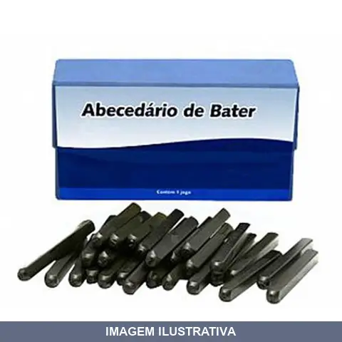
ABECEDARIO DE BATER BRASFORT
Abecedário de Bater 8 mm BRASFORT – cód. 6024 (descrição completa) Tipo: jogo de punções para marcar letras “a martelo” (abecedário de bater) Tamanho do caractere: 8 mm (modelo 6024) Conteúdo: letras de A a Z Material: aço forjado Aplicações: marcação em metais, couro, plástico, etc. Acompanha: caixa para armazenamento
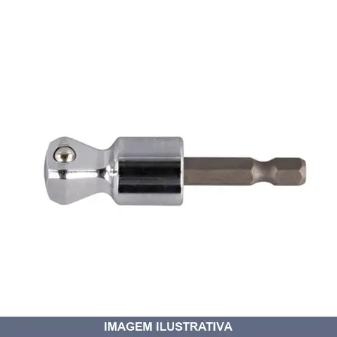
ADAPTADOR DE SOQUETES 1/2X50
Indicação de Uso: Parafusadeiras e chaves de impacto, marcenaria e metal mecânica. Material e Resistência: Liga de aço com articulação de até 15°. Vantagem Prática: Adaptador que permite utilizar soquetes de 1/4" em ferramentas com encaixe de 1/2", facilitando diferentes aplicações em trabalhos de fixação e afrouxamento.
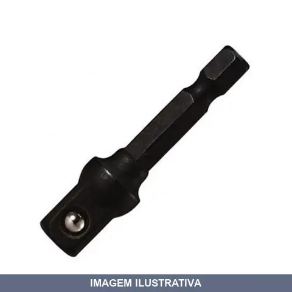
ADAPTADOR DE SOQUETES 3/8X1/4
Adaptador para soquetes com encaixe sextavado 1/4" que permite conectar soquetes com encaixe quadrado 3/8" em parafusadeiras. Tamanho 3/8" x 50mm de comprimento. Fabricado em aço temperado de alta resistência para suportar torque de ferramentas de impacto. Uso ideal em parafusadeiras, furadeiras e ferramentas pneumáticas.
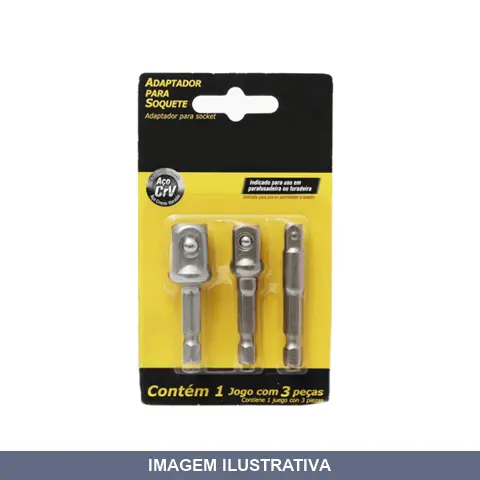
ADAPTADOR DE SOQUETES JG COM PCS VONDER
Indicação de Uso: Adaptador de soquetes para uso em ferramentas elétricas e pneumáticas, permitindo a conexão entre diferentes tamanhos de encaixes. Aplicável em trabalhos de manutenção, montagem e desmontagem de peças. Material e Resistência: Fabricado em aço, resistente ao desgaste e impactos decorrentes do uso contínuo. Vantagem Prática: Facilita a versatilidade de uso ao conectar soquetes de diferentes medidas em uma única ferramenta.
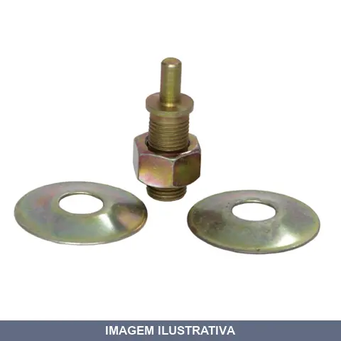
ADAPTADOR PARA FURADEIRA KIT M- MIL KITS
Indicação de Uso: Ideal para acoplar disco de borracha, boinas, rebolos e pedras de afiar em furadeiras e parafusadeiras. Material e Resistência: Composição em ferro. Vantagem Prática: Permite utilização de brocas e acessórios de diferentes tamanhos, facilitando trabalho em diversas superfícies.
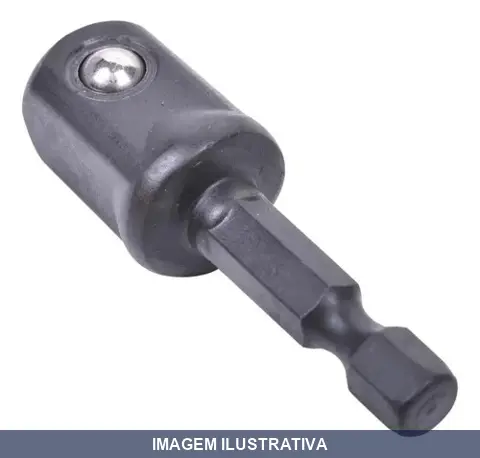
ADAPTADOR PARA SOQUETE WORKER
Indicação de Uso: Adaptador para conectar soquetes de diferentes tamanhos em chaves de cano e ferramentas de impacto. Material e Resistência: Construído em aço, resistente para uso profissional. Vantagem Prática: Permite compatibilidade entre ferramentas de tamanhos distintos, ampliando a versatilidade do kit de ferramentas.
![ADAPTADOR REDUCAO PARA SOQUETE /2FX3/ GEDORE 1 4M [014417]](fotos/014417.webp)
ADAPTADOR REDUCAO PARA SOQUETE /2FX3/ GEDORE 1 4M [014417]
Adaptador para soquete manual em aço Gedore-Vanadium com acabamento niquelado e cromado. Encaixe externo 1/2" (12,7 mm) e interno 3/4" (19,05 mm), conforme normas DIN 3120 e ISO 1174. Permite ampliação ou redução de encaixe em conjunto com cabo T e soquetes.
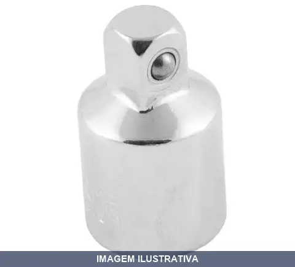
ADAPTADOR REDUCAO PARA SOQUETE /2FX3/ GEDORE 1 8M [019624]
Indicação de Uso: Reduzir encaixe de catraca ou cabo T de 1/2" para 3/8", para ferramentas e soquetes com diferentes tamanhos de encaixe. Material e Resistência: Fabricado em aço cromo-vanádio conforme normas DIN 3120 e ISO 1174. Acabamento niquelado e cromado.
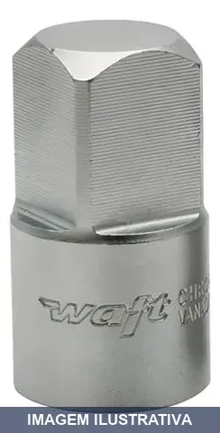
ADAPTADOR REDUCAO PARA SOQUETE /2FX3/ WAFT 1 4M 6161 [019823]
Indicação de Uso: Adaptador de redução para soquete estriado, indicado para uso com cabo de força. Não pode ser utilizado em chaves de impacto. Material e Resistência: Fabricado em aço cromo-vanádio com acabamento cromado.
![ADAPTADOR REDUCAO PARA SOQUETE /2FX3/ WAFT 1 8M 6323 [019824]](fotos/019824.webp)
ADAPTADOR REDUCAO PARA SOQUETE /2FX3/ WAFT 1 8M 6323 [019824]
Indicação de Uso: Converter tamanho de encaixe entre soquetes, catracas e ferramentas de impacto, permitindo usar um soquete com tamanho de encaixe quadrado diferente. Material e Resistência: Aço Cromo Vanádio, suporta altas cargas de torque. Vantagem Prática: Compatível com diversos tipos de soquetes, oferecendo versatilidade e aproveitamento do kit de ferramentas.
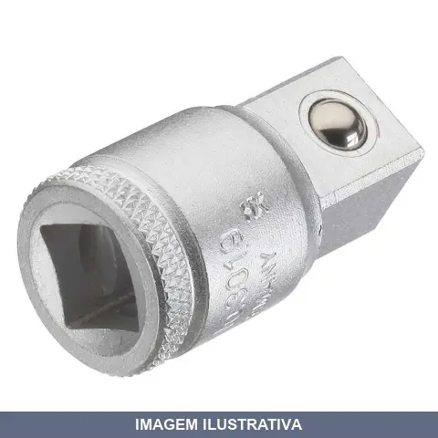
ADAPTADOR REDUCAO PARA SOQUETE /2MX3/8F GEDORE
Indicação de Uso: Para acessórios manuais com encaixe quadrado, adaptando soquetes de diferentes tamanhos conforme normas DIN 3120 e ISO 1174. Material e Resistência: Fabricado em aço Gedore-Vanadium com acabamento niquelado e cromado, torque máximo 202 Nm. Vantagem Prática: Permite adaptar catracas e cabos T, aumentando a versatilidade da caixa de ferramentas.

ADAPTADOR REDUCAO PARA SOQUETE /4FX GEDORE
Adaptador para soquete com encaixe 3/4" (fêmea) e 1" (macho). Fabricado em aço Gedore-Vanadium com acabamento niquelado e cromado. Comprimento 60 mm. Conforme normas DIN 3120 e ISO 1174. Torque máximo 512 N.m. Utilizado para ampliação ou redução de encaixe em conjunto com soquetes e cabos T.

ADAPTADOR REDUCAO PARA SOQUETE /4FX WAFT
Adaptador de redução para soquete, encaixe 3/4 polegada fêmea x 1 polegada macho, modelo 6324. Fabricado em aço cromo vanádio. Permite converter o tamanho do encaixe entre soquetes e acessórios com quadrados de encaixe diferentes, compatível com catracas, extensões e ferramentas para ampliação ou redução de encaixe.
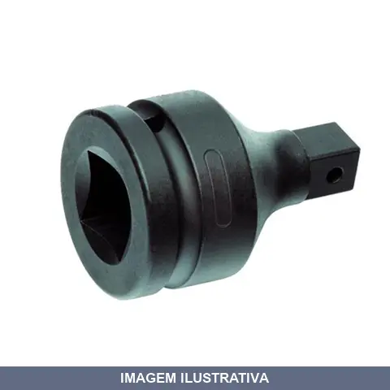
ADAPTADOR REDUCAO PARA SOQUETE /4FX1/ DE IMPACTO 3 2M
Indicação de Uso: Adaptador redutor para conversão de encaixes em ferramentas de impacto, permitindo uso de soquetes de menor diâmetro em chaves de impacto de maior capacidade. Material e Resistência: Construído em aço para suportar impactos e torques elevados. Vantagem Prática: Amplia a versatilidade de uso de soquetes e ferramentas de impacto, reduzindo necessidade de múltiplos conjuntos.
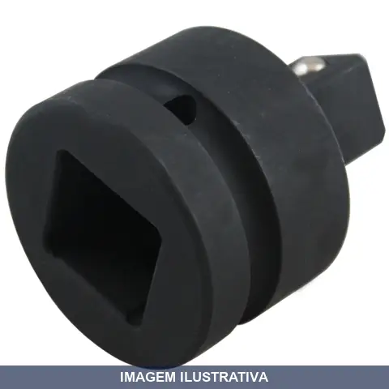
ADAPTADOR REDUCAO PARA SOQUETE /4FX1/ DE IMPACTO 6170 3 2M
Adaptador para soquete de impacto com encaixe fêmea 3/4" e encaixe macho 1/2". Fabricado em aço cromo vanádio com acabamento fosfatizado. Indicado para uso em conjunto com máquinas pneumáticas de impacto e soquetes, permitindo converter encaixes de tamanhos diferentes.

ADAPTADOR REDUCAO PARA SOQUETE /4FX1/ GEDORE
Indicação de Uso: Adaptador para acessórios manuais com encaixe quadrado de 19,05 mm (3/4"), permitindo a utilização de soquetes com encaixe de 1/2". Conforme normas DIN 3120 e ISO 1174. Material e Resistência: Aço Gedore-Vanadium com acabamento niquelado e cromado. Torque máximo 512 N.m conforme DIN 3123. Vantagem Prática: Permite adaptar catracas e cabos de força de diferentes tamanhos de

ADAPTADOR REDUCAO PARA SOQUETE /4FX3/ WAFT
Indicação de Uso: Adaptador de redução para soquetes e ferramentas com diferentes encaixes. Material e Resistência: Fabricado em aço cromo vanádio (Cr-V). Vantagem Prática: Permite converter o encaixe de 1/4" para 3/8", oferecendo versatilidade para ampliação ou redução de encaixes em catracas, extensões e ferramentas de impacto.
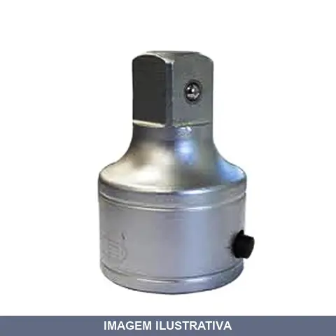
ADAPTADOR REDUCAO PARA SOQUETE /4MX1F GEDORE
Indicação de Uso: Adaptador para ampliação ou redução de encaixe entre ferramentas manuais e soquetes de diferentes tamanhos. Utilizado em conjunto com catracas, cabos T e outros acessórios para trabalhos em mecânica, manutenção industrial e afins. Material e Resistência: Aço Gedore-Vanadium. Acabamento niquelado e cromado. Torque máximo 512 N.m conforme norma DIN 3123. Atende

ADAPTADOR REDUCAO PARA SOQUETE 1FX3/ DE IMPACTO 6168
Adaptador de redução para soquete de impacto com encaixe interno (fêmea) de 1 polegada e encaixe externo (macho) de 3/4 polegada. Fabricado em aço cromo vanádio com acabamento fosfatizado. Indicado para uso em conjunto com máquinas pneumáticas de impacto e soquetes. Proporciona resistência e proteção contra corrosão. Facilita a adaptação entre ferramentas com encaixes quadrados diferentes.

ADAPTADOR SDS-PLUS PARA SOQUETE DE VONDER
Indicação de Uso: Adaptar mandril de rosca de 1/2 polegada 20 fios em máquinas com encaixe tipo SDS Plus. Transforma furadeiras com encaixe SDS Plus para uso de soquetes de 1/2 polegada. Não utilizar função com impacto em martelos ou marteletes. Material e Resistência: Aço ao cromo. Vantagem Prática: Equipado com parafuso para travar a haste no mandril, permitindo travamento seguro.
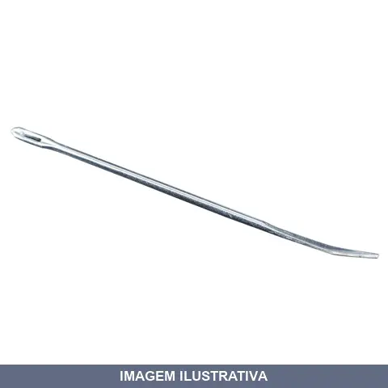
AGULHA COSTURAR STARFER
AGULHA 125MM PARA COSTURAR SACO ( SACO COM 50 PEÇAS )
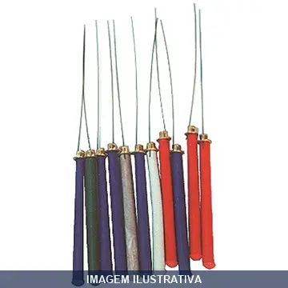
AGULHA PARA FOGAO COM COELFF
Indicação de Uso: Para limpeza e desobstrução dos bicos de fogão a gás. Material e Resistência: Composição de plástico PP com arame de aço. Vantagem Prática: Permite manutenção do fogão sem necessidade de técnico.
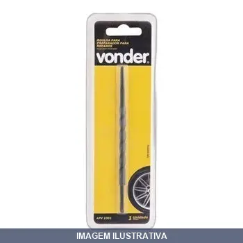
AGULHA PARA PREPARADOR DE REPAROS VONDER
Agulha para preparador Indicada para preparação de reparos em pneu sem câmara. Utilizada em conjunto com o cabo tipo T do preparador para reparos (não acompanha o cabo).
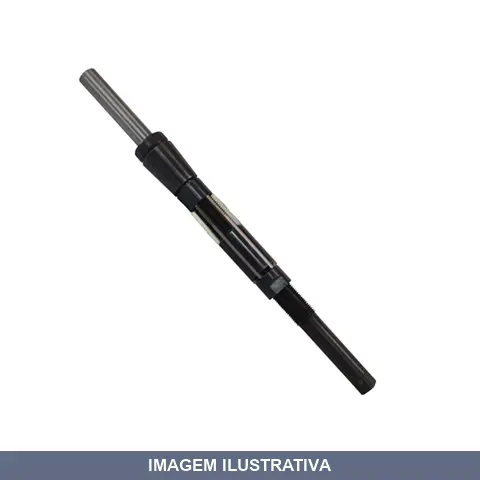
ALARGADOR EXPANSIVO COM GUIA H ,75A27, ROCAST
Indicação de Uso: Alargador expansivo para furos em metal, utilizado em trabalhos de mecânica e usinagem de precisão. Material e Resistência: Construído em aço, com sistema expansivo e guia de precisão. Vantagem Prática: Proporciona furos uniformes e limpos com controle de profundidade através do guia.
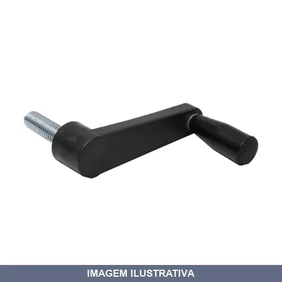
ALAVANCA COM CABO
Indicação de Uso: Alavanca para movimentação, ajuste e destravamento de componentes em trabalhos de manutenção, reparo e montagem. Material e Resistência: Construída em plástico resistente com cabo tipo Centerrol que oferece ergonomia e firmeza na empunhadura. Vantagem Prática: Permite aplicar força com precisão em espaços reduzidos e de difícil acesso.

ALAVANCA COM CABO GIRATORIO CENTERROL
Indicação de Uso: Alavanca de fixação utilizada para travamento, ajuste e aperto de peças, dispositivos e equipamentos. Material e Resistência: Corpo em material plástico resistente com espiga roscada em aço e cabo giratório que permite rotação durante o uso. Vantagem Prática: O cabo giratório reduz a fadiga do operador ao permitir ajuste ergonômico da empunhadura durante a operação.
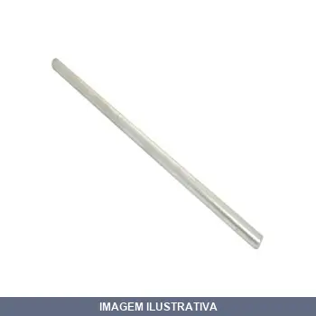
ALAVANCA CROMO
A400 ALAVANCA PARA CHAVE DE RODA 3/4''X400MM COD: 08.01.015.0003
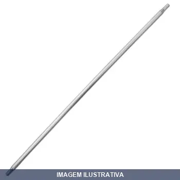
ALAVANCA MANIPULO LONGO . MT
Alavanca com manípulo longo para acionamento de chave de roda. Indicação de Uso: Remoção e instalação de rodas em veículos. Material e Resistência: Construção robusta para aplicações de alta resistência. Vantagem Prática: Manípulo alongado proporciona melhor alavancagem e reduz esforço físico durante a operação.
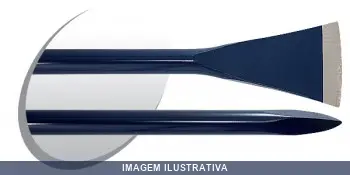
ALAVANCA RETA . LARGA MINASUL
Alavanca reta de seção larga, fabricada em aço carbono. Indicada para operações de alavancagem, movimentação de cargas e trabalhos de demolição. Possui pintura protetiva que oferece proteção contra oxidação.
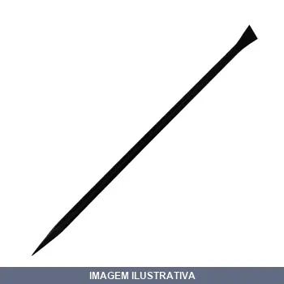
ALAVANCA RETA M MINASUL
ALAVANCA 7/8'' X 1,50 METROS MACIÇA Alavanca maciça reta é utilizada na agricultura, jardinagem e na construção civil, quebrar superfícies duras. BENEFÍCIOS DO PRODUTO 1. As cavadeiras e alavancas maciças são fabricada em aço carbono especial de alta qualidade; 2. Recebe pintura por imersão, formando uma camada de proteção a peça.
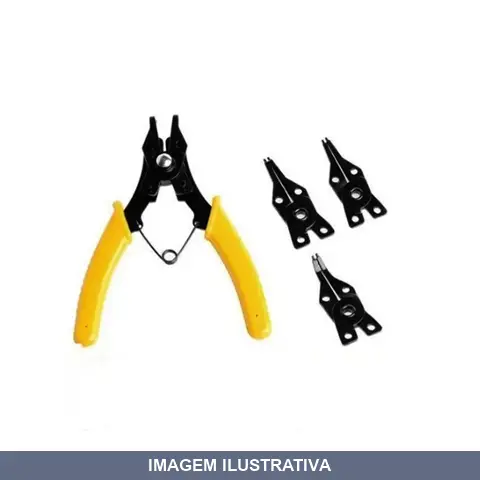
ALICATE ANEIS COM PONTAS INTERCAMBIAL NOVE54 VONDER
Indicação de Uso: Alicate especializado para trabalhos com anéis de retenção e peças cilíndricas. Material e Resistência: Construído em aço, adequado para aplicações mecânicas gerais. Vantagem Prática: Pontas intercambiáveis permitem adaptação a diferentes tipos e tamanhos de anéis, ampliando a versatilidade de uso em manutenção e montagem.
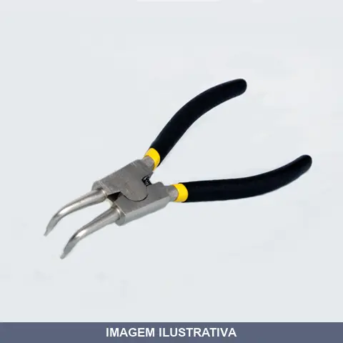
ALICATE ANEIS EXTERNO CURVO 90O ( - ) GEDORE
Indicação de Uso: Montagem e desmontagem de anéis de segurança externos. Material e Resistência: Aço Gedore-Vanadium com acabamento fosfatizado, corpo forjado. Vantagem Prática: Mola de abertura, cabo plastificado, conforme normas DIN 471 e DIN 983.

ALICATE ANEIS EXTERNO CURVO NOLL
Indicação de Uso: Montagem e desmontagem de anéis de segurança externos (retenção). Material e Resistência: Aço cromo vanádio (Cr-V), forjado e temperado com revestimento em níquel. Capacidade de Abertura: 19 a 60 mm. Vantagem Prática: Pontas fixas curvas (90°) com mola de regulagem para acesso a áreas de difícil alcance e encaixe preciso nos anéis.

ALICATE ANEIS EXTERNO CURVO VONDER
Indicado para uso profissional na remoção e colocação de anéis externos de retenção Produzido em aço cromo vanádio, proporcionando maior resistência e durabilidade Material do corpo do alicate: Aço cromo vanádio Acabamento do alicate: Niquelado Comprimento total do alicate: 4.1/2'' - 114,3 mm Diâmetro do bico do alicate: 2,0 mm Tipo do cabo do alicate: Plastificado Tipo do bico do alicate: Curvo externo Diâmetro de aplicação: 18 mm a 63 mm
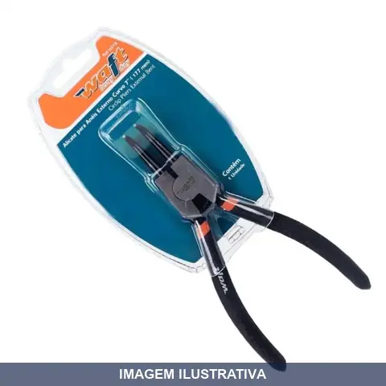
ALICATE ANEIS EXTERNO CURVO WAFT
Indicação de Uso: Remoção e colocação de anéis externos de retenção, indicado para uso profissional em mecânica. Material e Resistência: Aço carbono com sistema de mola de retorno, cabo preto antiaderente. Vantagem Prática: Economiza força e tempo durante o trabalho contínuo.

ALICATE ANEIS EXTERNO RETO GEDORE
Indicação de Uso: Montagem e desmontagem de anéis de segurança externos, conforme normas DIN 471 e DIN 983. Material e Resistência: Corpo em aço Gedore-Vanadium com acabamento escurecido, empunhadura plastificada na cor azul padrão Gedore. Vantagem Prática: Pontas fixas e retas com mola para regulagem suave da abertura. Encaixe preciso mesmo em locais de difícil acesso.

ALICATE ANEIS EXTERNO RETO NOLL
Indicação de Uso: Remoção e instalação de anéis de retenção externos em eixos e componentes mecânicos. Material e Resistência: Aço temperado, resistente ao desgaste em operações repetitivas. Vantagem Prática: Ponta curva facilita acesso a espaços reduzidos e precisão no posicionamento dos anéis.
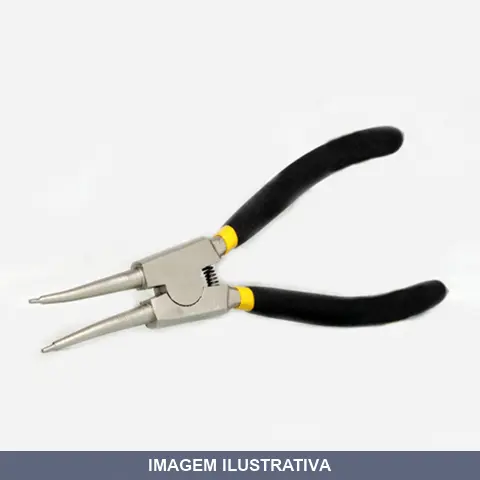
ALICATE ANEIS EXTERNO RETO VONDER 5POL [018475]
Indicado para uso profissional na remoção e colocação de anéis externos de retenção Produzido em aço cromo vanádio, proporcionando maior resistência e durabilidade Material do corpo do alicate: Aço cromo vanádio Acabamento do alicate: Niquelado Comprimento total do alicate: 5' - 127 mm Diâmetro do bico do alicate: 2,0 mm Tipo do cabo do alicate: Plastificado Tipo do bico do alicate: Reto externo Diâmetro de aplicação: 18 mm a 63 mm
![ALICATE ANEIS EXTERNO RETO VONDER 7POL [000034]](fotos/000034.webp)
ALICATE ANEIS EXTERNO RETO VONDER 7POL [000034]
Indicado para uso profissional na remoção e colocação de anéis externos de retenção Produzido em aço cromo vanádio, proporcionando maior resistência e durabilidade Material do corpo do alicate: Aço cromo vanádio Acabamento do alicate: Niquelado Comprimento total do alicate: 7'' - 177 mm Diâmetro do bico do alicate: 2,0 mm Tipo do cabo do alicate: Plastificado Tipo do bico do alicate: Reto externo Diâmetro de aplicação: 18 mm a 63 mm
![ALICATE ANEIS EXTERNO RETO VONDER 9POL [013345]](fotos/013345.webp)
ALICATE ANEIS EXTERNO RETO VONDER 9POL [013345]
Indicação de Uso: Remoção e colocação de anéis externos de retenção em trabalhos profissionais. Material e Resistência: Aço cromo vanádio com acabamento niquelado e cabo plastificado, proporcionando resistência e durabilidade. Vantagem Prática: Bico reto permite maior precisão e controle em espaços reduzidos.
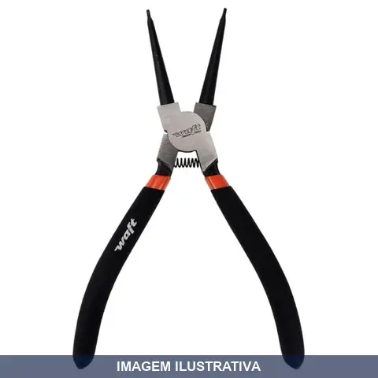
ALICATE ANEIS EXTERNO RETO WAFT 7POL 6579 [019829]
Indicação de Uso: Remoção e colocação de anéis externos. Material e Resistência: Aço carbono de qualidade, resistente e durável. Vantagem Prática: Cabo ergonômico para conforto durante o uso.

ALICATE ANEIS INTERNO CURVO 4.1/2
Indicado para uso profissional na remoção e colocação de anéis internos de retenção Produzido em aço cromo vanádio, proporcionando maior resistência e durabilidade. Material do corpo do alicate: Aço cromo vanádio Acabamento do alicate: Niquelado Comprimento total do alicate: 4.1/2'' - 114,3 mm Diâmetro do bico do alicate: 2,0 mm Tipo do cabo do alicate: Plastificado Tipo do bico do alicate: Curvo interno Diâmetro de aplicação: 18 mm a 63 mm

ALICATE ANEIS INTERNO CURVO 6.1/2
Indicado para uso profissional na remoção e colocação de anéis internos de retenção Produzido em aço cromo vanádio, proporcionando maior resistência e durabilidade. Material do corpo do alicate: Aço cromo vanádio Acabamento do alicate: Niquelado Comprimento total do alicate: 6.1/2'' - 165 mm Diâmetro do bico do alicate: 2,0 mm Tipo do cabo do alicate: Plastificado Tipo do bico do alicate: Curvo interno Diâmetro de aplicação: 18 mm a 63 mm

ALICATE ANEIS INTERNO CURVO 7POL
Indicação de Uso: Montagem e desmontagem de anéis de segurança internos. Características Técnicas: Modelo interno curvo 90°, capacidade de abertura de 19-60mm.
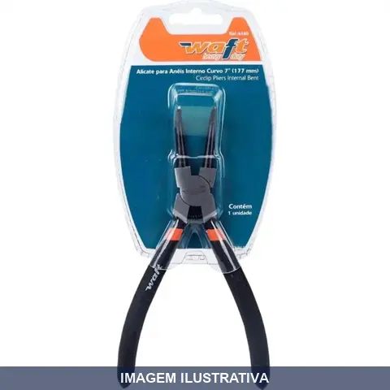
ALICATE ANEIS INTERNO CURVO 7POL 6580
Alicate específico para instalação e remoção de anéis internos curvos em furos e cavidades. Fabricado em aço, apropriado para trabalhos de manutenção e montagem mecânica. O formato curvo facilita o acesso em espaços restritos e permite manipulação precisa de componentes pequenos.
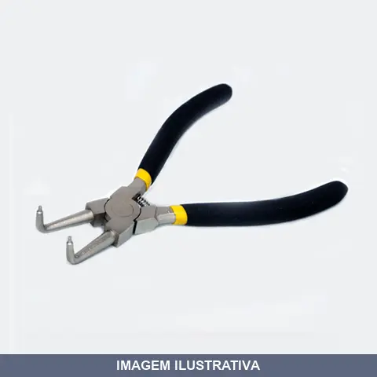
ALICATE ANEIS INTERNO CURVO 8.1/2
Indicação de Uso: Profissional para remoção e colocação de anéis internos de retenção. Material e Resistência: Aço cromo vanádio com acabamento niquelado. Bico curvo com 2,0 mm de diâmetro. Diâmetro de aplicação de 31 mm a 120 mm. Vantagem Prática: Cabo plastificado ergonômico para empunhadura.
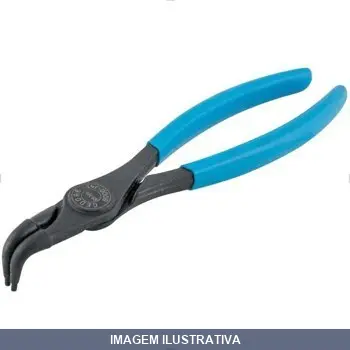
ALICATE ANEIS INTERNO CURVO 90O ( - ) GEDORE
Indicação de Uso: Montagem e desmontagem de anéis de segurança internos conforme normas DIN 472 e DIN 984. Material e Resistência: Aço Gedore-Vanadium, acabamento escurecido, empunhadura plastificada azul padrão Gedore. Vantagem Prática: Pontas fixas e curvas 90°, permite fácil instalação e remoção em locais de difícil acesso.
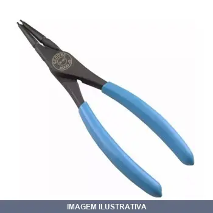
ALICATE ANEIS INTERNO RETO ( - ) GEDORE
Indicação de Uso: Montagem e desmontagem de anéis de segurança internos conforme normas DIN 472 e DIN 984. Material e Resistência: Corpo em aço Gedore-Vanadium com acabamento escurecido, empunhadura plastificada azul padrão Gedore. Pontas fixas e retas com diâmetro de 1,8 mm. Vantagem Prática: Ferramentas de precisão para aplicações profissionais em oficinas mecânicas, montagens

ALICATE ANEIS INTERNO RETO J GEDORE
Indicação de Uso: Montagem e desmontagem de anéis de segurança internos conforme normas DIN 472 e DIN 984. Material e Resistência: Aço Gedore-Vanadium fosfatizado com acabamento escurecido. Vantagem Prática: Empunhadura plastificada na cor azul padrão Gedore, pontas fixas e retas para encaixe nos anéis.
![ALICATE ANEIS INTERNO RETO NOLL 7POL [013440]](fotos/013440.webp)
ALICATE ANEIS INTERNO RETO NOLL 7POL [013440]
Indicação de Uso: Instalação e remoção de anéis de retenção internos em furos e cavidades. Aplicável em manutenção mecânica, montagem industrial e reparos em geral. Material e Resistência: Construído em aço, oferecendo resistência para operações repetidas. Vantagem Prática: Formato reto facilita o acesso em furos profundos e espaços lineares, permitindo encaixe e desencaixe de anéis com precisão.
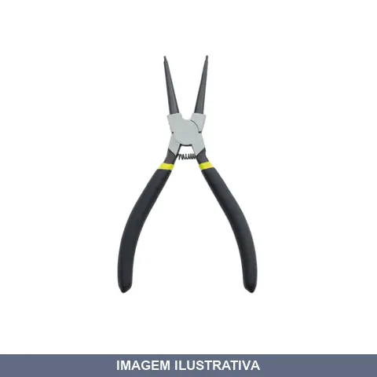
ALICATE ANEIS INTERNO RETO VONDER 5POL [018476]
Indicado para uso profissional na remoção e colocação de anéis internos de retenção Produzido em aço cromo vanádio, proporcionando maior resistência e durabilidade Material do corpo do alicate: Aço cromo vanádio Acabamento do alicate: Niquelado Comprimento total do alicate: 5'' - 127 mm Diâmetro do bico do alicate: 2,0 mm Tipo do cabo do alicate: Plastificado Tipo do bico do alicate: Reto interno Diâmetro de aplicação: 18 mm a 63 mm
![ALICATE ANEIS INTERNO RETO VONDER 7POL [006225]](fotos/006225.webp)
ALICATE ANEIS INTERNO RETO VONDER 7POL [006225]
Indicado para uso profissional na remoção e colocação de anéis internos de retenção Produzido em aço cromo vanádio, proporcionando maior resistência e durabilidade Material do corpo do alicate: Aço cromo vanádio Acabamento do alicate: Niquelado Comprimento total do alicate: 7'' - 177 mm Diâmetro do bico do alicate: 2,0 mm Tipo do cabo do alicate: Plastificado Tipo do bico do alicate: Reto interno Diâmetro de aplicação: 18 mm a 63 mm
![ALICATE ANEIS INTERNO RETO VONDER 9POL [013346]](fotos/013346.webp)
ALICATE ANEIS INTERNO RETO VONDER 9POL [013346]
Indicação de Uso: Remover e instalar anéis internos de retenção em trabalhos profissionais de manutenção e montagem. Material e Resistência: Fabricado em aço cromo vanádio com acabamento niquelado. Cabo plastificado para conforto e segurança na manipulação. Vantagem Prática: Bico reto permite acesso direto e maior precisão em espaços reduzidos.
![ALICATE ANEIS INTERNO RETO WAFT 7POL 6581 [019831]](fotos/019831.webp)
ALICATE ANEIS INTERNO RETO WAFT 7POL 6581 [019831]
Indicado para uso profissional na remoção e colocação de anéis internos de retenção. Material e Resistência: Aço carbono. Vantagem Prática: Cabo ergonômico que oferece conforto durante a aplicação mecânica.
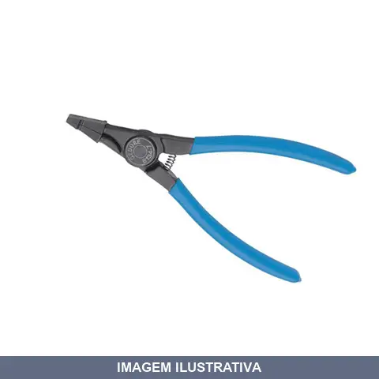
ALICATE ANEIS TIPO TRAVA CAMBIO "GEDORE
Indicação de Uso: Remoção e instalação de anéis de segurança em forma de ferradura, com aplicação em travacâmbio automotivo. Material e Resistência: Aço vanadium com acabamento fosfatizado. Vantagem Prática: Mola para regulagem da abertura; empunhadura plastificada.
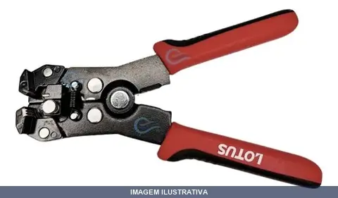
ALICATE AUTOMATICO CORTADOR/CRIMPADOR/DECAPADOR PLUS LOTUS
Indicação de Uso: Corte, decapagem e crimpagem de cabos e fios de cobre e alumínio; crimpagem de terminais isolados e não isolados. Material e Resistência: Corpo em aço carbono temperado e fosfatado; garras em aço Wedm Cr12MoV com dureza 55-60 HRC; cabo ergonômico com revestimento de borracha. Vantagem Prática: Funciona com ajuste automático para bitolas de 0,2 mm a 6,0 mm (até 7 variações); pino regulador da intensidade da força para precisão em
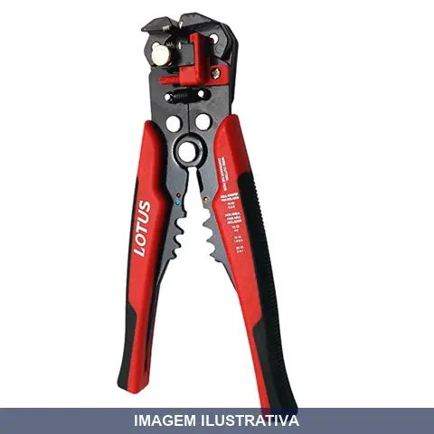
ALICATE AUTOMATICO DECAPADORE CRIMPDOR COM AJUSTE PLUS LOTUS
Alicate automático multifuncional para decapagem de fios e crimpagem de terminais. Equipado com sistema de ajuste para diferentes bitolas de condutores. Indicado para trabalhos em instalações elétricas, manutenção e projetos que exijam preparação e fixação de conectores em cabos. Estrutura em metal resistente com mecanismo automático de corte e prensagem.
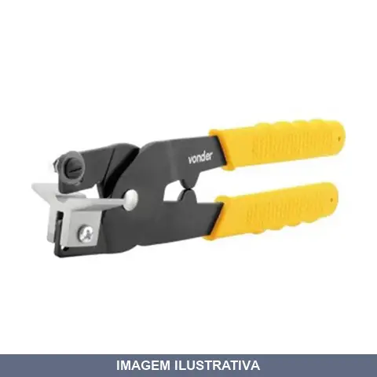
ALICATE AZULEJISTA VONDER
Indicado para cortar pisos e azulejos Rodel riscador em metal duro
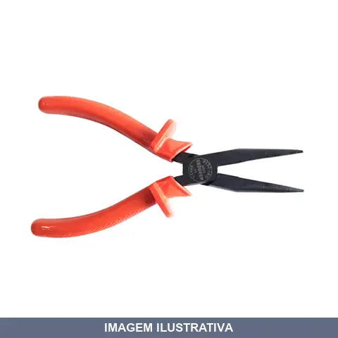
ALICATE BICO MEIA CANA GEDORE
Indicação de Uso: Corte, tração e dobra de fios; montagens e reparos eletroeletrônicos; trabalhos com arame de dureza média até Ø 1,6 mm. 1/2" (160 mm). Material e Resistência: Corpo em aço Gedore-Vanadium com tratamento térmico total e indução no corte; dureza 58-65 HRC; empunhadura em polímero anti-chamas laranja. Isolação até 1000 V conforme norma NBR 9699. Vantagem Prática: Bico semirredondo e reto com dentes finos em paralelo; empunhadura ergonômica e antideslizante com abas
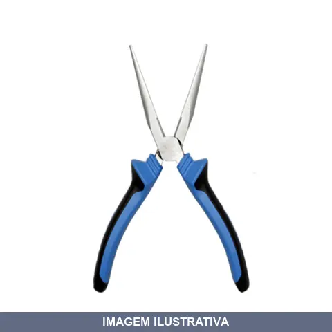
ALICATE BICO MEIA CANA LONGO RETO GEDORE
Alicate tipo telefone com bico meia cana longo e reto. Ferramenta manual para corte de fios e arames de dureza média, além de puxar, segurar e dobrar materiais. Corpo em aço carbono com empunhadura em polímero ergonômico. Indicado para trabalhos gerais em eletricidade, eletrônica e manutenção.
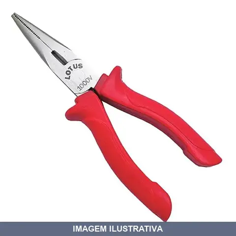
ALICATE BICO MEIA CANA LONGO RETO ISOLADA LOTUS
Alicate de bico meia cana reto 6 polegadas com isolação até 1000V. Fabricado em aço forjado e temperado. Indicado para manuseio de terminais, corte de fios e arames em instalações elétricas. Cabo isolado com abas de proteção para manuseio. Recomendado para trabalhos elétricos em locais com baixas tensões.
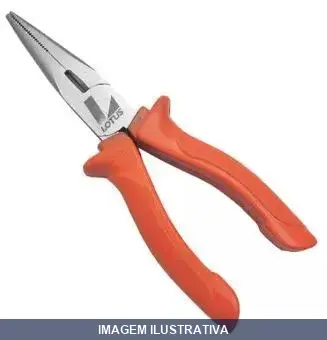
ALICATE BICO MEIA CANA LONGO RETO PRIX LOTUS
Indicação de Uso: Trabalhos de corte, manipulação e dobra de fios e cabos elétricos, além de tarefas gerais de manutenção e instalação. Material e Resistência: Construído em aço, oferecendo durabilidade para uso repetitivo. Vantagem Prática: Bico meia cana com comprimento estendido permite alcance maior e maior precisão em espaços reduzidos.
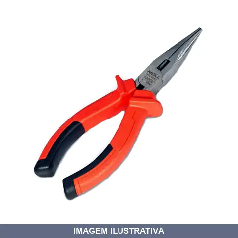
ALICATE BICO MEIA CANA NOLL
Indicação de Uso: Trabalhos de corte, dobra e manipulação de fios e cabos elétricos, além de peças metálicas em geral. Material e Resistência: Construção em aço, com bocas em formato de meia cana que proporcionam aderência. Vantagem Prática: O bico meia cana permite trabalhar com segurança em superfícies arredondadas e cilíndricas, reduzindo danos ao material manipulado.
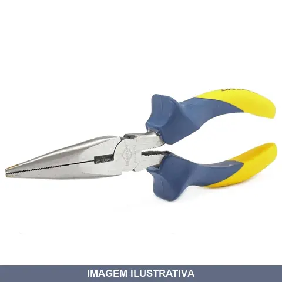
ALICATE BICO MEIA CANA RETO POLIDO BRASFORT
Alicate bico meia cana reto de 6 polegadas (152mm) com corpo em aço carbono forjado polido e cabo emborrachado em TPR azul e amarelo. Ponta fina para uso em manutenção elétrica em locais de difícil acesso. Serve para torção e corte de fios e cabos. Também utilizado para dobrar, puxar, prender arames e trabalhos com chapas finas.
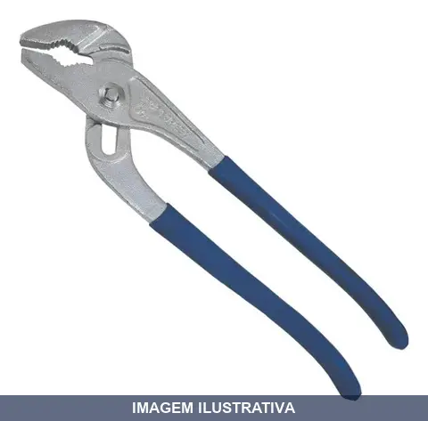
ALICATE BOMBA D AGUA FLEX LOTUS
Indicação de Uso: Instalação e manutenção de bombas, registros, boias e válvulas. Recomendado para serviços hidráulicos com porcas, roscas e tubos cilíndricos, quadrados e hexagonais. Material e Resistência: Aço carbono forjado, temperado e cromado com cabo ergonômico de plástico. Vantagem Prática: Ranhuras internas para regulagem confortável e segura, mandíbula ovalada para maior torque e versatilidade com abertura regulável.

ALICATE BOMBA D AGUA PLUS LOTUS
Indicação de Uso: Alicate específico para trabalhos com bombas d'água, ideal para aperto e desaperto de conexões e componentes hidráulicos. Material e Resistência: Construído em aço, oferece durabilidade para uso profissional. Vantagem Prática: Formato de bomba d'água proporciona alavancagem e controle em instalações e manutenção de sistemas hidráulicos.
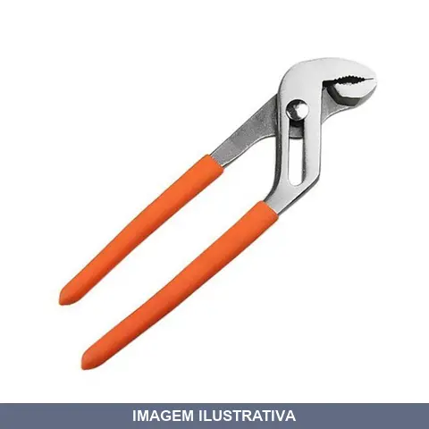
ALICATE BOMBA D AGUA STARFER
Alicate bomba d'água articulado de 10 polegadas (250mm) em aço forjado com cabo ajustável em PVC. Indicado para fixar, soltar tubos, torneiras e registros. Capacidade de abertura de 40mm. Possuir design com bico de papagaio e abertura ajustável para aplicação de torque em tubos, conexões e porcas.
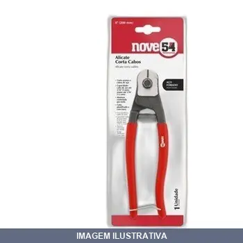
ALICATE CORTA CABO . NOVE54
ALICATE DE CORTE 8'' 954 INDICADO PARA CORTAR ARAMES FARPADOS E LISOS, CABOS DE AÇO E TELAS. CAPACIDADE CORTE CABOS DE AÇO ATÉ 3/16=5MM---ARAMES ATÉ 1/16--1,5MM
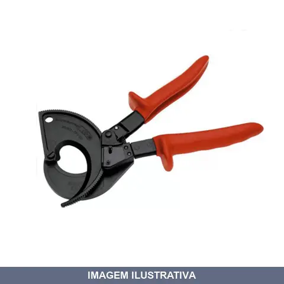
ALICATE CORTA CABO ELETR COM CATRACA NOLL
INDICADO PARA CORTE DE CABOS RÍGIDOS E FLEXÍVEIS DE COBRE E ALUMINIO COM DIAMETRO DE ATÉ 32MM
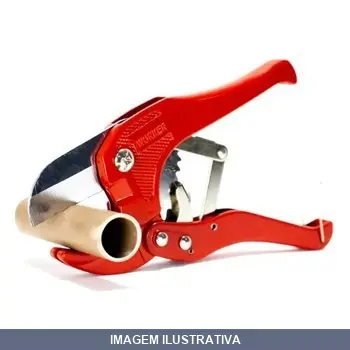
ALICATE CORTADOR DE TUBO PVC WORKER
Indicação de Uso: Corte de tubos de PVC até 42mm. Material e Resistência: Corpo e cabo ergonômico em metal com lâmina de aço. Vantagem Prática: Proporciona cortes rápidos, limpos, macios e sem rebarbas.
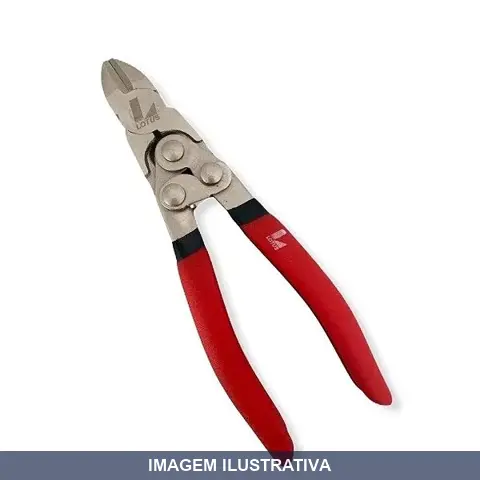
ALICATE CORTE DIAGONAL , JUNTA DUPLA PLUS LOTUS
Indicação de Uso: Cortar arames, cabos de metal e fios de diversos materiais em trabalhos elétricos, eletrônica, artesanato e manutenção. Material e Resistência: Aço cromo vanádio forjado e temperado com revestimento em níquel, resistente à oxidação e ferrugem. Cabo ergonômico em plástico especial com aderência. Vantagem Prática: Junta dupla que triplica o poder de aperto e corte pela alavancagem, proporcionando cortes limpos e precisos.
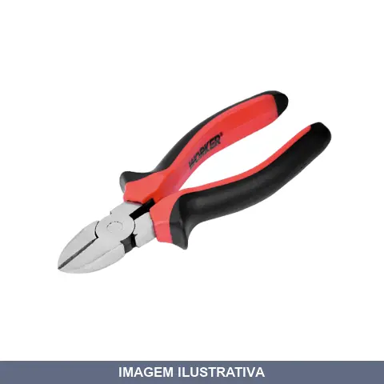
ALICATE CORTE DIAGONAL 6
Alicate de corte diagonal fabricado em aço carbono forjado e temperado. Lâmina temperada por indução para maior durabilidade. Cabo ergonômico revestido em PVC. Indicado para cortes precisos em fios, cabos e componentes em trabalhos de manutenção, eletrônica e instalações em geral.
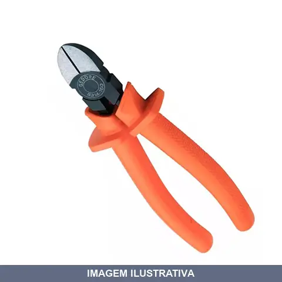
ALICATE CORTE DIAGONAL 6.1/4
Indicação de Uso: Corte de arames e fios de dureza média, ideal para trabalhos em espaços reduzidos. / Material e Resistência: Aço temperado com dureza 63-68 HRC, cabeça estreita, empunhadura em polímero. / Vantagem Prática: Corte preciso e eficiente para aplicações gerais em instalações e manutenção.
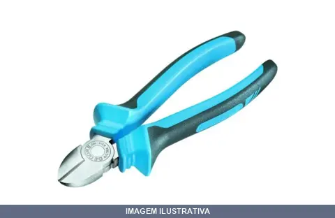
ALICATE CORTE DIAGONAL AZUL GEDORE
Indicação de Uso: Corte de arames e fios de dureza média em trabalhos de montagem e reparo. Material e Resistência: Aço-vanádio com tratamento térmico e corte temperado, dureza 63-65 HRC. Vantagem Prática: Empunhadura ergonômica em polímero resistente, oferecendo conforto e segurança durante o uso prolongado.
ALICATE CORTE DIAGONAL MINI BRASF
Indicação de Uso: Corte de fios, cabos e arames em trabalhos de manutenção elétrica, hidráulica e geral. Material e Resistência: Construção em aço, próprio para uso em corte diagonal. Vantagem Prática: Tamanho compacto permite acesso a espaços reduzidos e trabalhos de precisão.
ALICATE CORTE DIAGONAL PLUS LOTUS 6
Alicate de corte diagonal com 6 polegadas (≈160 mm), fabricado em aço cromo vanádio forjado e temperado. Revestimento em níquel resistente a corrosão e oxidação. Cabo ergonômico emborrachado, bicolor e antiderrapante. Lâminas precisas para cortes limpos em fios, cabos e metais diversos. Indicado para trabalhos de eletricidade, mecânica e aplicações gerais que demandem precisão.
ALICATE CORTE DIAGONAL PLUS LOTUS 6 1000V
Indicação de Uso: Alicate específico para corte de fios e cabos em trabalhos elétricos. Material e Resistência: Cabo isolado para trabalhos em circuitos de até 1000V. Vantagem Prática: Corte diagonal permite acesso a espaços reduzidos e precisa.
ALICATE CORTE DIAGONAL POLIDO BRASFORT
Indicação de Uso: Ideal para cortar fios, cabos, arames e cordões em geral, indicado para serviços elétricos, eletrônicos e hidráulicos. Material e Resistência: Forjado em aço carbono, com acabamento polido na cabeça e articulação. Cabo emborrachado em TPR nas cores azul e amarelo. Vantagem Prática: Mandíbula diagonal para corte preciso em espaços estreitos.
ALICATE CRIMPAR AC045 VONDER
• Indicado para terminais RJ 45/8 pinos • Para cabos de rede (rede lógica) • Desencapa, corta e crimpa fios de rede
ALICATE CRIMPAR CABO COAXIAL COMPRESSAO
Indicação de Uso: Crimpar conectores tipo F de compressão em cabos coaxiais RG-59 e RG-6, utilizados em instalações de TV a cabo, satélite, antenas e sistemas de circuito fechado de TV (CFTV). Material e Resistência: Corpo em aço carbono ou aço inoxidável com empunhadura revestida em borracha antiderrapante. Vantagem Prática: Compressão axial que evita mau contato na junção do fio com o conector, sem necessidade de solda; mola interna de pressão facilita
ALICATE CRIMPAR PARA CONECTORES RJ11 RJ45 FLEX LOTUS
Alicate crimpador para conectores RJ11 (4 pinos) e RJ45 (8 pinos), modelo Lotus Flex 7,3". Corpo em aço fosfatado com lâminas de inox. Integra três funções: corta, desencapa isolamento e realiza crimpagem. Cabo ergonômico emborrachado. Próprio para instalações elétricas, telefônicas e telecomunicações em uso profissional e doméstico.
ALICATE CRIMPAR PARA ENERGIA SOLAR MC4 NOLL
Indicação de Uso: Crimpagem de conectores MC4 em sistemas de energia solar fotovoltaica, para fixação em cabos solares. Material e Resistência: Construção em aço carbono com design robusto, resistente a ambientes externos e condições adversas. Vantagem Prática: Design ergonômico para operação confortável durante crimpagem, garantindo conexão segura e confiável dos conectores MC4.
ALICATE CRIMPAR PARA TERMINAIS SOLAR MC4 VONDER
Indicação de Uso: Crimpar terminais de cabos solares MC4. Material e Resistência: Corpo em aço carbono com acabamento fosfatizado, resistente à corrosão e oxidação. Cabo plastificado para aderência. Capacidade: Condutores de 2,5 mm², 4,0 mm² e 6,0 mm².

ALICATE CRIMPAR PRENSA TERMINAIS VONDER
Indicação de Uso: Crimpar terminais de barril aberto em fios e cabos elétricos. Capacidade: Condutores de 0,10mm² a 2,5mm². Material e Resistência: Aço carbono com acabamento fosfatizado (resistência à corrosão), cabo plastificado. Vantagem Prática: Ferramenta prática para conexões elétricas seguras em trabalhos de instalação, manutenção e manutenção.
ALICATE DE CORTE LATERAL ATE GEDORE
Indicação de Uso: Corte de fios e cabos elétricos em trabalhos de instalação elétrica e manutenção. Material e Resistência: Construído em aço, resistente para corte de condutores até a espessura especificada. Vantagem Prática: Corte lateral permite acesso em espaços reduzidos e trabalhos de precisão.
ALICATE DE INSERCAO HIKARI PUNCH DOWH HK307
Alicate de inserção punch down utilizado para conectar e cortar fios nos módulos RJ11 e RJ45. Indicado para telefonia, informática e eletrônica. Acompanha espátula e gancho como acessórios. Compatível com blocos Krone, Bargoa M10 e conectores Keystone Jack. Dimensões: 18,4 cm de comprimento. Peso: 60 g. Garantia de 6 meses.
ALICATE DECAPADOR PARA COAXIAL NOLL
Indicação de Uso: Ferramenta manual para decapar e remover isolamento de cabos coaxiais em instalações de telecomunicações, TV a cabo e sistemas de transmissão de sinal. Material e Resistência: Corpo em plástico resistente. Vantagem Prática: Realiza o corte e remoção de isolamento sem danificar o condutor interno do cabo coaxial.
ALICATE DECAPAGEM MORDENTE COM LIMITADOR E AJUSTE LOTUS
Indicação de Uso: Decapagem de fios em trabalhos de manutenção elétrica, telefônica e informática. Material e Resistência: Lâmina de inox resistente a oxidação; corpo com cabo ergonômico em plástico. Vantagem Prática: Limitador e ajuste de mordente para maior controle; funciona em fios sólidos e flexíveis.
ALICATE ELETRECISTA MULTIUSO EM NOLL
- Para cortar e descascar fios - Atua como prensa de terminais
ALICATE ELETRECISTA MULTIUSO STANLEY
- Para cortar e descascar fios - Atua como prensa de terminais
ALICATE ELETRECISTA PLUS LOTUS
- Para cortar e descascar fios - Atua como prensa de terminais
ALICATE EXPANSOR PARA ANEIS DE PISTAO - NOLL 050 100MM
Indicação de Uso: Montagem de anéis de pistão em motores automotivos e industriais. Material e Resistência: Aço carbono com acabamento cromado e empunhadura com revestimento especial. Vantagem Prática: Expansão controlada que permite instalar anéis sem danificar as peças.
ALICATE EXPANSOR PARA ANEIS DE PISTAO - NOLL 080 120MM
Indicação de Uso: Montagem de pistão com anéis no cilindro. Material e Resistência: Fabricado em aço especial com acabamento niquelado e cabo forjado em plástico. Vantagem Prática: Permite trabalhar com diferentes tamanhos de anéis de pistão em um único alicate, proporcionando versatilidade na montagem e desmontagem.
ALICATE EXPANSOR PARA ANEIS DE PISTAO - NOLL 110 160MM
Indicação de Uso: Instalação de anéis de pistão em motores automotivos durante montagem e manutenção. Previne quebra dos anéis no momento da instalação. Material e Resistência: Fabricado em aço especial com acabamento cromado/niquelado e cabo em termoplástico. Vantagem Prática: Design que permite expansão controlada, evitando danos às peças durante o trabalho de montagem.
ALICATE FAZENDEIRO BRASFORT
Alicate para Fazendeiro 10" 254mm - 7926 - BRASFORT Descrição: - Utilizado para construção e ajustes de cercas de arame. - Permite ser usado para colocar e remover grampos, dobrar, cortar, girar, esticar ou prensar arames. - Corpo em aço carbono e cabo em plástico.
ALICATE FURADOR NOLL
Indicação de Uso: Ferramenta manual para perfuração e furação em diversos materiais. / Material e Resistência: Construção em aço temperado com mecanismo de corte resistente. / Vantagem Prática: Ideal para trabalhos de marcação e furação em madeira, plástico e materiais leves em geral.
ALICATE NIVELADOR DE PISO GRAFF
Indicação de Uso: Ferramenta manual destinada ao nivelamento e ajuste de pisos, especialmente em trabalhos de assentamento e alinhamento de revestimentos. Material e Resistência: Construção em metal, desenvolvida para suportar o uso repetitivo em canteiros de obra. Vantagem Prática: Facilita o trabalho de regularização de superfícies durante instalação de pisos, permitindo ajustes precisos.
ALICATE NIVELADOR DE PISO PLUS LOTUS
Indicação de Uso: Para travamento de cunhas nos clips, forçando o nivelamento perfeito de cerâmicas, porcelanatos e revestimentos. Material e Resistência: Aço carbono forjado e temperado, com cabo ergonômico em plástico especial. Vantagem Prática: Inclui adaptador plástico para nivelador estreito slim.
ALICATE NIVELADOR DEPLASTI
Indicação de Uso: Alicate nivelador de piso com função de ajuste e nivelamento em trabalhos de assentamento e manutenção. Aplicável em conexões, fixações e manipulação de elementos diversos. Material e Resistência: Corpo em metal resistente, com cabos revestidos em material emborrachado, mandíbulas com acabamento funcional para aplicações em condições normais de trabalho. Vantagem Prática: Design ergonômico que oferece conforto e controle durante o uso prolongado.
ALICATE PARA ABRACADEIRA COM PONTA GIRATORIA FELAR-001D
Alicate com ponta giratória • Acabamento cromado • Cabo emborrachado, proporcionando ao operador maior conforto • Utilizado para abraçadeiras elásticas de aço do sistema de arrefecimento e ar condicionado • Uso universal
ALICATE PARA ABRACADEIRA ELASTICA R101215 RAVEN
Alicate para abraçadeiras elásticas com perfil chato para sistemas de arrefecimento e ar condicionado. Marca RAVEN modelo 101215. Comprimento aproximado de 30 cm. Material com ponta de aço.

ALICATE PARA ABRACADEIRA RADIAS VONDER
Indicação de Uso: Instalar abraçadeiras do tipo radial em mangas de juntas homocinéticas, mangueiras de filtros de combustível, bombas e sistemas de refrigeração. Material e Resistência: Fabricado em aço com acabamento pintado que proporciona resistência a oxidação e corrosão. Vantagem Prática: Ferramenta compacta que facilita manuseio em espaços apertados, possibilitando instalação segura e precisa de abraçadeiras radiais.
ALICATE PARA CHAPA MOD AVIACAO DIREITA NOLL
Alicate para chapa modelo aviação com corte à direita. Ferramenta de corte indicada para cortar chapas metálicas com precisão. Aplicação em indústrias, serralherias, funilarias e manutenção em geral. Apresentação em blister autosserviço.
ALICATE PARA CHAPA MOD AVIACAO ESQUERDA NOLL
Indicação de Uso: Indústrias, serralherias, funilarias e manutenção em geral, no corte de chapas macias até 1mm. Vantagem Prática: Corte à esquerda para maior precisão em trabalhos específicos.
ALICATE PARA CHAPA MOD AVIACAO RETO NOLL
Indicação de Uso: Corte de chapas macias em indústrias, serralherias, funilarias e manutenção em geral. Material e Resistência: Lâminas tratadas termicamente com dureza 56HRc, sistema de mini serrinhas que dispensa reafiação. Vantagem Prática: Mecanismo de alavanca dupla que proporciona máxima força de corte com mínimo esforço; cabos bi-materiais e anatômicos para conforto no manuseio.
ALICATE PARA DOBRAR CHAPAS GRAUS VONDER 45 280MM
Indicação de Uso: Funilaria metalmecânica, calhas e ajustes de chapas de metal. Material e Resistência: Aço carbono SAE 1045 com acabamento oxidado preto, capacidade para chapas de até 1,5 mm. Vantagem Prática: Cabo emborrachado para aderência e controle durante o trabalho de dobra em ângulo de 45 graus.
ALICATE PARA DOBRAR CHAPAS GRAUS VONDER 90 280MM
Indicação de Uso: Funilaria, metalmecânica, calhas e ajustes de chapas de metal. Material e Resistência: Aço carbono SAE 1045 com acabamento oxidado preto. Capacidade para chapas de até 1,5 mm de espessura. Vantagem Prática: Alicate com ângulo de dobra fixo de 90 graus e cabo emborrachado para aderência.
ALICATE PARA DOBRAR CHAPAS RETO VONDER
Alicate para dobrar chapas metálicas tipo reto. Fabricado em aço SAE 1045 com acabamento oxidado preto, oferecendo resistência e durabilidade. Comprimento total de 280 mm com largura de mordente de 60 mm. Capacidade para dobrar chapas de até 1,5 mm de espessura. Cabo emborrachado para aderência e conforto. Indicado para funilaria, metalmecânica, calhas e ajustes de chapas de metal.
ALICATE PARA FILTRO DE COMBUSTIVEL VONDER
Indicação de Uso: Remoção e substituição de conectores com trava tipo engate rápido em filtros de combustível. Material e Resistência: Aço carbono com acabamento niquelado, resistente à oxidação e corrosão. Capacidade de 12 mm a 66 mm. Cabo em plástico com revestimento de borracha.
ALICATE PRENSA TERMINAIS AC VONDER
Indicação de Uso: Ferramenta destinada à prensagem e fixação de terminais elétricos em condutores. Aplicável em instalações elétricas, montagens de painéis e trabalhos de conexão de fios. Material e Resistência: Construído em aço, apropriado para trabalhar com terminais nas faixas especificadas. Vantagem Prática: Realiza prensagem precisa de terminais, garantindo conexões seguras em diferentes espessuras de condutor.

ALICATE PRENSA TERMINAIS AP VONDER
Possui acabamento pintado, proporcionando proteção contra corrosão/oxidação. Indicado para prensar terminais tipo pino tubular, para fios e cabos com bitolas de 0,25 mm² a 6,0 mm². DETALHES TÉCNICOS Modelo:AP 256 Material do corpo do alicate:Aço carbono Acabamento:Pintado Tipo do cabo do alicate.:Cabo plastificado Capacidade do alicate crimpador:0,25 mm² a 6,0 mm² Tipo de compressão:Catraca manual Tipo de terminal:Tubulares Massa aproximada (peso):0,382 kg Matriz:Fixa
ALICATE PRENSA TERMINAIS PLUS LOTUS
Indicação de Uso: Prensar terminais tipo pino tubular para fios e cabos. Material e Resistência: Aço carbono com cabo em PVC rígido não propagante à chama. Capacidade: 0,5 a 6,0 mm² / 10 a 20 AWG. Vantagem Prática: Ajuste de pressão com catracado e alavanca de destravamento rápido.
ALICATE PRESSAO BICO RETO SC BRASFORT
Indicação de Uso: Alicate de pressão com bico reto, indicado para fixação e manipulação de peças em trabalhos de manutenção, montagem e reparos diversos. Material e Resistência: Fabricado em aço, oferece resistência para aplicações gerais em ferragens e mecânica. Vantagem Prática: O mecanismo de pressão mantém a peça firmemente presa sem necessidade de força contínua das mãos, liberando uma das mãos do operador para outras tarefas.
ALICATE PRESSAO GEDORE
Alicate de pressão 10 polegadas (232 mm) Gedore modelo 137-10. Mordentes em aço Gedore-Vanadium com desenho exclusivo Gedore-Grip para prender materiais de diversos formatos. Corpo niquelado e cromado com componentes em aço especial. Possui parafuso de ajuste e alavanca de liberação rápida. Abertura máxima: 29 mm. Indicado para fixação, preensão, travamento de peças e trabalhos profissionais em mecânica e indústria.
ALICATE PRESSAO PARA SOLDA TIPO C 11
Alicate de pressão para solda tipo C, comprimento 11" (279mm) e capacidade de abertura de 76mm. Fabricado em aço carbono com mordentes forjados em aço Gedore-Vanadium. Corpo em chapa dobrada extra-reforçada com rebites de aço, acabamento niquelado. Utilizado para fixação de perfis largos e angulares em operações de solda e calderaria. Regulagem com alavanca de desbloqueio.
ALICATE PRESSAO PARA SOLDA TIPO C 11 [019832]
Indicação de Uso: Alicate de pressão específico para operações de solda, mantendo componentes fixos durante o processo. Material e Resistência: Construção em metal com capacidade de suportar condições de trabalho em soldagem. Vantagem Prática: Liberação das mãos do operador durante a execução da solda, permitindo maior segurança e precisão no trabalho.
ALICATE PRESSAO PARA SOLDA TIPO U NOLL
Indicação de Uso: Prensa de chapas lisas ou com bordas dobradas, tiras e pequenas cantoneiras para soldagem. Material e Resistência: Aço. Vantagem Prática: Gatilho de liberação fácil com parafuso de ajuste de pressão.
ALICATE TAPECEIRO/ESTOFADOR CORNETA
ALICATE TAPECEIRO / ESTOFADOR 365/8'' ALICATE PARA ESTOFADOR 8'' - Dimensões da peça: 8'' - Dimensões Caixa Avulsa: 9,5 x 1,5 x 24 cm. - Quantidade Inner: 6 peças. - Dimensões Inner: 30 x 11 x 7,4 cm. - Quantidade Master: 30 peças. - Dimensões Master: 42,7 x 32 x 20,8 cm. - Material: Aço cromo vanádio. - Acabamento: Corpo oxidado fosco. - Tipo de Embalagem: Suporte. - Marca: Corneta. - Origem: Brasil. Utilizado em tapeçaria na colocação de grampo em estofarias.
ALICATE TRAVADOR DE SERROTE PLUS LOTUS
Indicação de Uso: Travamento de serrote, corte, decapagem e crimpagem de cabos e fios de cobre e alumínio, crimpagem de terminais isolados e não isolados. Material e Resistência: Corpo em aço carbono temperado e fosfatado; garras em aço Cr12MoV com dureza 55-60 HRC; cabo ergonômico com revestimento de borracha. Vantagem Prática: Sistema de travamento seguro para serrote com ajuste automático para múltiplas bitolas; mecanismo de precisão para crimpagem eficiente.
ALICATE UNIVERSAL COM PRENSA TERMINAL PLUS LOTUS
Alicate de uso geral com prensa terminal, indicado para corte, dobra e preensão de fios e cabos elétricos. Possui prensa terminal integrada para crimp de terminais em condutores. Adequado para trabalhos em instalações elétricas, manutenção e atividades gerais que exigem versatilidade. Material em aço temperado para resistência e durabilidade.
ALICATE UNIVERSAL DA TRAVA DA ALMOCINETICA FELAR
Indicação de Uso: Alicate com bico chato para anel da trava da junta homocinética. Uso universal, não serve para travas de câmbio. Material e Resistência: Fabricado em aço carbono resistente. Cabos revestidos com plástico com boa aderência. Vantagem Prática: Possui mola de retorno e máxima abertura de 45 mm, comprimento de 220 mm.
ALICATE UNIVERSAL EDA
Indicação de Uso: Alicate de uso geral para corte, preensão e dobra de materiais em trabalhos de elétrica, hidráulica e manutenção. Material e Resistência: Construído em aço, apropriado para aplicações diversas. Vantagem Prática: Ferramenta versátil que reúne múltiplas funções em um único utensílio, reduzindo necessidade de trocar de ferramentas durante o trabalho.
ALICATE UNIVERSAL GEDORE
Alicate universal 8" (200 mm) Gedore, modelo 8280/200 IOX. Fabricado em aço Gedore-Vanadium com tratamento térmico. Isolamento até 1000 V em corrente alternada, conforme NBR 9699 e NR 10. Mandíbulas planas e ovaladas para pega em superfícies variadas. Indicado para cortar fios, cabos e arames com diâmetro máximo de 1,6 mm e resistência à tração de 1600 N/mm². Empunhadura ergonômica antideslizante em polímero anti-chamas. Permite segurar, ajustar e cortar em tarefas gerais de manutenção,
ALICATE UNIVERSAL MINI BRASFORT
Indicação de Uso: Alicate versátil para corte, preensão e dobra de fios e materiais em instalações elétricas, hidráulicas e trabalhos gerais. Material e Resistência: Construído em aço, oferece durabilidade para uso repetido. Vantagem Prática: Tamanho compacto facilita manuseio em espaços reduzidos e transporte na bolsa de ferramentas.
ALICATE UNIVERSAL MULTIFUNCIONAL NOLL
Alicate universal multifuncional para uso geral em trabalhos de corte, preensão e manipulação de materiais. Ferramenta versátil indicada para profissionais e uso doméstico em manutenção, instalação elétrica e hidráulica. Estrutura em aço temperado para resistência e durabilidade em operações repetitivas.
ALICATE UNIVERSAL PLUS LOTUS
Alicate universal 8 polegadas da linha Plus Lotus com isolamento de 1000V. Confeccionado em aço carbono forjado e temperado com revestimento em níquel. Resistente à oxidação. Cabo ergonômico antiderrapante. Mandíbula plana e oval. Indicado para prender, desenroscar e cortar cabos e arames de metais diversos até 1kV.
ALICATE UNIVERSAL STANLEY
Indicação de Uso: Corte de fios, arame e materiais diversos em trabalhos gerais de manutenção e instalação. / Material e Resistência: Aço cromo vanádio com acabamento polido, área de corte reforçada para maior durabilidade. / Vantagem Prática: Cabo com textura antideslizante para melhor empunhadura e controle durante o uso.
ALICATE UNIVERSAL WESTERN
Alicate universal 8 polegadas (20 cm) para uso doméstico e profissional. Construído em aço carbono com isolação em PVC. Versátil, ideal para cortar, apertar, segurar, torcer e manipular objetos em diversas aplicações. Funciona em reparos gerais, manutenção em residências e oficinas.
ALICATE UNIVERSAL WORKER
Indicação de Uso: Preensão, corte de fios e cabos elétricos, dobra de arames e trabalhos gerais de manutenção e instalação elétrica. Material e Resistência: Corpo em metal com cabos revestidos em material emborrachado, lâminas de aço temperado. Vantagem Prática: Ferramenta versátil com múltiplas funções em um único utensílio, adequada para uso profissional e doméstico.
ALICATE VAZADOR COURO 02A WORKER
Alicate vazador de couro com roda giratória de 6 bicos para furos de 2,0 a 4,5mm (2,0 / 2,5 / 3,0 / 3,5 / 4,0 / 4,5). Fabricado em metal de alta resistência com cabo de plástico aderente e formato anatômico. Indicado para furar cintos, coleiras, bolsas, sapatos, tapetes, papel, plástico e cortiça.
ALMOTOLIA ALMA RF
Indicação de Uso: Aplicação de óleos, solventes e produtos líquidos em trabalhos de manutenção, lubrificação e acabamento. Material e Resistência: Construção em metal (lata), com bico flexível e alavanca para bombeamento manual. Vantagem Prática: Dosagem controlada e precisa do produto, evitando desperdícios.
ALMOTOLIA GRS STARTER
Indicação de Uso: Aplicação de óleo lubrificante em peças e mecanismos através do bico dosador. Material e Resistência: Construção resistente adequada para uso contínuo. Vantagem Prática: Distribuição uniforme de produtos líquidos com facilidade de manuseio.
ALMOTOLIA PLASTICA BRASFORT
Indicação de Uso: Aplicação de óleos, solventes, lubrificantes e produtos líquidos em geral. Material e Resistência: Construção em plástico, resistente ao uso doméstico e industrial. Vantagem Prática: Dosagem precisa e controlada do produto, ideal para manutenção de máquinas e equipamentos.
ALMOTOLIA STARFER 285 ML
Indicação de Uso: Aplicação de óleos, solventes e lubrificantes em máquinas, ferramentas e equipamentos. Material e Resistência: Construção em metal com resistência à corrosão. Vantagem Prática: Dosagem precisa e controlada do produto, reduzindo desperdício.
ALMOTOLIA STARFER 425 ML
Indicação de Uso: Aplicação de óleos, solventes e produtos líquidos em geral para manutenção, limpeza e lubrificação de equipamentos e superfícies. Material e Resistência: Construção em metal, resistente a produtos químicos comuns. Vantagem Prática: Distribuição controlada e precisa de líquidos sem desperdício.
ANCINHO D COM CABO 31650 MAX
Indicação de Uso: Limpeza e recolhimento de folhas, galhos e resíduos em jardins e áreas externas. Material e Resistência: Estrutura em metal com dentes resistentes. Vantagem Prática: Cabo azul ergonômico para controle durante o trabalho de limpeza.

ANCINHO DENTES COM CABO 31450 MAX
Indicação de Uso: Jardinagem, agricultura, limpeza de terrenos e preparação de solo. Indicado para coletar folhas, grama solta, palha e feno; nivelar e preparar terra em hortas e canteiros. Material e Resistência: Aço carbono com 14 dentes curvos reforçados. Pintura eletrostática a pó com proteção contra oxidação. Vantagem Prática: Design curvo dos dentes proporciona maior abrangência na coleta de resíduos e maior eficiência no nivelamento.
ANCINHO DENTES ESTAMPADO SEM CABO TRAMONTINA
Indicação de Uso: Agricultura, jardinagem e construção civil para recolher detritos leves e nivelar o solo. Material e Resistência: Aço carbono especial de qualidade, 2 mm de espessura, temperado em todo o corpo da peça com pintura eletrostática a pó para proteção contra oxidação. Sem cabo.
ANCINHO DENTES LEVE SEM CABO TRAMONTINA
Indicação de Uso: Ferramenta para agricultura, jardinagem e construção civil. Utilizado para recolher detritos, especialmente os mais leves como folhas e pequenos galhos, ou ainda para nivelar a superfície na preparação de hortas e jardins. Material e Resistência: Fabricado em aço carbono especial, temperado em todo o corpo da peça, proporcionando maior resistência e menor desgaste durante o uso. Recebe pintura eletrostática
ANCINHO DENTES PESADO SEM CABO TRAMONTINA
Indicação de Uso: Limpeza e organização de jardins, canteiros e áreas externas. Recolhimento de folhas, galhos e resíduos. Material e Resistência: Construção pesada para uso intensivo. Vantagem Prática: Sem cabo, permite adaptação a diferentes tipos de hastes conforme necessidade.
APLICADOR PARA ROSCA POSTICA ROCAST
Indicação de Uso: Ferramenta aplicadora para instalação, remoção e ajuste de rodas postiças/rodízios em móveis, equipamentos e estruturas diversas. Material e Resistência: Construído em material resistente para manipulação repetida de componentes de fixação. Vantagem Prática: Otimiza o posicionamento preciso e seguro de rodas postiças, reduzindo esforço manual na operação.
APLICADOR SILICONE " ABERTO FLEX LOTUS
Indicação de Uso: Aplicação de silicone, massa de poliuretano e adesivos em tubos de 300g. Material e Resistência: Chapa de aço forjado e temperado (0,6 mm), pintura eletrostática, êmbolo central em aço (1,0 mm). Vantagem Prática: Design tipo meio tubo aberto (canoa) para fácil carregamento e limpeza.
APLICADOR SILICONE " ABERTO PROFISSIONAL FLEX LOTUS
Indicação de Uso: Aplicação de silicone, selantes e poliuretano em tubos. Material e Resistência: Chapa de aço forjado e temperado com pintura eletrostática; gatilho e partes em alumínio reforçado; êmbolo central de aço. Vantagem Prática: Compatível com tubos de silicone de 300g/305ml; abertura em meio tubo facilita troca rápida de cartuchos.
APLICADOR SILICONE " ABERTO REFORCADA FLEX LOTUS
Indicação de Uso: Aplicação de silicone e poliuretano em trabalhos de vedação e selagem. / Material e Resistência: Corpo em aço forjado e temperado com pintura eletrostática, gatilho e partes em plástico resistente. / Vantagem Prática: Design aberto com reforço flex permite melhor controle e manuseio durante a aplicação.
APLICADOR SILICONE " ABERTO SC BRASFORT
Indicação de Uso: Aplicação de silicone em junções, vedações e acabamentos em diversos tipos de superfícies. Material e Resistência: Construção em metal resistente com abertura frontal para controle do produto. Vantagem Prática: Design aberto facilita a aplicação precisa de silicone em áreas de difícil acesso.
APLICADOR SILICONE " REFORCADO SC BRASFORT
Indicação de Uso: Aplicação de colas, silicones e afins acondicionados em tubos de 9". Material e Resistência: Aço carbono com pintura em epoxi amarelo, gatilho em PVC preto. Capacidade: 305 ml.
APLICADOR SILICONE AMARELO VONDER
APLICADOR PARA SILICONE AMARELO VONDER Indicado para aplicação de silicone. Ideal para tubos de até 300 g/305 ml (massa). Possui acabamento pintado, proporcionando maior resistência à corrosão/oxidação
APLICADOR SILICONE REFORCADO VONDER
Indicação de Uso: Aplicação de silicone em junções, vedações e acabamentos. Material e Resistência: Construção reforçada para maior durabilidade durante o uso. Vantagem Prática: Facilita a distribuição uniforme do silicone em superfícies diversas.
APLICADOR SILICONE SACHE VONDER 400ML [001919]
Aplicador de silicone tubular em alumínio com acabamento pintado. Indicado para aplicação de silicone, selante, selador e vedante em sachê. Ideal para sachês de até 400 ml. Estrutura leve em alumínio com resistência à corrosão e oxidação.
APLICADOR SILICONE SACHE VONDER 600ML [011374]
Indicação de Uso: Aplicar silicone e outros selantes em sachê. Material e Resistência: Alumínio com acabamento pintado, resistência à corrosão e oxidação. Vantagem Prática: Proporciona leveza durante a aplicação.
APLICADOR SILICONE SACHE WORKER 600ML [014630]
Indicação de Uso: Aplicação de silicones, selantes, mastique e adesivos em cartuchos ou sachês de até 600ml. Material e Resistência: Corpo, cabo e gatilho em alumínio com pintura eletrostática a pó. Vantagem Prática: Compatível tanto com cartuchos quanto sachês, proporcionando versatilidade para diferentes tipos de aplicações.
APLICADOR SILICONE TUBULAR " SC BRASFORT
Indicação de Uso: Aplicação de silicone em junções, vedações e acabamentos em geral. Material e Resistência: Construção em material resistente adequado para trabalhos com silicone. Vantagem Prática: Facilita a distribuição uniforme do produto durante a aplicação.
ARCO SERRA EXTRA TENSAO EXACT PLUS STARRETT
Arco serra com sistema de tensão extra para trabalhos de corte em metais e materiais diversos. Estrutura resistente que mantém a lâmina estabilizada durante o uso. Indicado para cortes precisos em oficinas, serralharias e trabalhos de manutenção geral.
ARCO SERRA EXTRA TENSAO SC BRASFORT
Indicação de Uso: Corte de materiais diversos em trabalhos de marcenaria, metalurgia e construção. Material e Resistência: Estrutura em aço com sistema de tensão reforçada para maior estabilidade durante o corte. Vantagem Prática: Mantém a lâmina adequadamente tensionada, reduzindo vibrações e proporcionando cortes mais precisos e seguros.
ARCO SERRA FIXO " SC BRASFORT
Material e Resistência: Estrutura tubular retangular com cabo anatômico em plástico resistente Indicação de Uso: Arco serra fixo para corte de madeiras e outros materiais
ARCO SERRA FIXO K140 STARRETT
Indicação de Uso: Cortes em locais de difícil acesso, ideal para pedreiros, encanadores e eletricistas. Material e Resistência: Arco em aço tubular com cabo de plástico resistente reforçado com peça de Zamac. Vantagem Prática: Cabo anatômico fechado para maior conforto e firmeza no manuseio, ferramenta leve e compacta.
ARCO SERRA FIXO STANLEY
Arco de Serra Fixo Básico 12" (305mm). Material: Aço pintado e poliamida. Suporta tensão de até 47kg (104lb). Empunhadura com textura patenteada para controle e agarre. Punho fechado com proteção para as mãos. Acompanha lâmina de serra manual.
ARCO SERRA MINI COM LAMINA SC BRASFORT
Arco serra em tamanho mini com lâmina intercambiável. Indicado para cortes precisos em madeira, plástico e materiais similares em trabalhos de marcenaria, artesanato e manutenção. Ferramenta manual de fácil manuseio para projetos que demandam cortes detalhados em espaços reduzidos.
ARCO SERRA MINI COM LAMINA STARRETT
Indicação de Uso: Trabalhos leves de corte e em locais de difícil acesso, aplicável em ferro, aço e plástico. Material e Resistência: Fabricado em aço, estrutura leve e robusta. Vantagem Prática: Área de lâmina exposta ajustável para diferentes necessidades. Borboleta de aperto facilita troca rápida de lâmina. Compacto, ocupa pouco espaço na caixa de ferramentas. Fornecido com lâmina Starrett.
ARCO SERRA PARA ACOUGUE VOPER
Arco serra específico para uso em açougue e processamento de carnes. Construído para resistir ao uso contínuo em ambiente comercial. Ferramenta essencial para cortes precisos de ossos e carnes congeladas em estabelecimentos de manipulação de alimentos.
ARCO SERRA PARA MADEIRA OU PODA BRASFORT
Indicação de Uso: Serrar madeiras secas ou verdes. Utilização no campo ou na construção. Material e Resistência: Estrutura em aço tubular com dentes em aço endurecido. Lâmina com troca fácil através de alavanca tensionadora. Vantagem Prática: Design ergonômico facilita o conforto durante o uso.
ARCO SERRA REGULAVEL " SC BRASFORT
Arco serra com sistema de regulagem, indicado para cortes em metais, madeiras e materiais diversos. Estrutura em aço que permite ajuste da tensão da lâmina. Ferramenta manual apropriada para trabalhos de marcenaria, metalurgia e manutenção em geral.
ARRANCADOR DE INCO AJAX
Indicação de Uso: Ferramenta manual para remoção de pregos e incos de superfícies. Ideal para trabalhos de desmontagem, reforma e manutenção em geral. Material e Resistência: Construído com cabo de madeira e ponta metálica, oferece durabilidade para uso repetido. Vantagem Prática: Proporciona alavancagem eficiente para extração de fixadores, facilitando o trabalho em carpintaria, construção civil e manutenção predial.
BALDE GRAXA HL14 COM CARRINHO HYDRONLUBZ
Balde para armazenamento e distribuição de graxa lubrificante. Indicação de Uso: lubrificação e manutenção de máquinas e equipamentos industriais. Acompanha carrinho com rodas para facilitar o deslocamento e aplicação. Possui bomba manual acionável para dosagem controlada do produto. Resistente a produtos químicos e uso contínuo em ambientes industriais.
BALDE GRAXA HL14 HYDRONLUBZ
MAQUINA DE ENGRAXAR HIDROMAR 14KG AZUL Bomba manual para graxa com reservatório para 14 Kg. de graxa Modelo: HL-14 sem carrinho Referência: 8485 - Capacidade do reservatório é para 14 Kg. de graxa - Pressão de trabalho pode alcançar 5.000 PSI - Pintura eletrostática a pó externo e interno borrifado - Cabeçote em aço - Mangueira com 1,30 metros para alta pressão - Bico acoplador hidráulico de 4 garras - Acompanha extensão rígida - Vazão de 4 gramas por acionamento - Dimensões do produto montado
BALDE GRAXA HL7 HYDRONLUBZ
Balde para armazenamento e dispensação de graxa. Recipiente com capacidade total para graxa lubrificante. Estrutura robusta em aço com pintura eletrostática. Acompanha mangueira para alta pressão, bico acoplador hidráulico e compactador com mola para melhor aproveitamento do produto. Indicado para oficinas, máquinas e equipamentos que requerem lubrificação regular.
BALDE GRAXA JHF4X HYDRONLUBZ
Indicação de Uso: Lubrificante em apresentação de balde para aplicação em máquinas, equipamentos e componentes que requerem graxa de desempenho. Material e Resistência: Formulação à base de graxa com propriedades lubrificantes. Vantagem Prática: Embalagem em balde facilita armazenamento, transporte e dosagem para aplicações industriais e de manutenção.

BALDE GRAXA LUBEFER
Balde manual para graxa com capacidade de 4kg, marca Lubefer modelo LUB-501B-M. Acionamento por alavanca. Acompanha mangueira de 3/16" e equipamentos de aplicação. Dimensões 7x35x23cm. Garantia de 12 meses.
BALDE MANUAL PARA TROCA DE OLEO LITRO LUBEFER 14
Indicação de Uso: Troca de óleo e câmbio, diferencial. Material e Resistência: Reservatório em chapa de aço carbono com pintura vermelha em epoxi que não risca ou descasca.
BALDE MANUAL PARA TROCA DE OLEO LITRO LUBEFER 18
Balde manual para troca de óleo de câmbio e diferencial. Capacidade de 18 litros com formato oval. Reservatório em chapa de aço carbono 2,0 mm, pintura em epoxi vermelha. Cabeçote de ferro fundido. Inclui mangueira cristal plástica 1,20 m. Acionamento por manivela.
BOLSA PARA FERRAMENTAS BL005 MULTIUSO VONDER
BOLSA EM LONA BL 005 VONDER Indicada para acondicionamento de ferramentas e acessórios em geral. Confeccionada em lona reforçada com alças em nylon, ziper reforçado, possui 8 divisões/bolsos na parte externa
BOLSA PARA FERRAMENTAS BOLSOS ZIPER BRASFORT
Indicação de Uso: Transporte e armazenamento de ferramentas, acessórios e utensílios para gesseiros, pedreiros, mecânicos, eletricistas e pescadores. Material e Resistência: Confeccionada em poliéster com fundo emborrachado resistente à água. Alça de ombro com engates metálicos. Vantagem Prática: Zíper com fechamento resistente e alça de ombro com engates metálicos para maior resistência e conforto no transporte.
BOLSA PARA FERRAMENTAS CG445 CARBOGRAFITE
BOLSA PORTA FERRAMENT CG 445 Confeccionada em lona impermeável na cor verde, com reforço no fundo e nas laterais. Costura com linha de nylon. Armação de alumínio, porta cadeado e proteção no fundo com cravos niquelados. Medidas: 55 X 40 X 20 cm
BOLSA PARA FERRAMENTAS DIVISOES X22 PLUS LOTUS
Bolsa para guardar e transportar ferramentas com 20 compartimentos de tamanhos variados. Dimensões 34cm (comprimento) x 24cm (altura) x 22cm (largura). Fabricada em lona reforçada com fundo e fecho em plástico resistente. Alça tiracolo regulável para transporte confortável. Indicada para organização e transporte de ferramentas em geral.
BOLSA PARA FERRAMENTAS DIVISOES X32 PLUS LOTUS
Bolsa para organizar e transportar ferramentas com 19 compartimentos. Estrutura em lona reforçada com fundo plástico, alça acolchoada e tiracolo regulável removível. Medidas: 52cm de comprimento x 26cm de altura x 32cm de largura. Componentes em lona, plástico, metais e borracha.
CABO ARTICULADO WORKER
Cabo articulado com encaixe quadrado de 3/8 polegadas. Indicado para uso com soquetes em trabalhos mecânicos que exigem flexibilidade e mudanças de direção. Permite conexões em ângulos variados sem necessidade de encaixes adicionais. Facilita instalação em espaços reduzidos e locais com restrições de espaço.
CABO MADEIRA PARA ANCINHO 90001 PANDOLFO
CABO PARA ANCINHO GROSSO (REFORÇADO) 1,20MM REF 90001
CABO MADEIRA PARA CAVADEIRA .80MT 90040 PANDOLFO
CABO PARA CAVADEIRA ARTICULADA GRANDE 1,80M REF: 90040
CABO MADEIRA PARA ENXADA .25MT PANDOLFO
Cabo de madeira para enxada com formato redondo e cônico. Indicação de Uso: Substituição e reparo de enxadas e ferramentas correlatas. Material e Resistência: Madeira resistente, apropriada para trabalhos de jardinagem e agricultura. Vantagem Prática: Oferece melhor aderência e conforto no uso prolongado.
CABO MADEIRA PARA ENXADA .50MT MINASUL
CABO DE MADEIRA PARA ENXADA COM 1,5 METROS COD: 70
CABO MADEIRA PARA MACHADO 90035 PANDOLFO
CABO PARA MACHADO DE EUCALIPTO - CABO 0,95 CM REF 90035

CABO MADEIRA PARA PA RETO .20MT MINASUL
Cabo de madeira reto para pá, com dimensão de 1,20m. Fabricado em madeira de lei de origem legal, proporcionando maior resistência. Acabamento superficial com lixas que oferecem conforto ao uso. Cabo anatômico em madeira mista. Indicado para agricultura, jardinagem e construção civil.
CABO MADEIRA PARA PA RETO .25MT 90029 PANDOLFO
Cabo de madeira reto para pá, indicado para capina, escavação e trabalhos de jardinagem e agricultura. Fabricado em madeira, oferece aderência natural à mão durante o uso prolongado.

CABO MADEIRA PARA PICARETA 90051 PANDOLFO
NF 23007 CABO P/ PICARETA 90CM COM BUCHA PP REF: 90051 90051 substituiu a 90030 CABO DE MADEIRA PARA PICARETA COM 90 CM REF: 90030
CABO MADEIRA PARA PICARETA MINASUL
Cabo para picareta de madeira de lei, lixado e encerado. Comprimento de 95 cm com cunha. Indicado como reposição para ferramentas de escavação em trabalhos em terrenos pedregosos, arídos ou solos compactados. Produzido em madeira selecionada para resistência e conforto ao manuseio.
CABO MADEIRA PARA SERROTE PEQUENO
Cabo de madeira destinado à reposição e manutenção de serrótes pequenos. Proporciona empunhadura e controle durante o uso da ferramenta de corte.
CABO MADEIRITE PARA MARRETAO COMPESP
Cabo de madeira para marretão, apropriado para trabalhos de demolição, carpintaria e construção. Material em madeira resistente, adequado para absorção de impactos. Substituição de peças danificadas em ferramentas de percussão.
CABO MADEIRITE PARA MARTELO COMPESP
Indicação de Uso: Cabo para martelo, universal e compatível com martelos tamanho padrão. Material e Resistência: Maderite naval, madeira prensada e tratada com acabamento envernizado.

CABO T PARA SOQUETE SEXTAVADO CROMO VANADIO NOLL
Indicação de Uso: Afrouxar e apertar parafusos e porcas sextavados em conjunto com soquetes e catracas. Material e Resistência: Fabricado em aço cromo vanádio, com acabamento cromado, garantindo durabilidade e resistência ao torque.
CABO T PARA SOQUETE SEXTAVADO GEDORE
Indicação de Uso: Acessório manual para trabalho com soquetes sextavados. Material e Resistência: Aço Gedore-Vanadium com acabamento niquelado, cromado e polido. Encaixe quadrado conforme DIN 3120 e ISO 1174. Vantagem Prática: Uso perpendicular ao eixo do parafuso ou porca. Não exponha ao calor excessivo e evite tubos ou extensões para aumentar torque.

CAIXA FERRAMENTA 3 40CM 04
CAIXA SANFONADA 04 Caixa Sanfonada com 03 Gavetas 40 x 20 x 17

CAIXA FERRAMENTA 3 50CM 05
CAIXA SANFONADA 05 Cx. Sanfonada c/03 Gavetas 50x20x17

CAIXA FERRAMENTA 5
Indicação de Uso: Transporte e armazenamento de ferramentas para manutenção de veículos, máquinas e outras aplicações. Material e Resistência: Chapa reforçada de aço especial com espessura 0,6 mm. Estrutura e alça com pintura azul padrão Gedore, articulação niquelada e cromada. Caixa resistente e soldada. Capacidade de carga 25 kg. Vantagem Prática: Furo para cadeado de segurança, estrutura ergonômica para transporte.
CAIXA FERRAMENTA 5 40CM 06
CAIXA SANFONADA 06 Caixa Sanfonada com 05 Gavetas 40 x 20 x 21

CAIXA FERRAMENTA 5 50CM 07
CAIXA SANFONADA 07 Caixa Sanfonada com 05 Gavetas. 50 x 20 x 21 AZUL
CAIXA FERRAMENTA 7 50CM 09
Caixa de ferramenta sanfonada em metal para organização e transporte de ferramentas e acessórios. Modelo 09 com 7 gavetas, dimensões 50x20x25cm, capacidade de 13,5kg. Construída em chapa de aço com tratamento antiferrugem, pintura eletrostática e porta cadeado. Indicada para profissionais em geral.
CAIXA FERRAMENTA BAU FERCAR 30CM 00
Caixa ferramenta tipo baú para armazenamento e transporte de ferramentas e utensílios. Formato fechado com tampa articulada, ideal para organizar e proteger materiais em ambientes de trabalho, oficinas e canteiros. Facilita o deslocamento e guarda de equipamentos diversos.
CAIXA FERRAMENTA BAU FERCAR 40CM 02
Caixa de ferramentas tipo baú com design prático para organização e transporte de ferramentas. Estrutura robusta indicada para profissionais e usuários que necessitam armazenar e deslocar ferramentas com facilidade. Mantém ferramentas organizadas e protegidas durante o uso e armazenamento.

CAIXA FERRAMENTA BAU FERCAR 50CM 03
Caixa de ferramenta tipo baú para armazenamento e transporte de ferramentas e pequenos materiais. Estrutura resistente adequada para uso profissional e doméstico. Facilita a organização e mobilidade de ferramentas em canteiros de obra, oficinas e ambientes de trabalho.

CAIXA FERRAMENTA BAU FERCAR 60CM 14
Caixa de ferramentas tipo baú para organização e transporte de ferramentas e utensílios diversos. Estrutura em material resistente adequada para ambientes de trabalho, oficinas e canteiros. Facilita o armazenamento ordenado e a mobilidade de ferramentas durante execução de tarefas.
CAIXA FERRAMENTA COM DUAS ALCAS GEDORE
Indicação de Uso: Armazenamento e transporte de ferramentas e componentes em manutenção de veículos, máquinas e aplicações diversas. Material e Resistência: Chapa de aço reforçado com espessura de 0,6 mm, estrutura soldada, alças duplas com acabamento em pintura azul e articulações niqueladas. Capacidade de carga: 25 kg distribuídos. Vantagem Prática: Gavetas sanfonadas removíveis com organização interna para melhor acondicionamento de peças e ferramentas diversas.
CAIXA FERRAMENTA COM RODA FERCAR
Caixa de ferramenta sanfonada com gavetas expansíveis, rodas de mobilidade e cabo dobrável para transporte. Indicação de Uso: Organização e transporte de ferramentas e materiais diversos em ambientes de trabalho. Vantagem Prática: Facilita acesso rápido às ferramentas com design sanfonado que se expande e compacta conforme necessidade.
CAIXA FERRAMENTA MALA COURO X15
Caixa para transporte e armazenamento de ferramentas em formato de mala com estrutura em couro. Indicada para organização e proteção de ferramentas diversas durante trabalhos em campo ou uso doméstico. Material em couro oferece durabilidade e resistência ao uso contínuo.
CAIXA FERRAMENTA PLASTICA BOND EST / POLYM
CAIXA FERRAMENTA POLYMER 14'' COM 2 BANDEJAS MAIS 1 ESTOJO REF: 4043 (971) NF 305149 VEIO REF: 4043
CAIXA FERRAMENTA PLASTICA BOND POLYMER
CAIXA FERRAMENTA POLYMER 14'' COM 1 BANDEJA (4007/4051)
CAIXA FERRAMENTA PLASTICA BOX CF38 UTILITY
Caixa de ferramenta em polipropileno (PP) resistente para armazenar e transportar ferramentas com segurança. Modelo Utility Box 20" com capacidade de 38 litros, alça ergonômica, fechos metálicos e bandeja interna removível para organização. Dimensões: 50,5 x 27,5 x 25,2 cm. Apropriada para uso doméstico e profissional.
CAIXA FERRAMENTA PLASTICA CF40 PRETA UTILITY
Indicação de Uso: Armazenamento e transporte de ferramentas e materiais diversos em ambientes residenciais, comerciais e industriais. Material e Resistência: Construída em plástico resistente, oferecendo durabilidade e proteção contra impactos. Vantagem Prática: Facilita a organização e o deslocamento de ferramentas, com design compacto para armazenamento.
CAIXA FERRAMENTA PLASTICA LOTUS
Caixa de armazenamento e transporte de ferramentas fabricada em plástico. Indicada para organização e portabilidade de utensílios diversos em ambientes de trabalho, oficinas e canteiros. Material plástico oferece resistência e durabilidade com leveza para facilitar o deslocamento.
CAIXA FERRAMENTA PLASTICA MINI POLYMER
Indicação de Uso: Organizar e transportar ferramentas, peças e acessórios. Material e Resistência: Plástico de uso geral.
CAIXA FERRAMENTA PLASTICA STANLEY 12.5POL [005050]
CAIXA DE FERRAMENTAS 12,5'' SER. MILLENIUM REF: 13-013 Caixa em plástico PP (polipropileno) Bandeja interna organizadora 2 compartimentos superiores para pequenas peças Fecho com travas em metal niquelado
CAIXA FERRAMENTA PLASTICA STANLEY 16POL [007737]
CAIXA DE FERRAMENTAS 16'' SERIE MILLENIUM 16-013 Caixa em plástico PP (polipropileno) Bandeja interna organizadora 2 compartimentos superiores para pequenas peças Fecho com travas em metal niquelado
CAIXA FERRAMENTA PLASTICA STANLEY 19POL [007738]
CAIXA DE FERRAMENTAS 19'' BÁSICA SEM ORGANIZADOR EXTERNO 19-301 Caixa em plástico PP (polipropileno) Dupla trava plástica Régua na bandeja Acompanha embalagem em quarter pallet (vide imagem abaixo*) para ponto de venda, facilitando a visualização na loja e otimizando espaço
CAIXA FERRAMENTA S FERCAR
Caixa de ferramenta sanfonada com gavetas, ideal para organização e transporte de ferramentas e pequenos utensílios. Estrutura sanfonada que permite expansão das gavetas. Prática para profissionais que necessitam manter ferramentas organizadas e acessíveis.
CAIXA PARA MASSA PVC 20LT ZUMPLAST
Indicação de Uso: Armazenamento e transporte de massa para acabamento e construção. Material e Resistência: Fabricada em PVC, oferece resistência química e durabilidade. Vantagem Prática: Recipiente prático para manter massa protegida e facilitar o manuseio em obras e canteiros.
CALIBRADOR DUPLO 160PSI LUBEFER
Calibrador duplo de pressão para aferição e ajuste de sistemas pneumáticos e hidráulicos. Indicação de Uso: Regulagem e verificação de pressão em compressores, sistemas de ar comprimido e equipamentos hidráulicos. Material e Resistência: Corpo em aço niquelado com alta durabilidade. Vantagem Prática: Bocal duplo permite calibração simultânea de dois pontos de pressão, otimizando manutenção preventiva.
CANIVETE COM PONTA 26300103 TRAMONTINA
Indicação de Uso: Canivete com ponta para atividades de corte, limpeza e trabalhos gerais que demandem uma ferramenta portátil e versátil. Ideal para uso em acampamentos, trabalhos de manutenção e atividades domésticas. Material e Resistência: Construído com lâmina de aço, oferecendo durabilidade e resistência ao uso contínuo. Vantagem Prática: Ferramenta compacta e prática para transportar, reunindo funções essenciais em um único instrumento.
CANIVETE COM PONTA SC BRASFORT
Canivete com ponta para uso em atividades de corte e utilidades gerais. Ferramenta portátil indicada para trabalhos em campo, manutenção e tarefas diversas que exigem lâmina de precisão. Lâmina resistente apropriada para cortes em materiais comuns.
CANIVETE LARGO SC BRASFORT
Indicação de Uso: Canivete para uso geral em atividades de corte, limpeza e trabalhos diversos. Material e Resistência: Construído em aço, oferecendo durabilidade para uso cotidiano. Vantagem Prática: Ferramenta portátil e compacta, ideal para manutenção, jardinagem e trabalhos de precisão.
CATRACA PARA ARAME LISO EC- /RZ CINFER
CATRACA C/ ROSETA P/ESTICAR ARAME LISO Catraca para esticar arame liso
CATRACA PARA ARAME LISO EC- /RZ COLINS
CATRACA C/ ROSETA P/ESTICAR ARAME LISO Catraca para esticar arame liso

CATRACA SOQUETE SEXTAVADO 1/2
Catraca com soquete sextavado para aperto e afrouxamento de parafusos e porcas. Indicada para trabalhos em manutenção, montagem e desmontagem de peças. Material em aço, proporcionando resistência e durabilidade. Facilita o manuseio em espaços reduzidos e oferece ergonomia durante o trabalho.
CATRACA SOQUETE SEXTAVADO 1/2 [006729]
Catraca soquete com encaixe sextavado para uso em trabalhos de aperto e afrouxamento de fixadores. Indicada para aplicações em manutenção, montagem e desmontagem de peças. Vantagem prática: sistema de catraca permite trabalho rápido sem necessidade de remover e reposicionar a ferramenta a cada volta.
CATRACA SOQUETE SEXTAVADO 1/4
Indicação de Uso: Ferramenta manual para aperto e afrouxamento de parafusos e porcas sextavados em trabalhos de manutenção, montagem e desmontagem. Material e Resistência: Construção em aço para resistência ao uso contínuo. Vantagem Prática: Sistema de catraca permite movimento unidirecional, aumentando a velocidade de trabalho e reduzindo esforço repetitivo do operador.
CATRACA SOQUETE SEXTAVADO 3/4
Catraca com soquete sextavado para uso em trabalhos de aperto e afrouxamento de parafusos e porcas sextavados. Construída em aço, oferece durabilidade para aplicações em manutenção, montagem e desmontagem. O mecanismo de catraca permite maior velocidade de trabalho com menor esforço físico do operador.
CATRACA SOQUETE SEXTAVADO 3/4 [019631]
Catraca com soquete sextavado para uso em trabalhos de aperto e afrouxamento de parafusos e porcas. Ferramenta manual indicada para manutenção, montagem e desmontagem em geral. Estrutura em aço, oferecendo durabilidade em aplicações repetitivas.

CATRACA SOQUETE SEXTAVADO 3/8
Catraca com soquete sextavado para uso em trabalhos de aperto e afrouxamento de parafusos e porcas. Fabricada em aço, oferece resistência para aplicações em manutenção, montagem e desmontagem de componentes mecânicos. Permite trabalho rápido e eficiente com acionamento de catraca.
CATRACA SOQUETE SEXTAVADO EMBORRACHADO LOTUS
Chave catraca reversível para soquetes de 1/2 polegada. Fabricada em aço cromo vanádio temperado com acabamento cromado. Cabo emborrachado para aderência confortável e controle preciso. Comprimento 26cm, compatível com soquetes sextavados padrão. Indicada para uso automotivo, industrial, construção civil e manutenção em geral.
CAVADEIRA ARTICULADA COM CABO COM BICO MINASUL
Indicação de Uso: Utilizada na agricultura, jardinagem e construção civil, para cavar e retirar a terra em uma única operação. Material e Resistência: Fabricada em aço carbono especial com pintura por imersão para proteção contra oxidação. Cabo em Madeira de Lei, lixado para maior conforto ao usuário. Batentes em chapa de aço desenvolvidos para facilitar o trabalho. Vantagem Prática: Proporcionando maior resistência e menor desgaste durante o uso.
CAVADEIRA ARTICULADA COM CABO LIGHT 99704 PANDOLFO
CAVADEIRA ARTICULADA LIGHT GRANDE 2,05M REF 99704 Aço: SAE 5160 (aço mola) Altura da concha: 270mm Largura da concha: 165mm Comprimento do suporte de fixação do cabo: 170mm Altura total da parte de metal:440mm Cabo: 1,80m Comprimento total da cavadeira: 2,05m Acabamento: Verniz Embal.: 2 peças
CAVADEIRA ARTICULADA COM CABO STANDARD MINASUL
CAVADEIRA ARTICULADA STANDARD CABO DE MADEIRA 1,20 M
CAVADEIRA RETA COM CABO MACICA MINASUL
Cavadeira reta Minasul com cabo maciço, fabricada em aço carbono especial com lâmina temperada. Possui pintura por imersão com proteção contra oxidação. Indicação: agricultura, jardinagem e construção civil para abertura de buracos e nivelamento de terreno. Material resistente e durável.
CAVADEIRA RETA SEM CABO 09703 PANDOLFO
CAVADEIRA CORTE RETO SEM CABO REF: 09703 Especificações: Aço SAE5160 (mola) Corte reto Medidas: 315x100mm Olho: 35mm Cor: Vermelho

CAVADEIRA RETA SEM CABO TRAMONTINA
Indicação de Uso: Agricultura, jardinagem e construção civil. Para abrir buracos, transplantar plantas, colocar postes e cavar terra. Material e Resistência: Aço carbono temperado em todo o corpo, proporcionando maior resistência e menor desgaste. Possui olho de 29 mm. Lâmina afiada e acabamento com pintura eletrostática a pó para proteção contra oxidação. Vantagem Prática: Vendida sem cabo, permitindo adaptar um que já possua, garantindo praticidade e economia.

CHAVE ALLEN
Chave hexagonal (allen) formato L em aço Gedore-Vanadium. Material e Resistência: acabamento escurecido. Indicação de Uso: parafusos com sextavado interno. Vantagem Prática: perfil em L possibilita efeito de alavanca durante aperto e desaperto de parafusos.
CHAVE ALLEN CABO T / GEDORE
Indicação de Uso: Parafusos com sextavado interno. Material e Resistência: Haste em aço Gedore-Vanadium com acabamento escurecido; cabo em polímero na cor azul. Vantagem Prática: Cabo ergonômico em formato T facilita movimentos manuais de aperto e desaperto.
CHAVE ALLEN CABO T GEDORE
Indicação de Uso: Parafusos com sextavado interno. Material e Resistência: Haste em aço Gedore-Vanadium com acabamento escurecido; cabo em polímero azul. Vantagem Prática: Cabo ergonômico em formato T que facilita os movimentos manuais de aperto e desaperto.
CHAVE ALLEN LONGA GEDORE
Indicação de Uso: Chave para parafusos com perfil sextavado interno, utilização em locais de difícil acesso. Material e Resistência: Aço Gedore-Vanadium, fosfatizada/escurecida. Vantagem Prática: Perfil em L possibilita efeito de alavanca durante aperto ou desaperto de parafusos.
CHAVE ALLEN LONGA IRWIN
Chaves Hexagonais, Torx® e Ponta Bola Recursos: As Chaves Hexagonais IRWIN são fabricadas em aço cromo vanádio de elevada resistência e durabilidade. Acabamento oxidado. Borda Chanfrada.
CHAVE BIELA GEDORE
Indicação de Uso: Ferramenta manual para ajuste e aperto de porcas e parafusos em motores, cilindros e estruturas metálicas. Material e Resistência: Construída em aço temperado para resistir a impactos e pressões contínuas. Vantagem Prática: Design de biela proporciona alavancagem e controle na aplicação de força.
CHAVE BIELA IMA
Chave biela indicada para ajuste e fixação do comando de válvulas em motores, permitindo o posicionamento preciso do comando durante trabalhos de manutenção e revisão de componentes do motor. Fabricada em aço, proporciona resistência adequada para operações de manutenção motorizada.
CHAVE BIELA PASSANTE WAFT BRASFORT
Chave biela passante para uso em trabalhos de aperto e afrouxamento de elementos mecânicos. Material em aço, adequada para aplicações em manutenção geral, montagem e desmontagem de peças. Formato passante permite acesso em espaços limitados.

CHAVE BIELA WAFT BRASFORT
Chave biela passante para uso em trabalhos de aperto e afrouxamento de elementos mecânicos. Material em aço, adequada para aplicações em manutenção geral, montagem e desmontagem de peças. Formato passante permite acesso em espaços limitados.
CHAVE CANHAO CRV PLUS LOTIS
Indicação de Uso: Colocar e retirar parafusos e porcas com cabeça sextavada em locais de difícil acesso. Material e Resistência: Haste em aço liga cromo vanádio niquelado, injetada diretamente sob a lâmina. Cabo transparente moldado em PVC rígido, resistente a ácidos, solventes e impactos. Vantagem Prática: Ponta sextavada vazada para parafusos com centro sextavado sólido. Haste com parte sextavada para maior torque com chave auxiliar.
CHAVE CANHAO GEDORE
Chave com perfil de encaixe para parafuso com sextavado externo e cabo ergonômico. Haste em acabamento niquelado e cromado, oferecendo resistência contra oxidação e corrosão. Indicada para eletro-eletrônica e mecânica leve, principalmente em locais de difícil acesso.
CHAVE COMBINADA COM CATRACA GEDORE
Indicação de Uso: Aperto de porcas e parafusos em trabalhos mecânicos diversos. Material e Resistência: Aço cromo-vanádio com acabamento cromado polido. Mecanismo da catraca com 72 dentes. Fabricada conforme normas DIN 3113 e ISO 3318. Vantagem Prática: Posição da boca em 15° com ângulo de retorno de 5°. Catraca integrada para facilitar rotação de parafusos e porcas com menor esforço do usuário.

CHAVE COMBINADA COM CATRACA GEDORE RED
Indicação de Uso: Apertar e soltar porcas e parafusos sextavados em locais de difícil acesso. Material e Resistência: Aço cromo-vanádio, mecanismo com catraca de 72 dentes, posição da boca a 15°, ângulo de retorno de 5°. Conforme normas DIN 3113, ISO 3318. Vantagem Prática: Acabamento cromado fosco acetinado.
CHAVE COMBINADA COM CATRACA MOVEL PLUS LOTUS
Indicação de Uso: Para aperto e afrouxamento de porcas, parafusos e tubos em trabalhos profissionais e locais de difícil acesso. Material e Resistência: Fabricada em aço CRV com revestimento cromado, resistente a atritos e oxidação. Cabeça com catraca articulada (boca estrela) e boca aberta na outra ponta, inteiramente em aço cromado. Vantagem Prática: Desenho compacto que facilita manuseio em espaços reduzidos.

CHAVE COMBINADA CRV PLUS LOTUS
Indicação de Uso: Ideal para aperto e afrouxamento de porcas, parafusos e trabalhos profissionais em geral. Material e Resistência: Fabricada em aço CRV (liga de carbono, cromo e vanádio) com revestimento cromado que oferece resistência a atritos e oxidação. Vantagem Prática: Combina boca aberta com estrela fixa, permitindo versatilidade nas aplicações.
CHAVE COMBINADA GEDORE
Chave combinada com um lado boca e outro Unit Drive com as mesmas medidas. Fabricada em aço Gedore-Vanadium com acabamento niquelado e cromado. Distribuição uniforme de força na parte central do sextavado, sem deformação dos cantos das porcas e parafusos. Inclinação das cabeças: boca 15° e Unit Drive 10°.

CHAVE COMBINADA NOLL
Indicação de Uso: Aperto e afrouxamento de porcas e parafusos em trabalhos de manutenção, montagem e desmontagem. Material e Resistência: Construída em aço, oferece resistência e durabilidade para uso profissional e doméstico. Vantagem Prática: Duas funções em uma ferramenta, combinando chave de boca (fixa) e chave estrela (anel), economiza espaço e facilita o trabalho.
CHAVE COMBINADA UNIVERSAL EM LOTUS
Chave única combinada com cabeças giratórias de 360° para apertar e soltar porcas e parafusos em diversas medidas. Ferramenta versátil com múltiplas funções que atende aplicações profissionais e domésticas. Fabricada em aço cromo para durabilidade.
CHAVE DE APERTO MAKITA
Indicação de Uso: Aperto e desaperto de parafusos, porcas e elementos de fixação em geral. Aplicável em montagem, manutenção e desmontagem de componentes. Material e Resistência: Construção robusta adequada para uso profissional e doméstico. Vantagem Prática: Ferramenta manual versátil que dispensa energia elétrica, com operação direta e controle total do usuário.

CHAVE ESTRELA FLEX LOTUS
Chave estrela produzida em aço carbono forjado, endurecido e temperado, cromada fosca com painel em baixo relevo. Qualidade flex com duas bocas estrelas de medidas diferentes em cada ferramenta, permitindo aperto e desaperto de porcas e parafusos.
CHAVE ESTRELA GEDORE
Indicação de Uso: Aperto de parafusos e porcas de diferentes bitolas. Material e Resistência: Aço Gedore-Vanadium com acabamento niquelado e cromado. Conforme DIN 897. Vantagem Prática: Pescoço longo e cabeças inclinadas para acesso em espaços reduzidos. Parede fina e medidas diferentes em cada extremidade.
CHAVE ESTRELA STARTER GEDORE
Indicação de Uso: Chave de estrela (12 pontas) para aperto e desaperto de porcas e parafusos em trabalhos de manutenção, montagem e desmontagem. Material e Resistência: Aço forjado, resistente para uso profissional. Vantagem Prática: Encaixe de 12 pontas reduz risco de arredondamento das arestas da porca ou parafuso.
CHAVE ESTRIADA PARA FIX DO CAB COM WNC INJETEC
Chave estriada para fixação e ajuste de componentes. Ferramenta manual indicada para trabalhos de manutenção, montagem e desmontagem em instalações hidráulicas e mecânicas. Construída em aço, oferece durabilidade para uso repetido em ambientes de obra e oficina.
CHAVE FENDA
Chave de fenda com ponta reta, indicada para parafusos tipo fenda simples em aplicações de montagem, manutenção e desmontagem. Construída em aço, oferece resistência para uso em trabalhos gerais de ferragem e utilidades domésticas. Ponta apropriada para encaixe preciso em parafusos de fenda.
CHAVE FENDA EMBORRACHADA STANLEY
3/16 X 4'' CHAVE DE FENDA NACIONAL 3/16 X 4'' CHAVE EMBORRACHADA FENDA PLANA REF ANTIGA: STMT68022-840

CHAVE FENDA IMAN STANLEY
Chave de fenda reta com ponta imantada. Tamanho 3/16" (5 mm) x 6" (150 mm). Modelo STMT60824-840. Haste em material resistente. Ponta imantada facilita o encaixe e manuseio do parafuso.

CHAVE FENDA ISOLADA GEDORE
Chave de fenda isolada com haste redonda e perfil de encaixe para parafuso tipo fenda simples. Fabricada em aço molibdênio-vanadium-plus com revestimento em polímero anti-chamas. Isolação até 1000V conforme normas NBR 9699 e NR 10. Empunhadura ergonômica Power-Grip 3 com transmissão de força adequada. Indicada para trabalhos em instalações e serviços com eletricidade.
CHAVE FENDA ISOLADA LOTUS
Chave de fenda isolada, ideal para trabalhos em instalações elétricas de baixa tensão. Haste em aço liga cromo vanádio niquelado. Cabo moldado em PVC com isolamento em plástico. Ponta imantada. Resistente a ácidos e solventes.

CHAVE FENDA MAGN CR-R BRASFORT
Indicação de Uso: Afrouxar e apertar parafusos e dispositivos com cabeça de fenda. Material e Resistência: Fabricada em aço cromo vanádio com ponta magnética e cabo em polipropileno. Vantagem Prática: Ponta magnetizada facilita o manuseio de parafusos.
CHAVE FENDA MAGN CR-V BRASFORT
Indicação de Uso: Afrouxar e apertar parafusos e dispositivos com cabeça de fenda. Material e Resistência: Haste em cromo vanádio com acabamento niquelado. Cabo injetado em polipropileno com alta resistência. Vantagem Prática: Ponta magnetizada para fixação do parafuso durante o trabalho.

CHAVE FENDA MAGN LOTUS
Indicação de Uso: Apertar e soltar parafusos em aplicações domésticas, automotivas, elétricas e manutenção em geral. Material e Resistência: Haste em aço liga cromo vanádio niquelado com ponta imantada. Cabo em PVC rígido, resistente a ácidos, solventes e impactos. Vantagem Prática: Ponta magnética facilita a absorção e o posicionamento do parafuso.
CHAVE FENDA TOCO PLUS LOTUS
Chave de fenda com ponta reta, indicada para parafusos do tipo fenda em aplicações gerais de montagem, manutenção e desmontagem. Construção com toco (cabo curto) para controle e precisão em trabalhos em espaços reduzidos.

CHAVE FILTRO CINTA 055MMX LUBEFER
Chave de filtro tipo cinta para remoção e instalação de filtros. Confeccionada em material resistente, proporciona aderência e controle ao manusear filtros. Indicada para manutenção de sistemas de filtragem em geral.
CHAVE FILTRO CINTA 061MMX LUBEFER
CHAVE SACA FILTRO CINTA PARA MOTOR FIRE E IMPORTADO

CHAVE FILTRO CINTA 071MMX LUBEFER
CHAVE SACA FILTRO CINTA PEQUENA -82 MM CIPE - CHAVE SACA FILTRO 70,0 X 82MM CHAVE CINTA

CHAVE FILTRO CINTA 075MMX LUBEFER
Chave saca filtro tipo cinta, utilizada para remover e instalar filtros de óleo em motores e equipamentos. Indicação de Uso: Manutenção de filtros em automóveis, motos e maquinários. Material e Resistência: Construção robusta em aço, resistente ao desgaste contínuo. Vantagem Prática: Facilita o aperto e afrouxamento de filtros sem danificar a carcaça, proporcionando melhor aderência durante a operação.

CHAVE FILTRO CINTA 091MMX LUBEFER
Chave filtro tipo cinta para remoção e instalação de filtros em sistemas hidráulicos e de lubrificação. Ferramenta manual versátil que se adapta a diferentes diâmetros de filtro. Prática para manutenção e troca de filtros em máquinas e equipamentos industriais.

CHAVE FILTRO CINTA 100MMX LUBEFER
CHAVE SACA FILTRO CINTA GRANDE 100 MM X 111 MM CIGR - CHAVE SACA FILTRO 100 X 110MM CHAVE CINTA

CHAVE FILTRO CINTA 129MMX LUBEFER
Chave saca filtro tipo cinta de aço resistente. Indicação de Uso: Remoção de filtros de óleo em serviços automotivos e mecânicos. Material e Resistência: Fabricada em aço resistente com cinta ajustável auto-regulável. Vantagem Prática: Encaixe firme e seguro, adaptando-se automaticamente ao diâmetro do filtro.
CHAVE FILTRO CINTA DE COURO NOLL
Indicação de Uso: Retirada e colocação de filtros de óleo automotivo e peças cilíndricas em veículos. Material e Resistência: Cinta de couro com cabo emborrachado e acabamento cromado, oferecendo aderência e durabilidade. Vantagem Prática: Proporciona fixação segura e soltura rápida de filtros com excelente aderência.
CHAVE FILTRO CINTA UNIVERSAL WAFT
Indicação de Uso: Troca e remoção de filtros de óleo em veículos, oficinas mecânicas, auto centers e concessionárias. Material e Resistência: Fabricada em aço carbono com três garras reforçadas dotadas de ranhuras. Vantagem Prática: Garras com relevos que proporcionam aderência ao filtro, facilitando sua remoção com uso de catraca, cabo de força ou chave.
CHAVE FILTRO CORRENTE RF
Chave para filtro com corrente, indicada para remoção e instalação de filtros em sistemas de lubrificação, hidráulica e automotivos. Construída em aço, oferece durabilidade e resistência ao uso repetido. O sistema de corrente proporciona aderência e controle durante a operação de aperto e desaperto de filtros cilíndricos.
CHAVE FILTRO TIPO GARRA TIPO ARANHA NOLL
SACA FILTRO DE OLEO COM 3 GARRAS TIPO ARANHA BIT: 65 A 135 MM REF: ENCAIXE 1/2''
CHAVE FIXA GEDORE
Indicação de Uso: Aperto de parafusos e porcas em aplicações gerais. Material e Resistência: Aço Gedore-Vanadium com acabamento niquelado e cromado. Cabeças estreitas com medidas diferentes em cada extremidade. Fabricada conforme normas DIN 895, ISO 3318, ISO 1085. Vantagem Prática: Precisão no ajuste e segurança na operação, evitando folga e danos ao fixador.

CHAVE GRIFO BASFORT
Chave grifo para aperto e desaperto de tubulações e conexões hidráulicas. Ferramenta manual indicada para trabalhos em sistemas de água, gás e hidráulica. Adequada para manutenção predial e industrial.
CHAVE GRIFO BRASFORT
Chave grifo em aço, indicada para aperto e afrouxamento de tubos e canos em trabalhos de manutenção, montagem e desmontagem. Ferramenta manual de uso versátil em diversas aplicações hidráulicas. Resistente ao desgaste do uso contínuo.
CHAVE GRIFO PARA LAVATORIO BRASFORT
CHAVE GRIFO PARA LAVATORIO 11'' REF: 6008 Aperta e desaperta porcas em lugares difíceis Facilita a instalação de torneiras em lavatórios Mordentes em liga de aço forjado Ajusta-se à medida das porcas.
CHAVE INGLESA CROMADA BASFORT
Chave inglesa cromada para ajuste de porcas e parafusos em diversas aplicações. Material cromado oferece resistência à corrosão. Ferramenta manual versátil para trabalhos em hidráulica, elétrica, manutenção geral e montagem industrial.
CHAVE INGLESA CROMADA CABO EMB TPR LOTUS
Chave inglesa ajustável cromada, fabricada em aço carbono forjado e temperado. Cabo emborrachado em borracha termoplástica (TPR) com design ergonômico e antiderrapante. Indicada para aperto e ajuste de porcas, canos e tubos em trabalhos profissionais pesados. Disponível em diferentes tamanhos.

CHAVE INGLESA CROMADA LOTUS
Chave inglesa cromada para ajuste de porcas e parafusos em diversos trabalhos de manutenção e instalação. Revestimento cromado oferece proteção contra oxidação. Aplicação geral em hidráulica, elétrica, mecânica e manutenção predial.
CHAVE LAVATORIO ABERTURA PLUS LOTUS
Indicação de Uso: Fixar e soltar porcas em saídas de pias e lavatórios, especialmente em locais de difícil acesso. Material e Resistência: Aço carbono forjado e temperado, cromado. Garra móvel e curva com boca dentada. Vantagem Prática: Acesso facilitado em áreas estreitas e de difícil manuseio.
CHAVE LAVATORIO HIDRAULICA MULTIFUNCIONAL NOLL
Indicação de Uso: Manutenção e ajustes em sistemas de tubulação e conexões hidráulicas, banheiro, aquecedor de água e vaso sanitário. Material e Resistência: Design robusto e durável. Vantagem Prática: Facilita o alcance em locais de difícil acesso e espaços apertados.
CHAVE LAVATORIO NOLL
Chave para lavatório com cabo em T e cabeça basculante, indicada para instalação, manutenção e reparos em torneiras e conexões hidráulicas. Cabeça giratória a 180º para acesso em locais restritos. Mordentes em aço forjado com acabamento cromado.
CHAVE MANDRIL S2 BRASFORT
CHAVE PARA MANDRIL BRASFORT S2 3/8'' CARTELA (7410)
CHAVE MULTI INSTALACAO PARA PIAS LOTUS
Indicação de Uso: Manutenção e instalação de torneiras, pias, lavatórios, registros, chuveiros e aquecedores. Material e Resistência: ABS e liga de zinco, resistente e durável. Vantagem Prática: Ferramenta multifuncional 8 em 1 com 3 cabeças substituíveis, extrator de parafuso longo e design compacto para espaços de difícil acesso.
CHAVE PARA CATRACA ZINCADA WORKER
Indicação de Uso: Ferramenta para encaixe e acionamento de catraca em trabalhos de aperto e afrouxamento de parafusos e porcas. Material e Resistência: Construída em aço zincado, oferecendo proteção contra corrosão. Vantagem Prática: Permite conexão segura com catraca, facilitando trabalhos de fixação e desmontagem.
CHAVE PARA JUNTA DO BRACO AXIAL DA CAIXA DE DIRECAO VONDER
Indicação de Uso: Junta do braço axial (rótula) da caixa de direção de automóveis. Remove as extremidades da barra de ligação interior sem desmontar a cremalheira e o pinhão. Material e Resistência: Aço Cr40. Vantagem Prática: Facilita desmontagem de componentes da caixa de direção sem necessidade de remover cremalheira e pinhão.
CHAVE PARA SONDA LAMBDA 80MMX22MMX VONDER
Indicação de Uso: Remoção e instalação de sensores de oxigênio (sonda lambda) aquecidos e não aquecidos. Material e Resistência: Aço cromo vanádio temperado com acabamento enegrecido. Vantagem Prática: Seção de corte lateral permite passagem da fiação do sensor, facilitando acesso a locais restritos sem necessidade de desconexão de cabos.

CHAVE PE GALO PONTOS QUADRADO LUBEFER
Indicação de Uso: Para efetuar troca de óleo de câmbio e motor. Material e Resistência: Forjado em aço especial com acabamento oxidado, garantindo maior resistência e durabilidade. Vantagem Prática: Acesso em pontos de difícil alcance devido ao formato pé de galo.
CHAVE PE GALO PONTOS SEXTAVADA LUBEFER
Indicação de Uso: Para troca de óleo de câmbio e motor. Localiza porcas e parafusos de difícil acesso em manutenção automotiva e industrial. Material e Resistência: Fabricada em aço especial forjado e temperado.

CHAVE PHILLIPS 1/4X4
Indicação de Uso: Parafusos com encaixe Phillips em trabalhos de montagem, manutenção e reparo em geral. Material e Resistência: Construída em aço, oferece durabilidade para uso repetido. Vantagem Prática: Encaixe Phillips proporciona aderência e reduz risco de escorregamento durante o aperto.
![CHAVE PHILLIPS 1/4X4 [020537]](fotos/020537.webp)
CHAVE PHILLIPS 1/4X4 [020537]
Indicação de Uso: Ferramenta manual para apertar e desapertar parafusos com encaixe tipo Phillips (fenda cruzada). Material e Resistência: Haste forjada em aço Gedore-Vanadium com acabamento niquelado e cromado. Ponta escurecida e temperada para alta dureza e resistência ao desgaste. Vantagem Prática: Cabo ergonômico em polímero azul proporciona conforto e aplicação de torque. Perfil de encaixe com precisão dimensional minimiza folga e danos ao parafuso.

CHAVE PHILLIPS 1/4X5
Chave de fenda tipo Phillips para parafusos com encaixe em cruz. Indicada para trabalhos de montagem, desmontagem e ajustes em diversos materiais. Estrutura em aço forjado. Aplicável em manutenção geral, montagem de móveis e equipamentos.

CHAVE PHILLIPS 1/4X6
Indicação de Uso: Ferramenta manual para apertar e desapertar parafusos com encaixe tipo Phillips (fenda cruzada). Material e Resistência: Haste forjada em aço Gedore-Vanadium com acabamento niquelado e cromado. Ponta escurecida e temperada para alta dureza e resistência ao desgaste. Vantagem Prática: Cabo ergonômico em polímero azul proporciona conforto e aplicação de torque. Perfil de encaixe com precisão dimensional minimiza folga e danos ao parafuso.

CHAVE PHILLIPS 1/4X8
Chave de fenda com ponta Phillips para parafusos com encaixe em cruz. Indicada para trabalhos de montagem, desmontagem e ajustes em geral. Estrutura em aço, adequada para uso em aplicações manuais diversas.
CHAVE PHILLIPS 1/4X8 [020538]
Indicação de Uso: Ferramenta manual para apertar e desapertar parafusos com encaixe tipo Phillips (fenda cruzada). Material e Resistência: Haste forjada em aço Gedore-Vanadium com acabamento niquelado e cromado. Ponta escurecida e temperada para alta dureza e resistência ao desgaste. Vantagem Prática: Cabo ergonômico em polímero azul proporciona conforto e aplicação de torque. Perfil de encaixe com precisão dimensional minimiza folga e danos ao parafuso.

CHAVE PHILLIPS 1/8X3
Chave de fenda tipo Phillips para parafusos com encaixe em cruz. Adequada para trabalhos de montagem, desmontagem e ajustes em geral. Cabo ergonômico que facilita o manuseio e proporciona controle durante o uso.

CHAVE PHILLIPS 1/8X4
Indicação de Uso: Chave de fenda para parafusos com encaixe Phillips, adequada para trabalhos de montagem, desmontagem e ajustes em geral. Material e Resistência: Confeccionada em aço, oferecendo resistência para uso repetido. Vantagem Prática: Encaixe Phillips reduz risco de escorregamento durante a utilização.
![CHAVE PHILLIPS 1/8X4 [014355]](fotos/014355.webp)
CHAVE PHILLIPS 1/8X4 [014355]
Indicação de Uso: Parafusos tipo fenda cruzada Phillips. Material e Resistência: Haste em aço Gedore-Vanadium com acabamento niquelado e cromado, ponta escurecida. Cabo em polímero azul com design ergonômico. Vantagem Prática: Haste redonda resistente com cabo ergonômico para aproveitamento no aperto e desaperto de parafusos.

CHAVE PHILLIPS 1/8X5
Indicação de Uso: Parafusos com encaixe Phillips em diversos trabalhos de montagem, manutenção e reparo. Material e Resistência: Aço temperado. Vantagem Prática: Encaixe seguro que reduz risco de danificar a cabeça do parafuso durante o uso.

CHAVE PHILLIPS 3/16X3
Indicação de Uso: Apertar e desapertar parafusos com encaixe cruzado interno (Phillips). Indicada para aplicações gerais em montagem, manutenção e reparos. Material e Resistência: Hastes de aço com tratamento térmico, acabamento em óxido preto resistente à corrosão. Cabo ergonômico feito com borracha endurecida. Vantagem Prática: Encaixe em X garante mais firmeza e torque no aperto dos parafusos.
![CHAVE PHILLIPS 3/16X3 [020535]](fotos/020535.webp)
CHAVE PHILLIPS 3/16X3 [020535]
Indicação de Uso: Parafusos com perfil Phillips para trabalhos de montagem, manutenção, desmontagem e reparos em geral. Material e Resistência: Aço temperado com acabamento cromado, resistente a corrosão. Vantagem Prática: Perfil de encaixe em formato de cruz proporciona melhor estabilidade e segurança na aplicação, evitando escorregamento durante o uso.
CHAVE PHILLIPS 3/16X4
Indicação de Uso: Apertar e desapertar parafusos com encaixe cruzado interno (Phillips). Indicada para aplicações gerais em montagem, manutenção e reparos. Material e Resistência: Hastes de aço com tratamento térmico, acabamento em óxido preto resistente à corrosão. Cabo ergonômico feito com borracha endurecida. Vantagem Prática: Encaixe em X garante mais firmeza e torque no aperto dos parafusos.
![CHAVE PHILLIPS 3/16X4 [020536]](fotos/020536.webp)
CHAVE PHILLIPS 3/16X4 [020536]
Indicação de Uso: Ferramenta manual para parafusos com perfil Phillips em trabalhos de montagem, manutenção, desmontagem e reparos. Material e Resistência: Aço temperado com ponta em formato de cruz para encaixe preciso. Vantagem Prática: Proporciona melhor estabilidade e controle na aplicação, reduzindo riscos de deslizamento e danificação do parafuso.

CHAVE PHILLIPS 3/16X5
Chave Phillips tipo C com ponta cruzada, ideal para parafusos com encaixe em cruz. Proporciona melhor aderência e distribuição de força durante o aperto ou desaperto de fixadores. Indicação de Uso: Montagem, desmontagem e manutenção de equipamentos e estruturas. Vantagem Prática: Design ergonômico que reduz escorregamento e danos ao parafuso.

CHAVE PHILLIPS 3/16X6
Indicação de Uso: Apertar e desapertar parafusos com encaixe cruzado interno (Phillips). Indicada para aplicações gerais em montagem, manutenção e reparos. Material e Resistência: Hastes de aço com tratamento térmico, acabamento em óxido preto resistente à corrosão. Cabo ergonômico feito com borracha endurecida. Vantagem Prática: Encaixe em X garante mais firmeza e torque no aperto dos parafusos.

CHAVE PHILLIPS 3/8X6
Indicação de Uso: Para apertar e afrouxar parafusos tipo fenda cruzada Phillips. Ideal para oficinas, indústria automobilística e metal/mecânica. Material e Resistência: Haste em aço Gedore-Vanadium com acabamento niquelado e cromado. Ponta escurecida. Cabo em polímero na cor azul padrão Gedore. Vantagem Prática: Haste redonda e resistente com perfil de encaixe para parafusos Phillips. Cabo ergonômico.

CHAVE PHILLIPS 5/16X6
Chave Phillips emborrachada com haste em cromo-vanádio e cabo com desenho ergonômico para controle e performance. Ponta endurecida para maior vida útil e identificação de medida no topo da ferramenta. Indicada para apertar e desapertar parafusos com encaixe cruzado Phillips.
![CHAVE PHILLIPS 5/16X6 [014356]](fotos/014356.webp)
CHAVE PHILLIPS 5/16X6 [014356]
Chave de fenda cruzada (Phillips) para parafusos tipo Phillips. Haste redonda em aço Cromo Vanádio com acabamento niquelado e cromado. Cabo em polímero de alta resistência. Indicação de Uso: Apertar e afrouxar parafusos com fenda cruzada Phillips. Material e Resistência: Aço Cromo Vanádio resistente com revestimento polímero durável. Vantagem Prática: Design redondo e compacto para boa aderência e precisão na aplicação.
CHAVE PHILLIPS EMBORRACHADA STANLEY
Chave Phillips emborrachada com haste em cromo-vanádio. Ponta imantada que facilita o encaixe no parafuso. Cabo com design ergonômico para controle durante o trabalho. Ponta endurecida proporciona maior durabilidade.
CHAVE PHILLIPS ISOLADA GEDORE
Indicação de Uso: Chave Phillips isolada para trabalho com eletricidade em parafusos Phillips. / Material e Resistência: Aço com revestimento isolante por injeção, conforme norma NBR 9699. / Vantagem Prática: Cabo ergonômico com identificação do encaixe. Certificada para NR 10.
CHAVE PHILLIPS ISOLADA LOTUS
Indicação de Uso: Chave Phillips para parafusos com fenda em cruz, ideal para trabalhos em eletricidade e manutenção em geral. Material e Resistência: Cabo isolado, apropriado para trabalhos com segurança elétrica. Vantagem Prática: Proporciona isolamento durante manutenções em circuitos e instalações elétricas.

CHAVE PHILLIPS MAGN CR-V 1/4X10
Indicação de Uso: Apertar ou afrouxar parafusos do tipo fenda cruzada em trabalhos gerais e profissionais. Material e Resistência: Haste em aço cromo-vanádio niquelado, cabo em PVC rígido transparente, resistente a ácidos, solventes e impactos. Vantagem Prática: Ponta magnetizada que facilita o trabalho com parafusos em locais de difícil acesso, evitando perdas e aumentando produtividade.

CHAVE PHILLIPS MAGN CR-V 1/4X4 8842
Indicação de Uso: Para apertar e afrouxar parafusos e dispositivos com cabeça padrão Phillips. Material e Resistência: Haste em aço cromo vanádio com acabamento cromado. Vantagem Prática: Ponta magnetizada que facilita o manuseio e posicionamento de parafusos.

CHAVE PHILLIPS MAGN CR-V 1/4X5
Indicação de Uso: Apertar ou afrouxar parafusos do tipo fenda cruzada em trabalhos gerais e profissionais. Material e Resistência: Haste em aço cromo-vanádio niquelado, cabo em PVC rígido transparente, resistente a ácidos, solventes e impactos. Vantagem Prática: Ponta magnetizada que facilita o trabalho com parafusos em locais de difícil acesso, evitando perdas e aumentando produtividade.

CHAVE PHILLIPS MAGN CR-V 1/4X6
Indicação de Uso: Apertar ou afrouxar parafusos do tipo fenda cruzada em trabalhos gerais e profissionais. Material e Resistência: Haste em aço cromo-vanádio niquelado, cabo em PVC rígido transparente, resistente a ácidos, solventes e impactos. Vantagem Prática: Ponta magnetizada que facilita o trabalho com parafusos em locais de difícil acesso, evitando perdas e aumentando produtividade.

CHAVE PHILLIPS MAGN CR-V 1/4X6 8844
Indicação de Uso: Para apertar e afrouxar parafusos e dispositivos com cabeça padrão Phillips. Material e Resistência: Haste em aço cromo vanádio com acabamento cromado. Vantagem Prática: Ponta magnetizada que facilita o manuseio e posicionamento de parafusos.

CHAVE PHILLIPS MAGN CR-V 1/4X8
Indicação de Uso: Apertar ou afrouxar parafusos do tipo fenda cruzada em trabalhos gerais e profissionais. Material e Resistência: Haste em aço cromo-vanádio niquelado, cabo em PVC rígido transparente, resistente a ácidos, solventes e impactos. Vantagem Prática: Ponta magnetizada que facilita o trabalho com parafusos em locais de difícil acesso, evitando perdas e aumentando produtividade.

CHAVE PHILLIPS MAGN CR-V 1/8X3
Indicação de Uso: Apertar e afrouxar parafusos com cabeça tipo Phillips (fenda cruzada). Vantagem Prática: Ponta magnetizada facilita o posicionamento e retirada de parafusos em locais de difícil acesso.

CHAVE PHILLIPS MAGN CR-V 1/8X3 8833
Indicação de Uso: Para afrouxar e apertar parafusos e dispositivos com cabeça padrão Phillips, em oficinas, mecânicas, indústrias e serviços domésticos. Material e Resistência: Fabricada em aço cromo vanádio com haste cromada. Ponta magnetizada e cabo injetado em polipropileno com furos para pendurar. Vantagem Prática: Ponta magnética facilita o manuseio de parafusos pequenos durante o trabalho.

CHAVE PHILLIPS MAGN CR-V 1/8X4
Indicação de Uso: Apertar e afrouxar parafusos com cabeça tipo Phillips (fenda cruzada). Vantagem Prática: Ponta magnetizada facilita o posicionamento e retirada de parafusos em locais de difícil acesso.
CHAVE PHILLIPS MAGN CR-V 1/8X5
Indicação de Uso: Apertar e afrouxar parafusos com cabeça tipo Phillips (fenda cruzada). Vantagem Prática: Ponta magnetizada facilita o posicionamento e retirada de parafusos em locais de difícil acesso.

CHAVE PHILLIPS MAGN CR-V 1/8X5 8596
Indicação de Uso: Para afrouxar e apertar parafusos e dispositivos com cabeça padrão Phillips, em oficinas, mecânicas, indústrias e serviços domésticos. Material e Resistência: Fabricada em aço cromo vanádio com haste cromada. Ponta magnetizada e cabo injetado em polipropileno com furos para pendurar. Vantagem Prática: Ponta magnética facilita o manuseio de parafusos pequenos durante o trabalho.

CHAVE PHILLIPS MAGN CR-V 1/8X6
Indicação de Uso: Apertar e afrouxar parafusos com cabeça tipo Phillips (fenda cruzada). Vantagem Prática: Ponta magnetizada facilita o posicionamento e retirada de parafusos em locais de difícil acesso.

CHAVE PHILLIPS MAGN CR-V 3/16X3
Indicação de Uso: Apertar ou afrouxar parafusos do tipo fenda cruzada. Material e Resistência: Haste em aço cromo-vanádio com ponta magnetizada. Cabo anatômico em PVC. Vantagem Prática: Ponta imantada retém o parafuso para facilitar o trabalho em locais de difícil acesso.
CHAVE PHILLIPS MAGN CR-V 3/16X3 8836
Indicação de Uso: Para afrouxar e apertar parafusos e dispositivos com cabeça padrão Phillips. Material e Resistência: Fabricada em aço cromo vanádio com acabamento cromado. Ponta magnética e cabo injetado em polipropileno com furos para pendurar. Vantagem Prática: Ponta magnetizada para fixação e manipulação de parafusos.

CHAVE PHILLIPS MAGN CR-V 3/16X4
Indicação de Uso: Apertar ou afrouxar parafusos do tipo fenda cruzada. Material e Resistência: Haste em aço cromo-vanádio com ponta magnetizada. Cabo anatômico em PVC. Vantagem Prática: Ponta imantada retém o parafuso para facilitar o trabalho em locais de difícil acesso.

CHAVE PHILLIPS MAGN CR-V 3/16X5
Indicação de Uso: Apertar ou afrouxar parafusos do tipo fenda cruzada. Material e Resistência: Haste em aço cromo-vanádio com ponta magnetizada. Cabo anatômico em PVC. Vantagem Prática: Ponta imantada retém o parafuso para facilitar o trabalho em locais de difícil acesso.

CHAVE PHILLIPS MAGN CR-V 3/16X5 8838
Indicação de Uso: Para afrouxar e apertar parafusos e dispositivos com cabeça padrão Phillips. Material e Resistência: Fabricada em aço cromo vanádio com acabamento cromado. Ponta magnética e cabo injetado em polipropileno com furos para pendurar. Vantagem Prática: Ponta magnetizada para fixação e manipulação de parafusos.

CHAVE PHILLIPS MAGN CR-V 3/16X6
Indicação de Uso: Apertar ou afrouxar parafusos do tipo fenda cruzada. Material e Resistência: Haste em aço cromo-vanádio com ponta magnetizada. Cabo anatômico em PVC. Vantagem Prática: Ponta imantada retém o parafuso para facilitar o trabalho em locais de difícil acesso.

CHAVE PHILLIPS MAGN CR-V 5/16X10
Indicação de Uso: Parafusos com encaixe Phillips em aplicações diversas de montagem, desmontagem e ajuste. Material e Resistência: Aço cromo-vanádio (Cr-V) com magnetismo para retenção de parafusos. Vantagem Prática: Cabeçote magnético facilita o manuseio e evita perda de parafusos durante o trabalho.

CHAVE PHILLIPS MAGN CR-V 5/16X8
Chave Phillips com ponta magnética para parafusos tipo Phillips. Fabricada em aço Cromo Vanádio, material resistente para uso em aplicações que exigem durabilidade. O ímã integrado mantém o parafuso fixo durante o trabalho, facilitando operações em locais de difícil acesso.
CHAVE PHILLIPS TOCO PLUS LOTUS
Chave Phillips Toco fabricada em aço cromo vanádio niquelado. Possui ponta imantada e cabo com elevada rigidez e resistência, apropriada para trabalhos em oficinas mecânicas, indústrias, serviços domésticos e manutenções gerais. Indicada para apertar e afrouxar parafusos com fenda cruzada em espaços reduzidos.
CHAVE PHILLIPS TOCO STANLEY
Indicação de Uso: Apertar e desapertar parafusos com encaixe tipo Phillips. Material e Resistência: Haste em aço cromo vanádio com ponta tratada anticorrosão. Cabo trilobular resistente a altos níveis de torque. Vantagem Prática: Formato toco permite uso em espaços reduzidos; ponta magnetizada facilita manipulação.
CHAVE PINO E CURVADA MAKITA
Indicação de Uso: Ferramenta destinada a travar a flange ou porca durante a troca de disco em esmerilhadeiras angulares Makita, encaixando nos pinos de fixação. Material e Resistência: Construída em aço, oferece durabilidade para uso profissional e repetitivo. Vantagem Prática: Formato curvado proporciona acesso em espaços restritos e ângulos de trabalho onde chaves retas não alcançam.
CHAVE PINO E MAKITA 115 125MM
Indicação de Uso: Chave pino para esmerilhadeiras angulares, utilizada para fixação e troca de discos de corte e desbaste. / Material e Resistência: Construída em aço, resistente ao impacto e uso contínuo. / Vantagem Prática: Encaixe seguro no pino de retenção, proporcionando fixação firme durante operações de troca de acessórios.
CHAVE PINO E MAKITA 180 230MM
CHAVE DO PINO 35MM PARA ESMERILHADEIRAS 180 E 230MM
CHAVE QUADRADA PARA PARAFUSO DE BUJAO 151006 RAVEN
Chave com encaixe quadrado para parafuso do bujão de óleo de motor. Aplicação em motores Renault, Peugeot, Citroën e Nissan. Também utilizada em bujões de câmbio. Encaixe preciso que suporta torque sem deformar.
CHAVE TORX COMBINADA PLANA TX4-E10XE12 GEDORE
Chave combinada dupla com pontas Torx em cada extremidade para aperto e desaperto de parafusos. Fabricada em aço com acabamento cromado e niquelado. Aplicável em manutenção mecânica, montagem de equipamentos e trabalhos gerais em oficinas e indústria.

CHAVE TORX L T07 GEDORE
Chave para parafusos com perfil hexalobular (GTX) interno. Formato em L com acabamento escurecido, fabricada em aço Gedore-Molibdênio-Vanadium. O perfil do corpo em L possibilita efeito de alavanca durante aperto ou desaperto de parafusos, especialmente em locais de difícil acesso.

CHAVE TORX L T08 GEDORE
Chave de encaixe tipo Torx para parafusos com fenda em estrela de 6 pontas. Indicada para trabalhos de montagem, manutenção e desmontagem em equipamentos eletrônicos, automotivos e de precisão. Confeccionada em aço, oferece durabilidade em uso repetido. Formato L proporciona ergonomia e facilita acesso em espaços confinados.

CHAVE TORX L T09 GEDORE
Chave tipo L com perfil Torx para parafusos de encaixe em estrela. Indicada para trabalhos de ajuste, manutenção e montagem em eletrônica, mecânica e equipamentos diversos. Material em aço temperado, oferecendo rigidez e durabilidade. Acesso facilitado em espaços reduzidos e cantos devido ao formato em L.
CHAVE TORX L T10 GEDORE
Ferramenta para aperto e desaperto de parafusos com perfil torx hexalobular (GTX). Fabricada em aço Gedore-Molibdênio-Vanadium com haste cromada, niquelada e ponta escurecida. Cabo ergonômico em polipropileno. Perfil em L possibilita efeito de alavanca durante operações e acesso a locais difíceis.

CHAVE TORX L T10 LONGA GEDORE
Indicação de Uso: Chave para apertar e soltar parafusos com perfil hexalobular interno (Torx). Ideal para trabalhos em locais de difícil acesso. Material e Resistência: Fabricada em aço Gedore-Molibdênio-Vanadium com acabamento escurecido, proporciona resistência e durabilidade. Vantagem Prática: Perfil em L possibilita efeito de alavanca durante aperto e desaperto de parafusos. Corpo longo facilita inserção em espaços restritos.

CHAVE TORX L T15 LONGA GEDORE
Indicação de Uso: Chave para parafusos com geometria GTX (perfil hexalobular) interno. Indicada para aperto e desaperto de parafusos torx. Formato longo para utilização em locais de difícil acesso. Material e Resistência: Fabricada em aço Gedore-Molibdênio-Vanadium com acabamento escurecido. Fornece resistência e durabilidade para trabalhos intensivos. Vantagem Prática: Perfil do corpo em L possibilita efeito de alavanca durante o aperto ou desaperto de parafusos.

CHAVE TORX L T20 GEDORE
Chave para parafusos com geometria GTX (perfil hexalobular) interno. Fabricada em aço Gedore-Molibdênio-Vanadium com acabamento escurecido. Perfil do corpo em L possibilita efeito de alavanca durante aperto e desaperto. Comprimento longo indicado para utilização em locais de difícil acesso.

CHAVE TORX L T20 LONGA GEDORE
Indicação de Uso: Chave para aperto e desaperto de parafusos com geometria GTX (perfil hexalobular) interno. Indicada para aplicações em locais de difícil acesso graças ao corpo longo. Material e Resistência: Fabricada em aço Gedore-Molibdênio-Vanadium com acabamento escurecido, proporcionando resistência e durabilidade. Vantagem Prática: Perfil do corpo em L possibilita o efeito de alavanca durante o aperto ou desaperto de parafusos, facilitando os movimentos manuais.

CHAVE TORX L T25 GEDORE
Indicação de Uso: Para parafusos com perfil hexalobular (Torx) interno. Material e Resistência: Fabricada em aço Gedore-Molibdênio-Vanadium com acabamento escurecido. Vantagem Prática: Perfil em L possibilita efeito de alavanca durante aperto ou desaperto de parafusos.

CHAVE TORX L T25 LONGA GEDORE
Chave Torx tipo L para parafusos com geometria GTX (perfil hexalobular) interno. Fabricada em aço molibdênio vanádio com acabamento escurecido. Perfil em L possibilita efeito de alavanca durante aperto e desaperto. Comprimento longo para utilização em locais de difícil acesso.

CHAVE TORX L T27 LONGA GEDORE
Chave com perfil hexalobular (Torx) tipo L para aperto e desaperto de parafusos. Fabricada em aço cromo-vanádio, apresenta acabamento fosfatizado escurecido. Corpo longo em formato L possibilita alavancagem e acesso a locais difíceis.

CHAVE TORX L T30 GEDORE
Chave para parafusos com perfil Torx interno (GTX/hexalobular). Fabricada em aço Gedore-Vanadium com acabamento escurecido. Perfil em L possibilita o efeito de alavanca durante aperto e desaperto, facilitando operações em locais de difícil acesso.

CHAVE TORX L T30 LONGA GEDORE
Indicação de Uso: Ferramenta para aperto e desaperto de parafusos com geometria Torx interno (perfil hexalobular GTX). Indicada para trabalhos em locais de difícil acesso. Material e Resistência: Fabricada em aço Gedore-Molibdênio-Vanádio com acabamento escurecido, garantindo maior resistência e durabilidade. Vantagem Prática: Perfil do corpo em L possibilita efeito de alavanca durante o aperto ou desaperto de parafusos. Comprimento longo para acesso a locais de difícil alcance.

CHAVE TORX L T40 GEDORE
Indicação de Uso: Ferramenta para aperto e desaperto de parafusos com perfil Torx (GTX). Indicada para parafusos com geometria hexalobular em automóveis, eletrônicos e equipamentos. Material e Resistência: Fabricada em aço Gedore-Molibdênio-Vanadium com acabamento escurecido e niquelado, oferecendo resistência e durabilidade. Vantagem Prática: Corpo em formato L proporciona efeito de alavanca para facilitar operações de aperto e desaperto em ângulos e áreas de difícil acesso.

CHAVE TORX L T40 LONGA GEDORE
Indicação de Uso: Para parafusos tipo Torx® interno (GTX). Material e Resistência: Forjada em aço molibdênio-vanádio, garantindo resistência e durabilidade. Vantagem Prática: Perfil em L possibilita efeito de alavanca durante aperto ou desaperto. Comprimento longo para utilização em locais de difícil acesso.

CHAVE TORX L T45 GEDORE
Chave para parafusos com perfil torx interno (geometria GTX). Corpo em formato L com acabamento escurecido, fabricada em aço Gedore-Molibdênio-Vanadium. Perfil em L possibilita efeito de alavanca durante aperto ou desaperto de parafusos.

CHAVE TORX L T45 LONGA GEDORE
Indicação de Uso: Aperto e desaperto de parafusos com perfil Torx (geometria GTX hexalobular) interno. Corpo em L com comprimento estendido para acesso em locais de difícil alcance. Material e Resistência: Fabricada em aço Gedore-Molibdênio-Vanádio com acabamento escurecido. Vantagem Prática: O perfil do corpo em L proporciona efeito de alavanca durante o aperto ou desaperto.

CHAVE TORX L T50 GEDORE
Indicação de Uso: Chave para aperto e desaperto de parafusos com geometria GTX (perfil hexalobular) interno, indicada para parafusos M10. Material e Resistência: Fabricada em aço Gedore-Molibdênio-Vanadium com acabamento escurecido. Vantagem Prática: Perfil do corpo em L possibilita o efeito de alavanca durante o aperto ou desaperto de parafusos, facilitando a operação.

CHAVE TORX L T50 LONGA GEDORE
Indicação de Uso: Para aperto e desaperto de parafusos com perfil Torx (hexalobular) interno. Ideal para locais de difícil acesso. Material e Resistência: Aço Gedore-Molibdênio-Vanadium com acabamento escurecido, proporcionando resistência e durabilidade. Vantagem Prática: Formato em L propicia efeito de alavanca durante o aperto ou desaperto de parafusos.

CHAVE TORX L T60 LONGA GEDORE
Indicação de Uso: Parafusos com perfil Torx interno (GTX/hexalobular). Ideal para locais de difícil acesso em trabalhos de manutenção, montagem e desmontagem. Material e Resistência: Aço Gedore-Molibdênio-Vanadium com acabamento fosfatizado preto. Vantagem Prática: Formato em L possibilita efeito de alavanca, minimizando o esforço do usuário durante o aperto e desaperto de parafusos.

CHAVE TORX RETA COM CABO T07 GEDORE
Chave Torx reta com cabo para parafusos com geometria GTX (perfil hexalobular). Fabricada em aço Gedore-Molibdênio-Vanadium com acabamento niquelado, cromado e ponta escurecida. Cabo ergonômico em polipropileno azul padrão Gedore. Indicada para uso em locais de difícil acesso.

CHAVE TORX RETA COM CABO T08 GEDORE
Indicação de Uso: Para apertar e afrouxar parafusos com perfil Torx (geometria GTX hexalobular) interno, em trabalhos de mecânica, eletrônica e reparo. Indicada para locais de difícil acesso. Material e Resistência: Haste em aço Gedore-Molibdênio-Vanadium com acabamento niquelado e cromado, ponta escurecida. Cabo ergonômico em polímero azul. Vantagem Prática: Encaixe seguro e preciso na cabeça do parafuso, evitando danos à ferramenta e ao fixador.

CHAVE TORX RETA COM CABO T09 GEDORE
Chave Torx reta com cabo para parafusos com perfil hexalobular T9. Fabricada em aço Gedore-Vanádio niquelado e cromado, com ponta escurecida. Cabo em polipropileno azul. Indicada para trabalho em locais de difícil acesso, oferecendo boa transferência de torque e precisão de encaixe.
CHAVE TORX RETA COM CABO T10 GEDORE
Chave Torx para parafusos com perfil hexalobular (GTX). Fabricada em aço Gedore-Vanadium niquelado e cromado com ponta escurecida e cabo em polipropileno azul. Auxilia na transferência de torque aos parafusos, facilitando inserção e remoção. Indicada para uso em locais de difícil acesso.

CHAVE TORX RETA COM CABO T15 GEDORE
Indicação de Uso: Apertar e afrouxar parafusos com perfil Torx em locais de difícil acesso. Material e Resistência: Haste em aço Gedore-Molibdênio-Vanadium, niquelada e cromada com ponta escurecida. Cabo em polipropileno azul.

CHAVE TORX RETA COM CABO T20 GEDORE
Indicação de Uso: Parafusos com perfil Torx (hexalobular) em locais de difícil acesso, em máquinas, automóveis, eletrônicos e equipamentos industriais. Material e Resistência: Haste em aço Gedore-Molibdênio-Vanadium com acabamento niquelado e cromado. Ponta escurecida. Cabo ergonômico em polipropileno azul. Vantagem Prática: Design de perfil estrela facilita transferência de torque, distribuição de força e reduz risco de espanar o parafuso. Acesso prático a locais de difícil alcance.

CHAVE TORX RETA COM CABO T25 GEDORE
Chave torx reta com cabo para parafusos com perfil hexalobular (GTX). Haste em aço Gedore-Molibdênio-Vanadium com acabamento niquelado e cromado, ponta escurecida. Cabo ergonômico em polímero azul padrão Gedore. Indicada para uso em locais de difícil acesso e parafusos M4,5-M5.

CHAVE TORX RETA COM CABO T27 GEDORE
Indicação de Uso: Apertar e desapertar parafusos com perfil hexalobular (Torx), especialmente em locais de difícil acesso. Material e Resistência: Haste em aço Gedore-Molibdênio-Vanadium com acabamento niquelado, cromado e ponta escurecida. Cabo em polímero azul com design ergonômico. Vantagem Prática: Perfil GTX proporciona encaixe preciso e distribuição uniforme de força, evitando desgaste dos parafusos.
CHAVE TORX RETA COM CABO T30 GEDORE
Chave Torx reta com ponta T30 para aperto e desaperto de parafusos com perfil hexalobular interno. Fabricada em aço Gedore-vanádio com acabamento niquelado e cromado. Haste com ponta escurecida e cabo ergonômico em polipropileno azul. Indicada para locais de difícil acesso.

CHAVE TORX RETA COM CABO T40 GEDORE
Chave Torx reta com cabo para parafusos de encaixe Torx. Aplicação em montagem, manutenção e desmontagem de equipamentos eletrônicos, automotivos e industriais. Material resistente com cabo ergonômico para controle e conforto durante o uso.

CHAVE TORX RETA COM CABO T45 GEDORE
Indicação de Uso: Para apertar e afrouxar parafusos com perfil Torx (hexalobular interno). Material e Resistência: Aço Gedore-vanadium com acabamento niquelado e cromado. Haste de aço especial com ponta escurecida. Vantagem Prática: Cabo em polímero azul ergonômico, oferecendo controle e segurança durante o aperto.
CHAVE VELA CHEVETE IMA
Indicação de Uso: Remoção e instalação de velas de ignição em motores de combustão interna. Material e Resistência: Construção em aço com revestimento de níquel (IMA). Vantagem Prática: Encaixe específico para velas de 16mm, facilitando o trabalho de manutenção automotiva.
CHAVE VELA VOLKSWAGEN IMA
Ferramenta para manutenção e troca de velas de ignição em veículos Volkswagen. Acabamento zincado oferece resistência à corrosão e durabilidade. Aplicação em modelos Volkswagen universais.
CHAVE VIRAR FERRO SAO ROMAO
Indicação de Uso: Ferramenta destinada a girar e movimentar vergalhões e barras de aço durante trabalhos de construção e armação. Material e Resistência: Forjada em aço carbono com pintura protetora em epóxi, bocas reforçadas para resistir aos esforços de rotação. Vantagem Prática: Facilita o manuseio de vergalhões com segurança e eficiência.
CHUPETA PARA ESMERILHAR VALVULA VONDER
CHUPETA PARA ESMER VALVULAS CEN0100 954 MUDADO NCM POIS MT NÃO CONSTA 4421900 Para aplicação de pasta para válvulas • Cabo de madeira e ventosa de borracha
CINTA PARA ANEIS DE PISTAO ''= VONDER
CINTA PARA ANEIS DE PISTÃO 3'' VONDER Indicada para comprimir anéis de pistão na montagem de motores Material da cinta para anéis de pistão:Aço mola especial Material do conjunto de fixação da cinta para anéis de pistão:Aço zincado Capacidade de abertura da cinta para anéis de pistão:53 a 125 mm Altura da cinta para anéis de pistão:3" - 80 mm
CINTA PARA ANEIS DE PISTAO NOLL
CINTA P/ ANEIS DE PISTAO BIT: Nº1 (53-125 MM) REF: 3'' CAPACIDADE 053 a 125MM ALTURA 3"
CINTO CARPINTEIRO REF. MARQUES
Cinto de carpinteiro reforçado com material resistente. Indicado para profissionais da construção e artesanato. Oferece durabilidade e conforto durante o uso.
CINTO FERRAMENTAS DE COURO GRANDE COMPARTIMENTOS NOLL
Indicação de Uso: Organização e transporte de ferramentas para profissionais. Material e Resistência: Fabricado em couro resistente com 13 compartimentos que facilitam armazenagem eficiente. Vantagem Prática: Alça ajustável à cintura mantém as ferramentas acessíveis e organizadas durante o trabalho.
CINTO FERRAMENTAS DE COURO PEQUENO COMPARTIMENTOS NOLL
Cinto de couro tamanho pequeno indicado para organização e transporte de ferramentas. Feito em couro, proporciona maior resistência em tamanho compacto. Possui 07 compartimentos, permitindo organização rápida e eficiente das ferramentas.
COLETOR DE OLEO 50LTS
COLETOR DE ÓLEO Ref. 7883 Indicado para serviços de troca de óleo em geral. Características técnicas: - Balde de 50 litros - Bacia galvanizada - Pintura eletrostática a pó - Carrinho leve e versátil
COLHER PEDREIRO CANTO REDONDO BRASFORT
Indicação de Uso: Ferramenta utilizada por pedreiros para aplicação, distribuição e acabamento de argamassa, reboco e outros materiais em obras de construção civil. Material e Resistência: Construída em aço, resistente ao uso contínuo em ambiente de obra. Vantagem Prática: Canto redondo facilita o trabalho em superfícies e cantos, proporcionando acabamento na aplicação de materiais.

COLHER PEDREIRO CANTO REDONDO PACETTA
COLHER DE PEDREIRO 2048 08 Material: Lamina Forjada inteiriça aço carbono especial 5160. Acabamento: polido, verniz eletrostático. Tratamento: Temperado e Revenido. Cabo: madeira envernizada fixado com epóxi com Gravação do Logotipo PACETTA.

COLHER PEDREIRO CANTO REDONDO PLUS LOTUS
Colher de pedreiro com canto redondo e reto, lâmina de aço carbono forjado e temperado com espessura reforçada. Cabo de madeira tratada e reforçada para maior durabilidade. Indicada para aplicação de massa, assentamento de lajotas e blocos.

COLHER PEDREIRO CANTO RETO BRASFORT
Indicação de Uso: Ferramenta manual indicada para pedreiros e profissionais de alvenaria em trabalhos de assentamento, reboco e acabamento de alvenaria. Material e Resistência: Estrutura em aço, resistente para uso contínuo em obra. Vantagem Prática: Canto reto facilita o trabalho junto a quinas e cantos de paredes, proporcionando acabamento uniforme e preciso em aplicações de argamassa e reboco.
COLHER PEDREIRO CANTO RETO PLUS LOTUS
Indicação de Uso: Ferramenta própria para pedreiros, ideal para aplicação de argamassa, reboco e chapisco em obras de alvenaria e construção civil. Material e Resistência: Confeccionada em metal com cabo, estruturada para suportar o uso contínuo em canteiros de obra. Vantagem Prática: Formato com canto reto propicia distribuição uniforme de materiais em superfícies planas e cantos de construção.
COLHER PEDREIRO PACETTA
COLHER DE PEDREIRO 202 06 Material: Lamina Forjada inteiriça aço carbono especial 5160. Acabamento: polido, verniz eletrostático. Tratamento: Temperado e Revenido. Cabo: madeira envernizada fixado com epóxi com Gravação do Logotipo PACETTA.
COM PARA CONTROLE DE GRAXA EXTERNO FLEXIVEL FEMEA LUBER
Comando de graxa hidráulico com válvula de controle. Utiliza-se em aplicações de lubrificação e engraxamento de máquinas e equipamentos. Fabricado em alumínio com gatilho anatômico para conforto e praticidade do operador. Possui acoplador hidráulico resistente que se encaixa aos pinos graxeiros, evitando desperdício de graxa. Permitir extensão flexível para acesso em locais de difícil alcance.
COMPRESSOR UNIVERSAL DE MOLAS CAP NOLL
Compressor universal de molas para uso em manutenção e reparo de sistemas que utilizam molas helicoidais. Ferramenta projetada para comprimir e descomprimir molas com segurança durante procedimentos de desmontagem e montagem. Estrutura em metal resistente. Aplicável em trabalhos automotivos, industriais e de manutenção geral.
CORTADOR DE FORMICA EDUS
Indicação de Uso: Cortar e riscar fórmicas e laminados melamínicos em trabalhos de marcenaria e móveis. Material e Resistência: Corpo em madeira com lâmina de aço zincado, resistente ao desgaste. Vantagem Prática: Ferramenta manual prática e eficiente para corte preciso de materiais laminados.
CORTADOR DE TUBO CTP RF
Cortador de tubo manual para corte de tubos de cobre, alumínio e plástico. Ferramenta portátil com lâmina de corte ajustável. Indicado para instalações hidráulicas, pneumáticas e aplicações em climatização, refrigeração e sistemas de ar condicionado.
CORTADOR DE TUBOS COBRE , NOLL
CORTADOR P/ TUBOS DE COBRE BIT: 1/8'' - 1.1/8'' (3 A 30 CM)
CORTADOR VIDRO N. BRASFORT
Indicação de Uso: Ferramenta manual para cortar vidro em projetos de vidraçaria, reforma e manutenção. Material e Resistência: Construído para trabalhar com vidro. Vantagem Prática: Proporciona cortes precisos em vidraças e placas de vidro.
CORTADOR VIDRO OLEO BRASFORT
CORTADOR VIDRO BRASFORT PRETO A OLEO REF: 8061 -Destinado para o uso contínuo -Uso de querosene é essencial para o corte de vidros -Corta vidros até 6mm

COSSINETE MANUAL EM AÇO LIGA G ROCAST
Indicação de Uso: Indicado para confecção, recuperação e ajuste de roscas externas em barras, parafusos, eixos e peças metálicas. Material e Resistência: Fabricado em aço liga WS de elevada resistência mecânica, oferecendo maior durabilidade e resistência ao desgaste. Vantagem Prática: Proporciona desempenho de corte, precisão dimensional superior e acabamento uniforme de rosca. Compatível com porta-cossinetes padronizados para uso manual em bancada ou campo.
COSSINETE MANUAL EM AÇO LIGA WS UNC ROCAST
Indicação de Uso: Ferramenta para rosqueamento manual externo em roscas unificadas grossas conforme norma ANSI. Material e Resistência: Construção em aço liga WS, proporciona elevada resistência ao desgaste e maior vida útil em aplicações de usinagem de aço. Vantagem Prática: Geometria de corte precisa para formação de roscas UNC com acabamento superficial.
CUNHA NIVELADORA 050PC DEPLASTI
Cunha niveladora em plástico. Utilizada para nivelar e ajustar altura de estruturas, móveis e equipamentos. Material resistente adequado para aplicações gerais de nivelamento e calçamento.

CUNHA NIVELADORA 100PC GRAFF
Indicação de Uso: Nivelamento e assentamento de pisos, revestimentos e estruturas em alvenaria e construção civil. Material e Resistência: Cunha de nylon resistente, adequada para aplicações em acabamentos. Vantagem Prática: Facilita o alinhamento e nivelação durante a instalação de materiais de construção.
DESEMPENADEIRA AÇO DENTADA CASTOR
Indicação de Uso: Ferramenta dentada indicada para regularizar e nivelar camadas de cimentcola e argamassa durante o assentamento de revestimentos cerâmicos, porcelanatos, pastilhas e pedras. / Material e Resistência: Confeccionada em aço com dentes moldados, suporte resistente e cabo em madeira com design ergonômico. / Vantagem Prática: Garante distribuição uniforme do material e acabamento adequado nas junções.
DESEMPENADEIRA AÇO DENTADA GALLO
DESEMPENADEIRA DE AÇO PARA GESSO DENTADA 05 REBITES 120X290 COM CABO FECHADO REF.305/03 cod. 305/03 CARACTERÍSTICAS: -Desempenadeira em aço cabo FECHADO DENTADA -Confeccionada com chapa de aço de alto teor de carbono temperado e zincado. -Haste pintada. -Cabo em polipropileno na cor vermelho. -Fixado na base com 5 rebites. -Tamanho 120x290mm -Embalagem=12pçs - Embalagem=60pçs A desempenadeira em aço Galo dentada é indicada para aplicação de cimentcola , favorece o assentamento e a aderência de r

DESEMPENADEIRA AÇO DENTADA MINASUL
Indicação de Uso: Desempenamento e acabamento de superfícies em argamassa, reboco e massa corrida. Material e Resistência: Lâmina de aço dentada, resistente ao desgaste e corrosão. Vantagem Prática: Superfície dentada facilita o espalhamento uniforme de materiais e melhora a aderência em acabamentos de alvenaria.
DESEMPENADEIRA AÇO LISA
Indicação de Uso: Desempenação e acabamento de superfícies em trabalhos de alvenaria, reboco e massa. Material e Resistência: Lâmina de aço liso, adequada para aplicação e alisamento de materiais construtivos. Vantagem Prática: Ferramenta manual versátil para profissionais de construção civil e acabamento.
DESEMPENADEIRA AÇO LISA GESSO GALLO
DESEMPENADEIRA DE AÇO PARA GESSO COM CABO FECHADO LISA 05 REBITES REF.305/00 CARACTERÍSTICAS: -Desempenadeira em aço com cabo fechado lisa -Confeccionada com chapa de aço de alto teor de carbono temperado e zincado. -Haste pintada. -Cabo em polipropileno na cor vermelho. -Fixado na base com 5 rebites. -Tamanho 120x290mm -Embalagem=12pçs - Embalagem=60pçs A desempenadeira lisas em aço para gesso Galo é indicada para nivelamento e revestimento de superfícies com gesso. Para conservar a ferramenta
DESEMPENADEIRA AÇO LISA INOX GALO
DESEMPENADEIRA INOX CABO ABERTO LISA 120X290 REF. 113 CARACTERÍSTICAS: Chapa de aço inox. Haste pintada. Cabo em polipropileno verde aberto, fixado na base com 3 rebites. Tamanho 120x290mm Embalagem=12pçs Embalagem=60pçs Indicadas para o preparo, nivelamento e revestimento de superfícies. Aplicação de argamassas, massas corridas e texturas. Resistente à oxidação. Para conservar a ferramenta logo após o uso, retirar os resíduos do produto utilizado e lavar em água corrente. Secar e, se possível,

DESEMPENADEIRA AÇO LISA INOX POR XM ROMA
Desempenadeira de aço inoxidável lisa, indicada para aplicação de massa corrida, massa acrílica e acabamentos decorativos. Lâmina de aço inox que não enferruja e não deixa marcas na superfície. Cabo emborrachado acoplado por solda por indução, sem rebites inferiores. Cantos arredondados para evitar marcas indesejadas.
DESEMPENADEIRA MADEIRA
Indicação de Uso: Ferramenta manual destinada ao acabamento, alisamento e regularização de superfícies em argamassa, reboco e concreto. Material e Resistência: Estrutura em madeira com base resistente para trabalhos de aplicação e acabamento. Vantagem Prática: Permite controle preciso durante o trabalho de nivelamento e acabamento de superfícies.
DESEMPENADEIRA PVC AZUL
DESEMPENADEIRA PLÁSTICA CORRUGADA AZUL 150X260 REF. 00815/00 CARACTERÍSTICAS: Tamanho: 15x26cm Fabricada em: Poliestireno alto impacto azul, leve e resistente. Indicada para serviços de acabamento com massa grossa e massa fina. Para conservar a desempenadeira , logo após o uso, lavar somente com água e sabão. Secar e guardar em local arejado. Evite expor ao sol.
DESEMPENADEIRA PVC CASTRO
Indicação de Uso: Aplicação em acabamento e regularização de superfícies em argamassa, reboco e concreto. / Material e Resistência: Fabricada em PVC, resistente e durável. / Vantagem Prática: Superfície estriada para melhor aderência e controle durante o trabalho de acabamento.

DESEMPENADEIRA PVC LISA POLIDA ROMA
Indicação de Uso: Ferramenta destinada ao acabamento e alisamento de superfícies em trabalhos de pintura, reboco e massa corrida. Material e Resistência: Construída em PVC, oferece leveza e resistência à corrosão. Vantagem Prática: Superfície polida proporciona deslizamento e acabamento uniforme nas aplicações de pintura e revestimentos.

DESEMPENADEIRA PVC SEM ESPUMA GRANDE ROMA
Indicação de Uso: Desempenadeira para acabamento e regularização de superfícies em trabalhos de construção, reforma e pintura. Material e Resistência: Fabricada em PVC, oferecendo resistência à corrosão e durabilidade. Vantagem Prática: Sem espuma, proporciona controle e precisão no manuseio durante a aplicação.
![DESEMPENADEIRA PVC TRAMONTINA 14X24 CM [023444]](fotos/023444.webp)
DESEMPENADEIRA PVC TRAMONTINA 14X24 CM [023444]
Indicação de Uso: Ideal para alisar, nivelar e acabar superfícies em trabalhos de construção, reforma e revestimento. Material e Resistência: Construída em PVC, oferece resistência à corrosão e durabilidade em ambientes úmidos. Vantagem Prática: Leve e fácil de manusear, adequada para aplicações em massa, reboco e argamassa.
DESEMPENADEIRA PVC TRAMONTINA 14X27 CM [023638]
Indicação de Uso: Ferramenta destinada ao acabamento e nivelamento de superfícies em trabalhos de construção, reforma e pintura. Material e Resistência: Fabricada em PVC, resistente e durável. Vantagem Prática: Leve e fácil de manusear para aplicações em gesso, massa corrida e pintura.
![DESEMPENADEIRA PVC TRAMONTINA 18X29CM [023448]](fotos/023448.webp)
DESEMPENADEIRA PVC TRAMONTINA 18X29CM [023448]
Indicação de Uso: Ideal para acabamento e alisamento de superfícies em trabalhos de pintura, reboco e massa. Material e Resistência: Confeccionada em PVC, oferece leveza e resistência à corrosão. Vantagem Prática: Facilita o espalhamento uniforme de materiais e o acabamento de paredes e tetos.
DESFORCIMETRO NOLL
Indicação de Uso: Ferramenta manual para aplicar força em parafusos, porcas e conexões em geral, utilizando soquetes intercambiáveis. Aplicável em manutenção, montagem industrial e inspeção de equipamentos. Material e Resistência: Construção em metal resistente, projetada para uso profissional repetido. Vantagem Prática: Permite aplicar torque manual com soquetes variados, sem leitura ou indicação numérica de força.
ENXADA DE PVC COM CABO ANTI-FAISCANTE PLASTCOR
Indicação de Uso: Ferramenta de segurança para recolhimento de produtos químicos em caso de derramamento e trabalhos em áreas com risco de incêndio ou explosão. Material e Resistência: Lâmina em PVC com cabo em madeira. Não gera faíscas por impacto ou atrito. Vantagem Prática: Previne o perigo de explosão ao manusear produtos inflamáveis em ambientes críticos.
ENXADA ESTREITA . SEM CABO 05215 PANDOLFO
Indicação de Uso: Ferramenta para capina, remoção de plantas daninhas e preparação de solo em jardins e canteiros. Material e Resistência: Lâmina de aço com formato estreito, adequada para trabalhos de precisão. Vantagem Prática: Versão sem cabo permite adaptação a cabos de diferentes tamanhos conforme preferência do usuário.
ENXADA ESTREITA SEM CABO . TRAMONTINA
Indicação de Uso: Ferramenta indicada para trabalhos de capina, limpeza e preparação de solo em jardins, hortas e áreas de paisagismo. Material e Resistência: Construída em aço, oferece resistência ao uso contínuo. Vantagem Prática: Formato estreito facilita o trabalho em espaços reduzidos e entre plantas. Vendida sem cabo, permitindo adaptação a cabos de diferentes tamanhos conforme preferência do usuário.
ENXADA LARGA SEM CABO . TRAMONTINA
Indicação de Uso: Ferramenta indicada para escavação, capina e revolvimento de solo em trabalhos de jardinagem, agricultura e limpeza de terrenos. Material e Resistência: Construída sem cabo, apropriada para encabamento conforme necessidade do usuário. Vantagem Prática: Formato largo proporciona maior área de trabalho, otimizando o rendimento em operações de solo.
ENXADA LARGA SEM CABO 05020 PANDOLFO
Indicação de Uso: Ferramenta manual indicada para preparação de solo, capina e limpeza de áreas com vegetação. Material e Resistência: Estrutura em aço, apropriada para uso em trabalhos agrícolas e de jardinagem. Vantagem Prática: Sem cabo, permite adaptação a diferentes tipos de hastes conforme necessidade do usuário.
ENXADA PARA ARGAMASSA 05615 PANDOLFO
Indicação de Uso: Ferramenta destinada ao preparo, mistura e aplicação de argamassa em obras de construção civil e reparos. Material e Resistência: Construída em metal com cabo resistente. Vantagem Prática: Ferramenta essencial para profissionais e usuários que trabalham com argamassa em alvenaria, revestimentos e acabamentos.
ENXADA SUL REDONDO SEM CABO 04270 PANDOLFO
Indicação de Uso: Capina, limpeza e revolvimento de terra em canteiros, hortas e jardins. Material e Resistência: Lâmina de aço forjado. Vantagem Prática: Ferramenta sem cabo permite adaptação a diferentes comprimentos de haste conforme necessidade do usuário.
ENXADA SUL REDONDO SEM CABO 04280 PANDOLFO
Indicação de Uso: Preparação e revolvimento de solo, capina e limpeza de terrenos. Material e Resistência: Construção em aço, resistente ao uso contínuo. Vantagem Prática: Sem cabo, permite adaptação a diferentes comprimentos de hastes conforme necessidade do usuário.

ENXADAO ESTREITO SEM COM 06020 PANDOLFO
Enxadão estreito forjado Pandolfo, sem cabo. Ferramenta para trabalhos de capina, revolvimento e preparação do solo em agricultura, jardinagem e construção civil. Fabricado em aço SAE 1045 com tratamento térmico para máxima durabilidade.
ENXADAO LARGO COM CABO MAX
Indicação de Uso: Escavação, revolvimento de solo e trabalhos em jardim e agricultura. Material e Resistência: Lâmina em aço e cabo em madeira ou similar. Vantagem Prática: Formato largo oferece maior área de trabalho para capina e preparo de terreno.
ENXADAO LARGO SEM CABO 06025 PANDOLFO
Enxadão sem cabo, fabricado em aço SAE 1045 com olho redondo para encabação. Indicado para revolver solo, incorporar adubos e corretivos, e arrumar bordas de canteiros. Material resistente e durável.
ENXADINHA COM CABO TRAMONTINA
Indicação de Uso: Ferramenta manual indicada para capina, limpeza de terrenos e trabalhos de jardinagem. / Material e Resistência: Construção robusta com cabo de madeira ergonômico. / Vantagem Prática: Lâmina afiada proporciona corte eficiente em plantas e raízes.
ENXO CORTE RETO COM CABO 96302 PANDOLFO
Indicação de Uso: Ferramenta manual para corte reto de materiais em trabalhos de marcenaria, carpintaria e acabamentos. Material e Resistência: Lâmina de corte reto acoplada a cabo para uso manual. Vantagem Prática: Design com cabo integrado para empunhadura e controle durante operações de corte.
ESPATULA CABO MADEIRA 04 CM
Indicação de Uso: Limpeza, preparo e revestimento de superfícies. Aplicação de argamassas, massa, colas e resinas. Material e Resistência: Lâmina de aço temperado banhado em verniz contra oxidação. Cabo de madeira com formato anatômico. Haste fixada no cabo por encaixe. Vantagem Prática: Formato ergonômico e funcional, oferecendo resistência no manuseio e durabilidade.
ESPATULA CABO MADEIRA 04 CM 77394/045
Indicação de Uso: Raspagem de tinta, cimento, massa corrida, rejunte e outros resíduos. Aplicação de gesso e materiais similares. Realização de efeitos decorativos em texturas. Material e Resistência: Lâmina em aço carbono com durabilidade do fio. Cabo em madeira de origem renovável com acabamento envernizado. Vantagem Prática: Ferramenta leve que reduz o esforço físico e proporciona maior produtividade na construção e reforma.
ESPATULA CABO MADEIRA 06 CM
Indicação de Uso: Limpeza, preparo e revestimento de superfícies. Aplicação de argamassas, massa, colas e resinas. Material e Resistência: Lâmina de aço temperado banhado em verniz contra oxidação. Cabo de madeira com formato anatômico. Haste fixada no cabo por encaixe. Vantagem Prática: Formato ergonômico e funcional, oferecendo resistência no manuseio e durabilidade.
ESPATULA CABO MADEIRA 06 CM 77394/065
Indicação de Uso: Raspagem de tinta, cimento, massa corrida, rejunte e outros resíduos. Aplicação de gesso e materiais similares. Realização de efeitos decorativos em texturas. Material e Resistência: Lâmina em aço carbono com durabilidade do fio. Cabo em madeira de origem renovável com acabamento envernizado. Vantagem Prática: Ferramenta leve que reduz o esforço físico e proporciona maior produtividade na construção e reforma.
ESPATULA CABO MADEIRA 08 CM
Indicação de Uso: Limpeza, preparo e revestimento de superfícies. Aplicação de argamassas, massa, colas e resinas. Material e Resistência: Lâmina de aço temperado banhado em verniz contra oxidação. Cabo de madeira com formato anatômico. Haste fixada no cabo por encaixe. Vantagem Prática: Formato ergonômico e funcional, oferecendo resistência no manuseio e durabilidade.
ESPATULA CABO MADEIRA 08 CM 77394/085
Indicação de Uso: Raspagem de tinta, cimento, massa corrida, rejunte e outros resíduos. Aplicação de gesso e materiais similares. Realização de efeitos decorativos em texturas. Material e Resistência: Lâmina em aço carbono com durabilidade do fio. Cabo em madeira de origem renovável com acabamento envernizado. Vantagem Prática: Ferramenta leve que reduz o esforço físico e proporciona maior produtividade na construção e reforma.
ESPATULA CABO MADEIRA 10 CM
Indicação de Uso: Limpeza, preparo e revestimento de superfícies. Aplicação de argamassas, massa, colas e resinas. Material e Resistência: Lâmina de aço temperado banhado em verniz contra oxidação. Cabo de madeira com formato anatômico. Haste fixada no cabo por encaixe. Vantagem Prática: Formato ergonômico e funcional, oferecendo resistência no manuseio e durabilidade.
ESPATULA CABO MADEIRA 10 CM 77394/105
Indicação de Uso: Raspagem de tinta, cimento, massa corrida, rejunte e outros resíduos. Aplicação de gesso e materiais similares. Realização de efeitos decorativos em texturas. Material e Resistência: Lâmina em aço carbono com durabilidade do fio. Cabo em madeira de origem renovável com acabamento envernizado. Vantagem Prática: Ferramenta leve que reduz o esforço físico e proporciona maior produtividade na construção e reforma.
ESPATULA CABO MADEIRA 12 CM
Indicação de Uso: Limpeza, preparo e revestimento de superfícies. Aplicação de argamassas, massa, colas e resinas. Material e Resistência: Lâmina de aço temperado banhado em verniz contra oxidação. Cabo de madeira com formato anatômico. Haste fixada no cabo por encaixe. Vantagem Prática: Formato ergonômico e funcional, oferecendo resistência no manuseio e durabilidade.
ESPATULA CABO MADEIRA 12 CM 77394/125
Indicação de Uso: Raspagem de tinta, cimento, massa corrida, rejunte e outros resíduos. Aplicação de gesso e materiais similares. Realização de efeitos decorativos em texturas. Material e Resistência: Lâmina em aço carbono com durabilidade do fio. Cabo em madeira de origem renovável com acabamento envernizado. Vantagem Prática: Ferramenta leve que reduz o esforço físico e proporciona maior produtividade na construção e reforma.
ESPATULA CABO PVC 04 CM 2055
Indicação de Uso: Aplicação e reparo em paredes, pisos e serviços automotivos. Material e Resistência: Lâmina de aço temperado ou flexível com cabo de plástico PVC injetado. Vantagem Prática: Cabo plástico proporciona aderência e resistência adequadas para trabalhos de acabamento e massa.
ESPATULA CABO PVC 04 CM 77396/045
Indicação de Uso: Espátula para trabalhos de pintura, massa, reboco e acabamentos em geral. Material e Resistência: Cabo em PVC, resistente e durável. Vantagem Prática: Ferramenta versátil para aplicação de tintas, massas e produtos de acabamento em superfícies diversas.
ESPATULA CABO PVC 06 CM 2055
Indicação de Uso: Aplicação e reparo em paredes, pisos e serviços automotivos. Material e Resistência: Lâmina de aço temperado ou flexível com cabo de plástico PVC injetado. Vantagem Prática: Cabo plástico proporciona aderência e resistência adequadas para trabalhos de acabamento e massa.
ESPATULA CABO PVC 06 CM 77396/065
Indicação de Uso: Limpeza, raspagem e aplicação de materiais em superfícies diversas, ideal para trabalhos de pintura, massa e rejunte. Material e Resistência: Cabo em PVC, resistente e durável. Vantagem Prática: Ferramenta versátil para profissionais e uso doméstico.
ESPATULA CABO PVC 08 CM 2055
Indicação de Uso: Aplicação e reparo em paredes, pisos e serviços automotivos. Material e Resistência: Lâmina de aço temperado ou flexível com cabo de plástico PVC injetado. Vantagem Prática: Cabo plástico proporciona aderência e resistência adequadas para trabalhos de acabamento e massa.
ESPATULA CABO PVC 08 CM 77396/085
Indicação de Uso: Espátula indicada para aplicação de massa, reboco, argamassa e acabamentos em alvenaria, drywall e superfícies diversas. Material e Resistência: Cabo em PVC, resistente e durável para uso prolongado. Vantagem Prática: Ferramenta essencial para profissionais e amadores em trabalhos de construção, reforma e pintura.
ESPATULA CABO PVC 10 CM 2055
Indicação de Uso: Aplicação e reparo em paredes, pisos e serviços automotivos. Material e Resistência: Lâmina de aço temperado ou flexível com cabo de plástico PVC injetado. Vantagem Prática: Cabo plástico proporciona aderência e resistência adequadas para trabalhos de acabamento e massa.
ESPATULA CABO PVC 10 CM 77396/105
Indicação de Uso: Espátula adequada para aplicações gerais em pintura, massa, reboco e trabalhos de acabamento. Material e Resistência: Cabo em PVC, resistente e durável. Vantagem Prática: Ferramenta versátil para profissionais e usuários domésticos em serviços de construção e reforma.
ESPATULA CABO PVC 12 CM 2055
Indicação de Uso: Aplicação e reparo em paredes, pisos e serviços automotivos. Material e Resistência: Lâmina de aço temperado ou flexível com cabo de plástico PVC injetado. Vantagem Prática: Cabo plástico proporciona aderência e resistência adequadas para trabalhos de acabamento e massa.
ESPATULA CABO PVC 12 CM 77396/125
Indicação de Uso: Espátula destinada a trabalhos de raspagem, limpeza e aplicação em superfícies diversas, adequada para pintura, massa e acabamentos. Material e Resistência: Cabo em PVC, resistente e durável. Vantagem Prática: Ferramenta prática para profissionais e uso doméstico em atividades de manutenção e reforma.
ESPATULA CHATA KRAUSCHERT
Indicação de Uso: Espátula chata destinada a aplicação, alisamento e raspagem de massas, tintas e revestimentos em superfícies diversas. / Material e Resistência: Espátula inteiriça em aço, sem cabo separado. / Vantagem Prática: Ferramenta essencial para trabalhos de pintura, reboco e acabamento em geral.
ESPATULA DE PLASTICO AJAX 06 CM
Indicação de Uso: Ideal para aplicações em pintura, massa corrida, reboco e trabalhos de acabamento em geral. Material e Resistência: Confeccionada em plástico resistente. Vantagem Prática: Leve e prática para manejo em tarefas de espalhamento e alisamento de materiais.
ESPATULA DE PLASTICO AJAX 08 CM
Indicação de Uso: Espátula destinada a aplicações gerais de raspagem, limpeza e manipulação de materiais em obras, reformas e manutenção. Material e Resistência: Confeccionada em plástico, oferecendo leveza e resistência adequada para trabalhos com tintas, massa, argamassa e produtos químicos. Vantagem Prática: Não danifica superfícies sensíveis, sendo segura para uso em vidro, madeira e acabamentos.
ESPATULA DE PLASTICO AJAX 10 CM
Indicação de Uso: Aplicação em trabalhos de pintura, massa, reboco e limpeza de superfícies. Material e Resistência: Fabricada em plástico, resistente a produtos químicos típicos de obras e pintura. Vantagem Prática: Leve e fácil de manusear, não enferruja e facilita o trabalho em acabamentos.
ESPATULA PLAST(CELULOIDE) ROMA
Indicação de Uso: Para aplicação e alisamento de massa, reparos em paredes, pisos e trabalhos automotivos. / Material e Resistência: Fabricada em celuloide, oferece rigidez e durabilidade para uso repetido. / Vantagem Prática: Lâmina lisa facilita acabamento uniforme em superfícies.
ESPATULA REDONDA KRAUSCHERT
ES01 ESPATULA REDONDA LONGA 19 X 608MM REF ANTERIOR: 06.0100.005.11001
ESTILETE 18MM
Estilete profissional Disflex com cabo reforçado emborrachado, trava automática e lâmina de aço carbono. Confeccionado em plástico, aço carbono e borracha natural, indicado para cortes em artesanatos, papéis, papelão e plástico.
ESTILETE 18MM 8286
Indicação de Uso: Corte de materiais diversos como papel, papelão, drywall, tapete e outros materiais em trabalhos de acabamento, reforma e manutenção. Material e Resistência: Cabo emborrachado que proporciona aderência e conforto durante o uso. Vantagem Prática: Facilita o manuseio prolongado com segurança e precisão nos cortes.
ESTILETE 18MM [015764]
Indicação de Uso: Corte de materiais em geral, como papéis, papelões, plásticos, tecidos e outros materiais manuseáveis. Material e Resistência: Lâmina de aço retrátil. Vantagem Prática: Design compacto e seguro com sistema de retração da lâmina.
ESTILETE 25MM
Indicação de Uso: Corte de materiais diversos como papel, papelão, gesso, drywall, plástico e outros. Uso em canteiros de obra, serviços de acabamento e trabalhos de corte e marcação. Material e Resistência: Lâmina retrátil que oferece segurança durante o manuseio. Vantagem Prática: Ideal para profissionais que necessitam de ferramenta portátil e prática para cortes precisos em diferentes materiais.

ESTILETE AUTO STANLEY
ESTILETE COM GUIA AÇO TRI-MATERIAL 18MM 10-480S Cartucho em aço inoxidável anticorrosivo Desenho ergonômico para maior comodidade Trava da lâmina para maior segurança Cabo revestido em borracha para maior aderência e segurança Acessório para quebar as seções das lâminas
ESTILETE COM REFORCO DIS-FLEX
Estilete profissional Disflex com cabo reforçado emborrachado, trava automática e lâmina de aço carbono. Confeccionado em plástico, aço carbono e borracha natural, indicado para cortes em artesanatos, papéis, papelão e plástico.
ESTILETE COM REFORCO EMBORRACHADO DIS-FLEX
Indicação de Uso: Cortes precisos em artesanatos, papéis, papelão, plásticos e outros materiais. Material e Resistência: Fabricado em plástico, aço carbono, borracha natural e lâmina de aço carbono, com estrutura durável e de precisão. Vantagem Prática: Cabo ergonômico com reforço emborrachado proporcionando conforto e segurança. Trava automática facilita operações de corte.
ESTILETE EMBORRACHADO BRASFORT
Indicação de Uso: Corte de materiais diversos como papel, papelão, drywall, tapete e outros materiais em trabalhos de acabamento, reforma e manutenção. Material e Resistência: Cabo emborrachado que proporciona aderência e conforto durante o uso. Vantagem Prática: Facilita o manuseio prolongado com segurança e precisão nos cortes.
ESTILETE LAMINAS NOLL
Indicação de Uso: Corte de materiais em geral, como papel, papelão, drywall, manta asfáltica e outros materiais macios. Material e Resistência: Lâminas de aço, retráteis e substituíveis. Vantagem Prática: Acompanha duas lâminas para maior praticidade de trabalho e troca.
ESTILETE LAMINAS PLUS LOTUS 18MM 1
Estilete da linha Plus marca Lotus, corpo em alumínio ou plástico rígido com sistema retrátil e trava de segurança. Lâmina em aço temperado SK5 ou carbono com partições destacáveis para renovação contínua do fio. Indicado para cortes em cartonados, papelões, laminados flexíveis e materiais similares. Proporcionaempunhadura ergonômica e segurança durante o uso prolongado.
ESTILETE LAMINAS PLUS LOTUS 18MM 3
Estilete da linha Plus marca Lotus, corpo em alumínio ou plástico rígido com sistema retrátil e trava de segurança. Lâmina em aço temperado SK5 ou carbono com partições destacáveis para renovação contínua do fio. Indicado para cortes em cartonados, papelões, laminados flexíveis e materiais similares. Proporcionaempunhadura ergonômica e segurança durante o uso prolongado.
ESTILETE MULTIUSO ALUMINIO COM TRAVA E NIVEL PLUS LOTUS
Indicação de Uso: Cortes contínuos em cartonados, papelões, laminados flexíveis e diversos materiais. Material e Resistência: Corpo em liga de alumínio resistente com cabo de plástico rígido. Lâmina em aço carbono. Vantagem Prática: Sistema de trava de segurança para proteção durante o uso. Nível integrado que permite cortes alinhados e precisos.
ESTILETE PROF TIPO PELICANO P- SELLER
Estilete profissional tipo pelicano com design bico de pato, indicado para corte de fitas de embalagem, caixas de papelão e rolos em movimento. Corpo em ABS resistente com lâmina protegida de 3 mm que facilita cortes precisos e seguros em papel, papelão, plástico e couro. Proporciona manuseio seguro e controlado.
ESTILETE PROF WORKER
Estilete profissional com lâmina reversível e sistema de trava para segurança. Ideal para cortes precisos em papel, papelão, drywall e materiais similares. Botão de trava mantém a lâmina travada quando não em uso. Cabo em plástico com design ergonômico para melhor aderência. Acompanha lâminas de reposição reversíveis para maior durabilidade.
ESTILETE SEGURANCA COM RETORNO AUTOMATICO STARRETT
Indicação de Uso: Cortes precisos em papelão, papel, plástico, borracha e couro. Material e Resistência: Design exclusivo e anatômico com apoio de metal que aumenta a durabilidade. Corpo em plástico com design ergonômico ambidestro. Vantagem Prática: Mecanismo de recolhimento automático da lâmina após o corte, mesmo com o botão ainda acionado, proporcionando máxima segurança no manuseio e evitando acidentes. Compatível com lâminas trapezoidais e em gancho.
ESTILETE SEGURANCA SO11 STARRETT
Estilete de segurança com lâmina trapezoidal retrátil. Lâmina mantém-se protegida quando não utilizada e retorna à posição de corte ao soltar a trava de segurança e pressionar a alavanca. Profundidade de corte ajustável através de porca de controle manual. Indicação de Uso: Cortes precisos em materiais diversos. Vantagem Prática: Proteção contra acidentes com lâmina retraída e ajuste fácil da profundidade de corte.
ESTOJO MULTIUSO VD VONDER
Estojo multiuso para organização e armazenamento de pequenos itens, ferramentas e acessórios. Fabricado em plástico resistente com compartimentos internos. Ideal para ambientes de trabalho, oficinas e residências.
ESTOJO PLASTICO BITS MAKITA
Estojo plástico contendo jogo de bits e ponteiras para parafusadeira e furadeira. Indicação de Uso: Aparafusamento e parafusamento de diversos tipos de parafusos em trabalhos de montagem, manutenção e construção. Material e Resistência: Bits em aço CRV com encaixe sextavado 1/4''. Vantagem Prática: Organização prática em estojo plástico, facilitando armazenamento e transporte do kit completo.
ESTROVENGA SEM CABO TRAMONTINA
ESTROVENGA SEM CABO ESTROVENGA LEVE SEM CABO TRAMONTINA REF: 77635
EXTENSAO MAGNETICA SOQUETE VONDER
Indicação de Uso: Extensão magnética para soquete, indicada para fixação e manipulação de peças metálicas em trabalhos de parafusamento e montagem em espaços de difícil acesso. Material e Resistência: Construída com núcleo magnético para retenção segura de bits e parafusos metálicos. Vantagem Prática: Facilita o manuseio de fixadores em locais confinados ou de difícil visualização durante a aplicação.
![EXTENSAO SOQUETE SEXTAVADO GEDORE 1/2X10 [014415]](fotos/014415.webp)
EXTENSAO SOQUETE SEXTAVADO GEDORE 1/2X10 [014415]
Indicação de Uso: Extensão para ampliar o alcance de soquetes sextavados em trabalhos de aperto e desaperto de parafusos e porcas. Material e Resistência: Fabricada em aço cromo-vanádio com acabamento cromado mate. Encaixe quadrado conforme normas DIN 3120 e ISO 1174, com estria de retenção de esfera. Vantagem Prática: Permite maior alcance e flexibilidade na utilização com catracas e acessórios manuais.
EXTENSAO SOQUETE SEXTAVADO GEDORE 1X08 [019641]
Indicação de Uso: Extensão para ampliar o alcance de soquetes sextavados em trabalhos de aperto e desaperto de parafusos e porcas. Material e Resistência: Fabricada em aço cromo-vanádio com acabamento cromado mate. Encaixe quadrado conforme normas DIN 3120 e ISO 1174, com estria de retenção de esfera. Vantagem Prática: Permite maior alcance e flexibilidade na utilização com catracas e acessórios manuais.
EXTENSAO SOQUETE SEXTAVADO GEDORE 3/4X05 [019638]
Indicação de Uso: Extensão para ampliar o alcance de soquetes sextavados em trabalhos de aperto e desaperto de parafusos e porcas. Material e Resistência: Fabricada em aço cromo-vanádio com acabamento cromado mate. Encaixe quadrado conforme normas DIN 3120 e ISO 1174, com estria de retenção de esfera. Vantagem Prática: Permite maior alcance e flexibilidade na utilização com catracas e acessórios manuais.
EXTENSAO SOQUETE SEXTAVADO GEDORE 3/4X16 [019640]
Indicação de Uso: Extensão para ampliar o alcance de soquetes sextavados em trabalhos de aperto e desaperto de parafusos e porcas. Material e Resistência: Fabricada em aço cromo-vanádio com acabamento cromado mate. Encaixe quadrado conforme normas DIN 3120 e ISO 1174, com estria de retenção de esfera. Vantagem Prática: Permite maior alcance e flexibilidade na utilização com catracas e acessórios manuais.
EXTENSAO SOQUETE SEXTAVADO IMPACTO GEDORE
Extensão para soquete sextavado de impacto, fabricada em aço cromo-vanádio GEDORE com acabamento cromado fosco. Indicado para ferramentas de uso manual. Quadrado conforme DIN 3120 A 6,3, ISO 1174, com bloqueio de esfera. Encaixe interno quadrado conforme DIN 3120 C 6,3, ISO 1174, com estria de retenção de esfera.
![EXTENSAO SOQUETE SEXTAVADO IMPACTO WAFT 1/2X05 [019749]](fotos/019749.webp)
EXTENSAO SOQUETE SEXTAVADO IMPACTO WAFT 1/2X05 [019749]
Indicação de Uso: Extensão para soquete em trabalhos que exigem alcance adicional, especialmente em aplicações de impacto. Material e Resistência: Construção sextavada em aço, designada para uso com ferramentas de impacto. Vantagem Prática: Permite acesso a locais de difícil alcance mantendo o encaixe seguro entre soquete e ferramenta.
EXTENSAO SOQUETE SEXTAVADO IMPACTO WAFT 1/2X10 [019750]
Indicação de Uso: Extensão para soquete em trabalhos que exigem impacto, permitindo alcance adicional em parafusos e porcas de difícil acesso. Material e Resistência: Construção sextavada resistente a impacto, adequada para uso com chave de impacto. Vantagem Prática: Aumenta o raio de ação da ferramenta em espaços reduzidos ou recuados.
EXTENSAO SOQUETE SEXTAVADO IMPACTO WAFT 1X10 [019752]
Indicação de Uso: Extensão para soquete de impacto, aplicável em trabalhos com furadeira de impacto, chave de impacto e ferramentas pneumáticas ou elétricas de alto torque. Indicado para parafusos e porcas de cabeça sextavada. Material e Resistência: Construção em aço para suportar impactos repetidos. Vantagem Prática: Aumenta o alcance da ferramenta em espaços confinados ou de difícil acesso.
![EXTENSAO SOQUETE SEXTAVADO IMPACTO WAFT 3/4X10 [019751]](fotos/019751.webp)
EXTENSAO SOQUETE SEXTAVADO IMPACTO WAFT 3/4X10 [019751]
Indicação de Uso: Extensão para soquete sextavado em trabalhos de impacto, ideal para parafusadeiras e chaves de impacto. Material e Resistência: Construído para suportar impactos repetidos. Vantagem Prática: Permite alcançar parafusos e porcas em locais de difícil acesso.
EXTENSAO SOQUETE SEXTAVADO NOLL 1/2X05 [017626]
Indicação de Uso: Extensão para soquete sextavado utilizada em chaves de cano e ferramentas pneumáticas ou manuais para aumentar o alcance em parafusos e porcas de difícil acesso. Material e Resistência: Construído em aço, oferece resistência para trabalhos em mecânica geral e manutenção. Vantagem Prática: Permite trabalhar em espaços reduzidos e profundos sem necessidade de ferramentas adicionais.
![EXTENSAO SOQUETE SEXTAVADO NOLL 1/2X10 [017627]](fotos/017627.webp)
EXTENSAO SOQUETE SEXTAVADO NOLL 1/2X10 [017627]
Indicação de Uso: Extensão para soquetes de encaixe quadrado 1/2", utilizada em chaves de impacto e chaves catraca para acionamento de parafusos sextavados. Aplicação em manutenção, montagem e desmontagem industrial e automotiva. Material e Resistência: Aço forjado com acabamento cromado, resistente ao impacto e corrosão. Vantagem Prática: Permite alcance maior em parafusos de difícil acesso, reduzindo o esforço operacional.
EXTENSAO SOQUETE SEXTAVADO NOLL 1X08 [017630]
Indicação de Uso: Extensão para soquete em trabalhos de parafusagem e aperto de fixadores com perfil sextavado. Ideal para alcançar parafusos em locais de difícil acesso. Material e Resistência: Construção em aço forjado, resistente ao desgaste. Vantagem Prática: Amplia o alcance da ferramenta, facilitando o trabalho em profundidades e reentrâncias.
![EXTENSAO SOQUETE SEXTAVADO NOLL 3/4X04 [017628]](fotos/017628.webp)
EXTENSAO SOQUETE SEXTAVADO NOLL 3/4X04 [017628]
Extensão para soquete com formato sextavado. Utilizada em trabalhos com ferramentas de impacto e chave de torque para ampliar o alcance em encaixes de difícil acesso. Material em aço, indicada para aplicações em manutenção mecânica, automotiva e industrial.
![EXTENSAO SOQUETE SEXTAVADO NOLL 3/4X08 [017629]](fotos/017629.webp)
EXTENSAO SOQUETE SEXTAVADO NOLL 3/4X08 [017629]
Indicação de Uso: Extensão para soquete sextavado, indicada para trabalhos de aperto e desaperto de parafusos e porcas em locais de difícil acesso. Material e Resistência: Fabricada em aço, apropriada para uso com ferramentas de impacto e manuais. Vantagem Prática: Permite alcançar pontos profundos em montagens e desmontagens, ampliando o raio de ação da ferramenta.
EXTENSAO SOQUETE SEXTAVADO WAFT 1/2X05 [006732]
Indicação de Uso: Ampliação de alcance para soquetes sextavados, compatível com catracas, cabos de força e torquímetros. Material e Resistência: Aço Cromo Vanádio. Vantagem Prática: Permite acesso em locais restritos e amplia a funcionalidade de kits de soquete.
EXTENSAO SOQUETE SEXTAVADO WAFT 3/8X06 [019748]
Indicação de Uso: Ampliação de alcance para soquetes sextavados, compatível com catracas, cabos de força e torquímetros. Material e Resistência: Aço Cromo Vanádio. Vantagem Prática: Permite acesso em locais restritos e amplia a funcionalidade de kits de soquete.
EXTENSAO TELESCOPICA COM ESPELHO STANLEY
Indicação de Uso: Auxilia na visão de lugares de difícil acesso, como inspeção de motores e áreas confinadas. Espelho articulado permite giro de até 360 graus para visualização em diferentes ângulos. Material e Resistência: Fabricado em aço, borracha e espelho. União articulada resistente. Vantagem Prática: Haste telescópica ajustável permite alcance personalizado. Oferece visibilidade em áreas restritas sem necessidade de desmontagem.
EXTENSAO TELESCOPICA MAGNETICA CANETA WAFT
Indicação de Uso: Localização e recuperação de objetos metálicos em locais de difícil acesso, como frestas, cantos e espaços elevados. Material e Resistência: Construção com ponta magnética e corpo telescópico extensível. Vantagem Prática: Permite alcance aumentado sem necessidade de escada, combinando funcionalidade de ímã com extensão ajustável.
EXTENSAO TELESCOPICA MAGNETICA STANLEY
Indicação de Uso: Recuperar parafusos, porcas e peças metálicas em locais de difícil acesso. / Material e Resistência: Haste em aço com ponta magnetizada, imã permanente. / Vantagem Prática: Extensão telescópica que permite alcançar espaços reduzidos mantendo contato magnético com objetos ferrosos.
EXTRATOR DE GRAMPO ZINCADO ESPATULA
Indicação de Uso: Ferramenta para retirar grampos de grampeadores em papel, cartolina e plásticos. Material e Resistência: Aço zincado com acabamento galvanizado que protege contra ferrugem. Vantagem Prática: Formato de espátula facilita a remoção dos grampos sem danificar as superfícies, é leve e compacto para transporte e armazenamento.
EXTRATOR DE PARAFUSOS E PORCAS 03A 5PC BRASFORT
EXTRATOR DE PARAFUSOS BRASFORT 3 A 18MM COM 5 PEÇAS REF: 8114 Medidas: 3-6, 6-8, 8-11, 11-14, 14-18
EXTRATOR DE PORCAS DANIFICADAS - ROCAST
Indicação de Uso: Remoção segura de porcas corroídas ou danificadas, sem danificar as roscas dos parafusos. Aplicável em manutenção automotiva, mecânica, industrial e reparos diversos. Material e Resistência: Fabricado com aço endurecido em construção robusta, com design cônico ou espiralado e ranhuras internas afiadas que garantem mordida e resistência durável. Vantagem Prática: Permite extrair porcas espanadas, arredondadas ou travadas que não podem ser removidas com ferramentas
EXTRATOR DE TERMINAL DE DIRECAO UNIVERSAL DT-SACO5 DELTA
Indicação de Uso: Extração de terminais de direção em veículos. Material e Resistência: Construção robusta adequada para aplicações automotivas. Vantagem Prática: Design universal permite uso em diferentes modelos de terminais de direção, facilitando o trabalho de manutenção e reparos.
EXTRATOR DE TERMINAL DE DIRECAO UNIVERSAL VONDER
Indicação de Uso: Extração de pivôs esféricos em tirantes e estabilizadores de veículos de qualquer tipo. Material e Resistência: Fabricado em aço Cr40 com acabamento zincado, que proporciona resistência à corrosão e oxidação. Vantagem Prática: Remove terminais de direção com segurança, sem deformar componentes. Abertura universal de 19 a 22 mm.
EXTRATOR DE TUBO/CANO QUEBRADO E VONDER
Indicação de Uso: Extração de tubos e canos quebrados em instalações hidráulicas e de água. Material e Resistência: Ferramenta mecânica para trabalhos de desmontagem. Vantagem Prática: Facilita a remoção de tubulações danificadas sem danificar conexões adjacentes.
EXTRATOR EXTERNO DE ROLAMENTO - STANLEY
Indicação de Uso: Extração de rolamentos externos em aplicações de manutenção e reparo mecânico. Material e Resistência: Construção robusta adequada para trabalhos com rolamentos. Vantagem Prática: Facilita a remoção de rolamentos sem danificar componentes adjacentes.
FACA DESOSSAR " ESTREITA STARRETT
Indicação de Uso: Faca profissional desenvolvida para desossar e limpar carnes próximas ao osso, ideal para açougues, frigoríficos e cozinhas profissionais. Material e Resistência: Lâmina em aço inoxidável com lâmina reta e estreita, cabo ergonômico em polipropileno com proteção antimicrobiana Sanitized, acabamento polido, certificação NSF e liga de aço especial com maior vida útil. Vantagem Prática: Precisão e controle máximo para contornar o osso; proporciona facilidade e suavidade nos mais
FACA DESOSSAR " LARGA STARRETT
Faca desossadora com lâmina reta e larga em aço inoxidável. Cabo ergonômico injetado em polipropileno que proporciona conforto e segurança ao manuseio. Acabamento polido da lâmina com gravação de identificação. Certificada NSF, indicada para açougues, frigoríficos e cozinhas profissionais.
FLANGEADOR DE TUBOS COBRE / - / - / - / - / - NOL
Ferramenta manual em aço com acabamento cromado para criar e expandir flanges em tubulações de cobre. Indicada para uniões seguras e vedadas em instalações de ar condicionado, refrigeração e sistemas hidráulicos, permitindo conexões rápidas sem necessidade de solda ou brasagem.
FLANGEADOR PROFISSIONAL A WORKER
FLANGEADOR 3/16'' A 5/8'' 7 FUROS Ideal para tubos de aluminio e cobre. • Proporciona flanges padronizados e com precisão • 7 Furos Para tubos de: 3/16", 1/4, 5/16, 3/8", 7/16, 1/2" e 5/8" Ref.WORKER PRO-141801
FOICE COM BICO DIREITA ROCADEIRA SEM CABO
Foice rocadeira com bico direita, sem cabo. Indicação de Uso: roçagem e limpeza de terrenos, capina e corte de vegetação. Material e Resistência: lâmina de aço temperado com fio cortante durável. Vantagem Prática: ideal para trabalhos de jardinagem e limpeza de áreas, permitindo precisão no corte de plantas e mato.
FOICE COM BICO ESQUERDA ROCADEIRA SEM CABO
Foice rocadeira com bico voltado para a esquerda, sem cabo. Indicada para roçagem e limpeza de terrenos, capinação e trabalhos de jardinagem. Material em aço para resistência e durabilidade. Necessita aquisição de cabo compatível para uso.
FOICE SEM BICO DIREITA PARANA SEM CABO 03710 PANDOLFO
Foice Paraná direita sem cabo, fabricada em Aço Mola SAE 1060 para fio e durabilidade. Indicada para cortar mato ralo, capoeira e pastagens. Material e Resistência: Aço Mola SAE 1060, resistente e durável. Vantagem Prática: Ideal para roçadas de diversos tipos de vegetação.
FORMAO
Indicação de Uso: Formão para trabalhos de marcenaria, carpintaria e escultura em madeira, permitindo cortes precisos e desbaste de superfícies. Material e Resistência: Lâmina de aço temperado com cabo resistente para impactos de martelo. Vantagem Prática: Ferramenta versátil para profissionais e entusiastas que trabalham com madeira.
FORMAO CABO PLASTICO LOTUS
Formão reforçado de lâmina reta em aço carbono forjado e temperado, niquelado. Cabo ergonômico de plástico rígido com superfície ampla de golpe na borda. Lâmina chanfrada e polida. Para entalhar e cortar madeiras. Garantia de 12 meses.
GABARITO MESTRE O/CAVILHA , E FG163 SILVERLINE
Gabarito indicado para cavilhas de 6, 8 e 10mm. Ideal para montagem de móveis, união em cantos, em bordas, 90 graus e em T. Não acompanha brocas, limitadores e outros acessórios.
GIZ DE LINHA AZUL COMBO IRWIN
KIT MARCADOR 30 METROS FAST IRWIN GIZ AZUL SPL Combo de Giz de Linha Recursos: É a evolução da marcação profissional. Possibilita a marcação de uma linha reta em qualquer direção, com muito mais praticidade economia e limpeza. Substitui o prego e o barbante. Sua marcação é versátil, marca ambiente internos e externos, temporária ou permanentemente. Basta escolher a cor específica para o tipo de marcação desejada.
GRAMPEADOR LEVE STANLEY
GRAMPEADOR TRABALHO LEVE CORPO EM AÇO GRAMPEADOR DE USO LEVE TR45 Carregamento de grampos pela parte inferior Janela para recarga e verificação de tamanho dos grampos Corpo fabricado em aço Possui trava de liberação do gatilho
GRAMPEADOR MANUAL PARA GRAMPO ;0A LARGURA 11,3MM
Grampeador manual em chapa de aço cromada. Indicado para grampos retos compatíveis com profundidade de grampeamento de 4,0 a 14,0 mm. Adequado para aplicações em tapeçaria, decoração, embalagem e fixação em madeira, compensado e papelão. Estrutura resistente com base e altura otimizadas para trabalho manual.
GRAMPEADOR MANUAL PARA GRAMPO E PLUS LOTUS
Grampeador manual destinado à fixação de materiais diversos como tecidos, telas e materiais leves em superfícies de madeira ou similares. Ferramenta portátil acionada manualmente, sem necessidade de energia. Compatível com grampos nos tamanhos 07x08 e 07x06. Ideal para tapeçaria, estofamento, fixação de telas e trabalhos de construção em geral.
GRAMPEADOR PREMIUM ROCAMA
Grampeador manual profissional, indicado para fixação de materiais em trabalhos de construção, marcenaria e acabamentos. Estrutura em plástico resistente, apropriado para uso repetido em canteiro de obra e oficinas. Proporciona praticidade na aplicação de grampos sem necessidade de energia elétrica.
GRAMPO APERTO RAPIDO FORCA DE RETENCAO VONDER
Indicação de Uso: Fixação e aperto de peças em geral, tracionar e fazer fechamento. Material e Resistência: Confeccionado em aço carbono zincado, garantindo maior resistência contra oxidação. Vantagem Prática: Aperto rápido e seguro para trabalhos de fixação e retenção.
GRAMPO APERTO RAPIDO TENSOR NOLL
Indicação de Uso: Fixação rápida e precisa de peças em processos de usinagem, montagem, carpintaria e marcenaria, bem como fechamentos e tracionamento em geral. Material e Resistência: Estrutura robusta em aço, projetada para uso contínuo em ambientes industriais. Vantagem Prática: Mecanismo de aperto rápido que permite ajustar a abertura das garras de forma simples, adaptando-se à largura das peças a serem fixadas com apenas um movimento da alavanca.
GRAMPO MULTIUSO CARBOGRAFITE
GRAMPO MULTIUSO 6'' Indicados nas atividades de marcenaria, carpintaria e construção civil.
GRAMPO TIPO C AUTOMATICO LOTUS
Grampo tipo C com acionamento automático. Indicado para fixação, aperto e união de materiais em trabalhos de marcenaria, metalurgia e montagem geral. Oferece praticidade ao dispensar acionamento manual repetido durante o trabalho.
GRAMPO TIPO C FLEX LOTUS
Indicação de Uso: Para fixação por aperto e pressão de materiais em trabalhos de marcenaria, montagem e projetos gerais. Material e Resistência: Aço carbono com revestimento de proteção contra corrosão. Vantagem Prática: Design Flex com construção robusta que permite pressão firme e uniforme durante a fixação.

GRAMPO TIPO C METASUL
Indicação de Uso: Fixação e aperto de materiais em trabalhos de marcenaria, construção e montagem industrial. Material e Resistência: Fabricado em metal, oferece resistência adequada para aplicações de aperto e fixação. Vantagem Prática: Design tipo C facilita o posicionamento e operação em espaços reduzidos.
GRAMPO TIPO C SOMAR
Grampo tipo C para fixação e união de materiais diversos. Utilizado em carpintaria, montagem de estruturas e trabalhos de construção. Facilita a sustentação temporária ou permanente de peças durante processo de trabalho ou acabamento.
GRAMPO TIPO SARG APERTO RAPIDO
Indicação de Uso: Fixação e travamento de peças durante colagem, montagem, corte e soldagem. Material e Resistência: Fabricado em nylon e aço, resistente ao desgaste. Vantagem Prática: Sistema de aperto rápido com gatilho ergonômico facilita o travamento e destravamento. Oferece abertura ampla para trabalhos em carpintaria, marcenaria, metalurgia e construção civil.
GRAMPO TIPO SARG T MST0600 FERRARI
Grampo tipo sargento T destinado a fixação, aperto e união de materiais em trabalhos de marcenaria, carpintaria e montagem geral. Estrutura em aço para resistência e durabilidade em aplicações de pressão. Oferece versatilidade para diferentes tipos de trabalho que exigem aperto seguro de peças.
GRAMPO TIPO SARG T MST2000 MOTOMIL
MST- 2000 SARGENTO T-2000 GRAMPO SARGENTO-T - MST Conjunto fuso-manípulo recebe tratamento eletroquímico (bicromatizado). Protegendo desta forma corrosão. Fuso de aço com rosca trapezoidal, o que garante movimento leve na aproximação e afastamento dos Mordentes com aperto firme e seguro. Pintura em esmalte sintético vermelho. MODELO Código Abertura útil Dimensão AxLxC (mm) Peso Líquido MST-800 4207.3 800mm 100x150x1000 4,77kg MST-1000 4208.1 1000mm 100x150x1200 5,25kg MST-1200 4209.8 1200mm 10
HASTE MAGNETICA FLEXIVEL STANLEY
Indicação de Uso: Recuperação de ferramentas e parafusos caídos em locais de difícil acesso. Material e Resistência: Haste em cromo vanádio com ponta magnetizada. Magnetiza qualquer objeto de ferro ou aço. Vantagem Prática: Haste flexível que mantém qualquer ângulo durante o uso.
JOGO ADAPTADORES PARA SOQUETES NOLL
JOGO ADAPTADORES P/SOQUETES 05 PC NOLL DE 1/4X38 3/8X1/4 3/8X1/2 1/2X3/8 1/2X3/4
JOGO BITS PARA PARAFUSO PONTA TORX SEXTAVADO 7PC CURTO WORKER
Indicação de Uso: Parafusadeiras e furadeiras para trabalhos em geral com parafusos de ponta Torx. Material e Resistência: Aço cromo vanádio com tratamento térmico. Encaixe sextavado de 1/4". Composição: bits Torx T9, T10, T15, T20, T25, T27 e T30. Vantagem Prática: Conjunto compacto de 7 peças em formato curto, acompanha suporte organizador para bits.
JOGO BITS PARA PARAFUSO PONTA TORX SEXTAVADO 7PC LONGO WORKER
Jogo de bits para parafusadeira com ponta Torx e encaixe sextavado. Fabricado em aço cromo vanádio com tratamento térmico para maior durabilidade. Inclui suporte organizador para os bits. Indicado para uso com parafusadeiras e aparelhos portáteis.
JOGO CHAVE ALLEN .5A CURTA GEDORE
42-9M JOGO CHAVE L HEXAGONAL 1,5 A 10 JOGO CHAVE HEXAGONAL 1,5 - A 10 MM CURTA 9 PEÇAS - GEDORE
JOGO CHAVE ALLEN .5A LONGA GEDORE
Indicação de Uso: Aperto e desaperto de parafusos com sextavado interno. Formato em L proporcionando efeito alavanca e precisão de encaixe. Material e Resistência: Fabricado em aço Gedore Vanádio com acabamento fosfatizado/escurecido. Perfil de encaixe calibrado para encaixamento em parafusos. Vantagem Prática: Borda chanfrada para encaixe rápido e perfeito. Marcação permanente com medida gravada em baixo relevo para rápida identificação. Jogo com 9 peças variadas ampliando aplicações em
JOGO CHAVE ALLEN .5A06 BRASFORT
CHAVE ALLEN BRASFORT 1,5 A 6,0MM COM 6 PEÇAS REF: 8215

JOGO CHAVE ALLEN .5A10 BRASFORT
CHAVE ALLEN BRASFORT 1,5 A 10MM JOGO COM 10 PEÇAS REF: 8216

JOGO CHAVE ALLEN .5A10 FLEX LOTUS
Jogo contendo 10 chaves Allen para aplicações em montagem, desmontagem e ajuste de parafusos sextavados. Material em aço com design flexível para acesso em locais de difícil alcance. Indicado para uso em manutenção geral, reparo de equipamentos e trabalhos em mecânica.
JOGO CHAVE ALLEN .5A8 TIPO CANIVETE FLEX LOTUS
Jogo de chaves allen tipo canivete com 8 peças. Indicado para aperto e desaperto de parafusos com soquete hexagonal. Material em aço. Design dobrável tipo canivete proporciona facilidade de transporte e armazenamento em pequenos espaços.
JOGO CHAVE ALLEN /16A BRASFORT
Jogo de chaves hexagonais (Allen) para apertar e afrouxar parafusos e dispositivos com cabeça rebaixo sextavado. Fabricado em aço carbono, com acabamento cromado fosco e marcação de medida permanente. Ideal para uso profissional e manutenção geral.

JOGO CHAVE ALLEN /16A CURTA GEDORE
Jogo de chaves Allen em formato curto, com 9 peças. Indicado para aperto e afrouxamento de parafusos com soquete hexagonal em trabalhos de manutenção, montagem e desmontagem. Material em aço, oferecendo resistência para uso em aplicações mecânicas e de precisão.
JOGO CHAVE ALLEN /16A LONGA GEDORE
Chave hexagonal (Allen) longa da marca GEDORE com acabamento escurecido e perfil em L. Fabricada em aço Gedore-Vanadium. Proporciona efeito de alavanca durante aperto e desaperto de parafusos com sextavado interno. Indicada para eletro-eletrônica e mecânica leve, com facilidade de manuseio em locais de difícil acesso.
JOGO CHAVE ALLEN 02A CARBOG
CHAVE ALLEN JOGO 8 PEÇAS Medidas: 2,0mm; 2,5mm; 3,0mm; 4,0mm; 5,0mm; 6,0mm; 8,0mm; 10,0mm. Aço carbono.
JOGO CHAVE ALLEN A VONDER ABAULADA
CHAVE ALLEN JOGO 1,5 A 10 MM COM 9 PEÇAS ABAUL CRV VONDER Jogo de chaves allen ponta abaulada, composto por um suporte plástico com 9 peças, sendo: 1,5 mm, 2 mm, 2,5 mm, 3 mm, 4 mm, 5 mm, 6 mm, 8 mm e 10 mm Indicado para apertar e soltar parafusos com sextavado interno Possui ponta abaulada, que facilita o trabalho em locais de difícil acesso
JOGO CHAVE BITS MULTIUSO PLUS LOTUS
Jogo de chaves bits multiuso com encaixe 1/4 polegada. Indicado para parafusar e desparafusar em trabalhos de montagem, manutenção e acabamento. Material em aço. Versátil para diferentes tipos de parafusos e aplicações diversas em residências, oficinas e indústrias.
JOGO CHAVE CANHAO 05A VONDER
Indicado para apertar e soltar porcas e parafusos sextavados em locais de difícil acesso. Produzido em aço cromo vanádio com acabamento cromado que proporciona resistência contra oxidação e corrosão. Possui cabo ergonômico que acomoda as chaves mantendo-as sempre à mão.
JOGO CHAVE COM CATRACA E HASTE FLEXIVEL NOLL
Indicação de Uso: Trabalhos de manutenção, montagem e reparo em aplicações mecânicas, automotivas e domésticas. Indicado para acessar áreas de difícil alcance em espaços confinados ou angulares. Material e Resistência: Aço cromo vanádio (CR-V). Equipado com catraca que permite rotação de parafusos e porcas sem necessidade de retirar a chave. Vantagem Prática: Haste flexível oferece maior versatilidade e alcance em locais de difícil acesso. Facilita trabalhos em espaços reduzidos.
JOGO CHAVE COMBINADA 06A BRASFORT
Jogo de chaves combinadas com duas extremidades: boca fixa e estrela com mesma numeração. Fabricado em liga de aço cromo-vanádio, oferece resistência e durabilidade. Indicado para aplicações domésticas e profissionais. Distribuído em diferentes comprimentos para facilitar trabalhos manuais de aperto e desaperto.
JOGO CHAVE COMBINADA 06A GEDORE 22MM 10 [014397]
Jogo com 10 chaves combinadas. Indicação de Uso: aperto e soltura de parafusos e porcas em aplicações gerais de manutenção e montagem. Material e Resistência: construídas em aço, adequadas para uso em trabalhos diversos. Vantagem Prática: diferentes tamanhos em um único jogo, reduzindo necessidade de múltiplas ferramentas.
JOGO CHAVE COMBINADA 06A GEDORE 32MM [018140]
Jogo com 11 chaves combinadas para apertar e afrouxar porcas e parafusos. Fabricadas em aço Gedore vanádio com revestimento niquelado e cromado, oferecendo resistência à corrosão. Cada chave possui dois lados funcionais: boca e unit drive com as mesmas medidas.
JOGO CHAVE COMBINADA 06A NOLL 22MM 12 [017634]
Jogo com 12 chaves combinadas em aço. Indicado para aperto e afrouxamento de parafusos e porcas em trabalhos de manutenção, montagem e desmontagem. Material resistente adequado para uso geral em ferragens e hidráulica.
JOGO CHAVE COMBINADA 06A NOLL 32MM 26 [024180]
Jogo com 26 chaves combinadas em diferentes tamanhos. Indicado para trabalhos gerais de aperto e afrouxamento de parafusos e porcas em manutenção, montagem e reparos. Material em aço, apropriado para uso profissional e doméstico.
JOGO CHAVE COMBINADA 06A PLUS LOTUS
Jogo de chaves combinadas com 26 peças. Indicado para aperto e afrouxamento de parafusos e porcas em trabalhos de manutenção, instalação e reparo. Construído em aço, resistente ao uso contínuo em aplicações mecânicas e hidráulicas.
JOGO CHAVE COMBINADA 08A BRASFORT
Indicação de Uso: Aperto e desaperto de porcas e parafusos em trabalhos de manutenção, montagem e desmontagem. Material e Resistência: Aço, adequado para uso geral em ferragens e hidráulica. Vantagem Prática: Combina dois tamanhos em uma ferramenta, reduzindo necessidade de trocar de chave durante o trabalho.
JOGO CHAVE COMBINADA 08A PLUS LOTUS
Jogo com 8 chaves combinadas. Indicação de Uso: aperto e afrouxamento de parafusos e porcas em trabalhos de manutenção, montagem e desmontagem. Material e Resistência: aço carbono. Vantagem Prática: combina duas funções em uma ferramenta, reduzindo necessidade de múltiplas peças.
JOGO CHAVE ESTRELA 06A17 06PC BRASFORT
Jogo com 6 chaves estrela para aplicação em parafusos e porcas de cabeça estriada. Ferramenta manual indicada para manutenção, montagem e desmontagem em trabalhos de mecânica geral, hidráulica e elétrica. Material em aço para resistência e durabilidade em uso profissional e doméstico.
JOGO CHAVE ESTRELA 06A17 FLEX LOTUS
Jogo de chaves estrela Lotus em aço carbono forjado, 100% endurecido e temperado. Qualidade Flex com acabamento cromado fosco. Composto por seis peças com duas bocas estrela de medidas diferentes cada uma. Acomodadas em suporte de plástico rígido. Indicado para apertar e desapertar porcas e parafusos.
JOGO CHAVE ESTRELA 06A22 GEDORE
Jogo com 7 chaves fixas para aperto e desaperto de porcas e parafusos em diversos trabalhos de manutenção, mecânica e montagem. Fabricadas em aço, proporcionam durabilidade e resistência ao uso contínuo. Prático por reunir múltiplos tamanhos em um único jogo, reduzindo tempo de busca por ferramentas.
JOGO CHAVE ESTRELA 06A32 12PC BRASFORT
Jogo com 12 chaves tipo estrela para uso em manutenção e reparo de máquinas, equipamentos e montagens em geral. Construído em aço, oferece resistência para aplicações diversas. Ideal para trabalhos que exigem múltiplas medidas em um único jogo, facilitando o transporte e organização das ferramentas.
JOGO CHAVE ESTRELA 06A32 FLEX LOTUS
Jogo com 12 chaves estrela produzidas em aço carbono forjado, endurecido e temperado, cromada fosca com painel em baixo relevo. Qualidade flex, acomodadas em suporte de plástico rígido. Indicado para apertar e desapertar porcas e parafusos com encaixe preciso e distribuição de torque.
JOGO CHAVE FENDA/PHILLIPS CABO PLASTICO PLUS LOTUS
Jogo composto por 4 chaves de fenda e Phillips com cabo em plástico. Indicado para trabalhos gerais de aperto e desaperto de parafusos em manutenção, montagem e reparos. Material com resistência adequada para uso doméstico e profissional. Prático para ter variedade de tipos em um único kit.
JOGO CHAVE FENDA/PHILLIPS CR-V 5PC BRASFORT
Jogo de chaves de fenda e phillips com 5 peças em aço cromo-vanádio. Cabos emborrachados que garantem firmeza e segurança na manipulação das ferramentas. Pontas magnetizadas para encaixe e retenção dos parafusos. Adequado para manutenção geral, reparos e trabalhos diversos.
JOGO CHAVE FENDA/PHILLIPS FLEX LOTUS
Indicação de Uso: Trabalhos gerais de aperto e desaperto de parafusos com encaixe fenda e Phillips. Material e Resistência: Cabo flexível que permite maior controle e acesso em espaços reduzidos. Vantagem Prática: Conjunto com 4 peças cobre as duas principais geometrias de parafuso em um só jogo.
JOGO CHAVE FENDA/PHILLIPS VONDER
Jogo com 5 chaves para parafusos de fenda e Phillips. Indicado para montagem, desmontagem e ajustes gerais em equipamentos, móveis e instalações. Ferramentas manuais de uso doméstico e profissional.
JOGO CHAVE FIXA 06A22 7PC GEDORE
Jogo com 7 chaves fixas para aperto e desaperto de porcas e parafusos em diversos trabalhos de manutenção, mecânica e montagem. Fabricadas em aço, proporcionam durabilidade e resistência ao uso contínuo. Prático por reunir múltiplos tamanhos em um único jogo, reduzindo tempo de busca por ferramentas.
JOGO CHAVE FIXA 06A22 8PC BRASFORT
Jogo com 8 chaves fixas com bocas de tamanhos variados. Fabricadas em aço carbono, oferecendo durabilidade e resistência. Cada chave possui numerações diferentes nos dois lados, proporcionando maior praticidade. Ideal para aperto e desaperto de porcas e parafusos em trabalhos mecânicos e de manutenção.
JOGO CHAVE FIXA 06A32 12PC BRASFORT
Jogo de chaves fixas para uso em manutenção e reparo de máquinas, equipamentos e montagens em geral. Construído em aço, oferece resistência para aplicações diversas. Ideal para trabalhos que exigem múltiplas medidas em um único jogo, facilitando o transporte e organização das ferramentas.
JOGO CHAVE HEXAG .5A10 ABAULA BRASFORT
Jogo com 9 chaves hexagonais (tipo Allen) abauladas para parafusos sextavados internos. Fabricadas em aço carbono com acabamento cromado fosco. Encaixe usinado com pontas abauladas que proporcionam aplicação de torque e acesso a locais de difícil alcance. Acompanha suporte plástico para organização e armazenamento. Indicado para montagem, desmontagem, manutenção de máquinas, motores, peças automotivas e eletrodomésticos.
JOGO CHAVE HEXAG .5A10 STANLEY
JOGO DE CHAVES HEXAGONAIS EM MILÍMETROS - 10PÇ 69-253 Fabricadas em aço cromo vanádio Pontas com bisel para ajuste rápido Apresentação em estojo plástico
JOGO CHAVE HEXAG .5A10 SUP.CANIVETE STANLEY
JOGO DE CHAVES HEXAGONAIS EM MILÍMETROS - 07PÇ 69-262 Fabricadas em aço cromo vanádio Pontas com bisel para ajuste rápido Apresentação em estojo plástico

JOGO CHAVE HEXAG A STANLEY
JOGO DE CHAVES HEXAGONAIS EM POLEGADAS - 10PÇ 69-254 Fabricadas em aço cromo vanádio Pontas com bisel para ajuste rápido Apresentação em estojo plástico
JOGO CHAVE HEXAG ARGOLA 08
CHAVE ALLEN JOGO 2 A 10MM ARGOLA CRV VONDER Hexagonais • Acabamento fosfatizado • Com argola • Composição: 2,0 mm, 2,5 mm, 3,0 mm, 4,0 mm, 5,0 mm, 6,0 mm, 8,0 mm e 10,0 mm
JOGO CHAVE HEXAG ARGOLA 08 [014631]
Jogo de chaves hexagonais tipo Allen com argola. Fabricado em aço cromo vanádio com acabamento fosfatizado. Apresenta corpo em forma de L com dois braços de comprimento diferente, permitindo aplicação de torque em parafusos posicionados em diferentes profundidades. Utilizado para apertar ou afrouxar parafusos com sextavado interno.
JOGO CHAVE PARA BICICLETA 17PC PLUS LOTUS
Jogo de chaves para bicicleta com 17 peças. Contém chaves allen, de fenda, phillips, canhão, estrela e para raios. Compacto e fácil de transportar, ideal para reparos e ajustes em bicicletas. Acompanha suporte tipo canivete para organização das peças.
JOGO CHAVE PRECISAO LONGA PLUS LOTUS
Indicação de Uso: Trabalhos de precisão em eletrônica, relojoaria, montagem de dispositivos pequenos e demais aplicações que exigem chaves de ponta fina. Material e Resistência: Confeccionado em aço, com cabo em material resistente. Vantagem Prática: Formato longo proporciona acesso em espaços reduzidos e maior controle na manipulação de parafusos diminutos.
JOGO CHAVE PRECISAO RELOJIO WESTERN
Indicação de Uso: Trabalhos de precisão em relógios e dispositivos similares que demandam ferramentas de pequena escala. Material e Resistência: Chaves fabricadas em aço, apropriadas para manipulação delicada de componentes pequenos. Vantagem Prática: Conjunto com múltiplas peças permite executar diferentes ajustes sem necessidade de ferramentas adicionais.
JOGO CHAVE PRECISAO STANLEY
JOGO DE CHAVE DE FENDA DE PRECISÃO COM 6 PEÇAS 66-052 Ideais para uso em trabalhos delicados e equipamentos eletrônicos Stanley Caixa Código de Barras Peças Chaves Fenda Chaves Phillips® 66-052 6 076174660524 6 1.4, 2, 2.4 e 3 mm #0 e #1
JOGO CHAVE TORX LOTUS
Jogo de 3 chaves Torx em aço carbono forjado temperado e cromado. Ponta sólida para parafusos com centro em baixo relevo. Indicado para trabalhos em informática, eletrônica e celulares. Encaixe de precisão para fixadores estrelados.
JOGO CHAVE TORX T T40 CANIVETE CARBOGRAFITE
Jogo de chaves Torx tipo canivete com cabo em plástico/borracha, da marca Carbografite. Indicação de Uso: Afrouxar e apertar parafusos tipo Torx em eletrônicos, equipamentos de precisão e montagens gerais. Material e Resistência: Haste em aço cromo vanádio, cabo resistente e durável. Vantagem Prática: Formato compacto tipo canivete facilita transporte e armazenamento em bolsa ou mala de ferramentas.
JOGO CHAVE TORX T T40 CANIVETE PLUS LOTUS
Jogo de chaves Torx em formato canivete com lâminas intercambiáveis. Indicação de Uso: Ideal para trabalhos de precisão em eletrônica, informática e montagens que exigem torque controlado. Material e Resistência: Aço cromo vanádio com ponta Torx temperada. Vantagem Prática: Portátil e compacto, facilita o transporte e armazenamento em bolsas de ferramentas.
JOGO CHAVE TORX T T40 PLUS LOTUS
CHAVE TORX JOGO COM 8 PEÇAS Jogo com 8 peças. Tamanhos: T09; T10; T15; T20; T25; T27; T30; T40. Aço cromo vanádio.
JOGO CHAVE TORX T T50 09 10 A
CHAVE HEXALOBULAR COM 9 PEÇAS T10- T50 CRV VONDER CHAVE HEXAGONAL JOGO COM 9 PECAS T10 A T50 VTX-4 CRV REF: 35.73.010.050 VONDER Conteúdo da Embalagem: 1 Jogo de chaves torx, composto por um suporte plástico com 9 peças, sendo: T10 - T15 - T20 - T25 - T27 - T30 - T40 - T45 e T50 Indicado para fixar e soltar parafusos torx Produzido em aço cromo vanádio, proporcionando maior resistência e durabilidade
JOGO CHAVE TORX T T50 09 10 A [008768]
CHAVE TORX JOGO COM 9 PEÇAS Jogo com 9 peças. Tamanhos: T10; T15; T20; T25; T27; T30; T40; T45; T50. Perfil do corpo em L, permitindo efeito alavanca durante o aperto. Estojo plástico de alta resistência. Aço cromo vanádio.
JOGO CHAVE TORX T T50 10 09 A
Jogo de 10 chaves Torx longas, compostas pelos tamanhos T9, T10, T15, T20, T25, T27, T30, T40, T45 e T50. Indicação de Uso: Aperto e desaperto de parafusos com perfil Torx em automóveis, eletrônicos, equipamentos industriais e aplicações diversas. Material e Resistência: Fabricado em aço cromo-vanádio com acabamento fosfatizado, acompanha suporte em PVC para organização.
JOGO CHAVE TORX T T50 LONGAS NOLL
Jogo de chaves Torx tipo L, série longa, composto por 10 peças em aço cromo-vanádio. Medidas: T9, T10, T15, T20, T25, T27, T30, T40, T45 e T50. Indicado para aperto e desaperto de parafusos com encaixe Torx. Formato em L permite efeito de alavanca em diferentes profundidades.
JOGO CHAVE TORX T T50 PLUS LOTUS
Indicação de Uso: Trabalhos de montagem, desmontagem e aperto de parafusos com encaixe Torx em equipamentos eletrônicos, informática e montagens de precisão. / Material e Resistência: Fabricado em aço cromo vanádio com elevada resistência e durabilidade. / Vantagem Prática: Jogo completo que oferece versatilidade para diferentes aplicações, facilitando o trabalho com múltiplos tamanhos de parafusos Torx em um único conjunto.
JOGO CHAVE TORX T T60 LONGA GEDORE
Indicação de Uso: Para parafusos com perfil Torx/hexalobular interno, indicado para serviços automotivos, industriais e eletrônicos, especialmente em locais de difícil acesso. Material e Resistência: Aço Gedore-Molibdênio-Vanádio com acabamento escurecido. Formato em L que proporciona efeito de alavanca durante o aperto ou desaperto de parafusos. Vantagem Prática: Comprimento longo ideal para trabalhos em áreas de difícil acesso, permitindo ergonomia no manuseio.
JOGO CHAVE TORX TL TL40 BRASFORT
Jogo com 7 chaves Torx para parafusos de fenda estrela. Indicado para montagem, desmontagem e ajustes em equipamentos eletrônicos, informática e mecânica de precisão. Ferramentas em aço temperado, adequadas para aplicação manual com segurança e durabilidade.
JOGO COM PINCAS WESTERN
Indicação de Uso: Aparelhos eletrônicos, peças pequenas, máquinas de costura e trabalhos que exigem precisão. Composição: Composto por 7 pinças em aço carbono e PVC, sendo 3 com revestimento e 4 sem revestimento. Material e Resistência: Aço carbono de alta resistência. Vantagem Prática: Diferentes formatos em um único kit para múltiplas aplicações de reparo e manipulação.
JOGO DE ESPATULAS DE NYLON VONDE 4 [023960]
Jogo de espátulas de nylon para desmontagem de painéis automotivos, forros de portas e estofados. Fabricado em nylon, proporciona resistência e evita danos às superfícies. Também indicado para desmontagem de computadores e eletrônicos em geral.
JOGO DE ESPATULAS DE NYLON WORKER 4 [020675]
Indicação de Uso: Remoção de painéis, acabamentos e estofados automotivos, além de eletrônicos em geral, sem riscar ou danificar as superfícies. Material e Resistência: Fabricadas em nylon, resistem ao uso repetido em trabalhos de desmontagem. Vantagem Prática: Conjunto com múltiplas peças para diferentes aplicações em um único produto.
JOGO DE SUPORTE PARA SOQUETE NOLL
Jogo de suporte para encaixe de soquetes. Composto por 3 peças: um suporte para soquete 1/4", um para 3/8" e um para 1/2". Fornecido em cartela. Indicado para uso em parafusadeiras e tarefas de manutenção em geral.
JOGO ESPATULAS AUTOMOTIVA PARA DESMONTAR PAINEL GRAFF
Indicação de Uso: Desmontagem de painéis automotivos e peças internas de veículos. Material e Resistência: Espátulas resistentes, adequadas para trabalhos de alavancagem sem danificar superfícies. Vantagem Prática: Conjunto com múltiplas peças para diferentes tipos de encaixes e painéis automotivos.
JOGO LIMA AGULHA COM CABO SC BRASFORT
Indicação de Uso: Limpeza, desbaste e acabamento de superfícies metálicas, remoção de rebarbas e oxidação em peças pequenas. Material e Resistência: Limas agulha com cabo, composição em aço apropriada para trabalhos em metal. Vantagem Prática: Jogo com múltiplas peças permite acesso a diferentes formas e tamanhos de cavidades e detalhes.
JOGO LIMA AGULHA ROCAST
Jogo de limas agulha para trabalhos de desbaste e acabamento em metais. Ideal para limagem de furos pequenos, ranhuras e superfícies com cantos vivos. Também aplicável em vidro, cerâmica e pedra. Confeccionadas em aço, adequadas para mecânica fina, ferramentarias e trabalhos de precisão em locais onde limas convencionais não alcançam.
JOGO PONTA PLUS LOTUS
Indicação de Uso: Furadeiras, parafusadeiras elétricas e manuais. Para aplicações diversas em construção, manutenção e trabalhos gerais. Material e Resistência: 10 ponteiras duplas em aço CRV (liga de carbono, cromo, vanádio). Niqueladas com pontas magnéticas. Resistentes a impactos manuais e oxidação. Vantagem Prática: Ponteiras duplas com encaixe 1/4", tipo PH2 e Fenda. Comprimento de 50mm facilita acesso em espaços diversos.
JOGO PONTEIRAS BITS MAKITA
Indicação de Uso: Para uso em furadeira e parafusadeira em trabalhos de construção, marcenaria, manutenção e bricolagem. Material e Resistência: Conjunto com 37 bits diversos (Phillips, Fenda, Pozidriv, Sextavado e Hexalobular) com fixador magnético. Armazenados em maleta plástica resistente. Vantagem Prática: Acesso rápido e organizado aos diferentes tipos de ponteiras, facilitando o trabalho e o transporte.
JOGO PONTEIRAS VONDER
Jogo de bits e ponteiras com encaixe sextavado 1/4" para furadeira, parafusadeira e chaves de impacto. Indicação de Uso: Parafusagem em diversos tipos de parafusos (fenda, phillips e torx). Inclui cabo adaptador e extensão flexível para melhor alcance. Material e Resistência: Aço temperado. Vantagem Prática: Conjunto completo para trabalhos diversos em construção, manutenção e montagem.
JOGO SACA PARAFUSO PLUS LOTUS
Jogo de 5 extratores roscados para remover parafusos quebrados, tubos e pregos. Fabricado em aço carbono forjado e temperado. Abrange parafusos de 3mm a 18mm. Pode ser utilizado com auxílio de furadeira. Indicado para reparos domésticos e manutenção industrial.
JOGO SOQUETE BITS COM CATRACA E EDA
SOQUETE EDA BITS COM CATRACA ENC 1/4 E 3/8 40 PEÇAS 8 ZI
JOGO SOQUETE BITS COM CATRACA REVERCIVEL EDA
Jogo de soquete com bits e catraca reversível. Ideal para trabalhos de aperto e desaperto de parafusos em diversos ângulos. Catraca reversível permite mudança rápida de direção. Conjunto prático para uso em manutenção geral, montagem e desmontagem de componentes.
JOGO SOQUETE ESTRIADO 22PC CRV COM MALETA PLUS LOTUS
Jogo com 22 peças para aperto e desaperto de parafusos e porcas. Contém 18 soquetes estriados, catraca reversível, cabo T e extensões. Fabricado em aço cromo-vanádio com acabamento espelhado. Acompanha maleta plástica para armazenamento e transporte.
JOGO SOQUETE ESTRIADO CROMO VANADIO WAFT
Indicação de Uso: Trabalhos de aperto e afrouxamento de parafusos e porcas estriadas em aplicações gerais. Material e Resistência: Fabricado em cromo vanádio, oferece resistência à corrosão e durabilidade em uso contínuo. Vantagem Prática: Encaixe seguro em parafusos estriados, reduzindo riscos de escorregamento durante a operação.
JOGO SOQUETE ESTRIADO E COM CROMO VANADIO NOLL
Jogo de soquetes estriados com encaixe para catraca, fabricado em aço cromo vanádio com acabamento cromado. Indicado para apertar e afrouxar porcas e parafusos sextavados em manutenção automotiva, industrial e geral. Acompanha maleta de transporte para proteção e organização das peças. Resistência mecânica e durabilidade características do material cromo vanádio.
JOGO SOQUETE ESTRIADO OC: ROBUST-GEDORE
Jogo com 22 peças, sendo 18 soquetes estriados, catraca reversível com disco de giro, 2 extensões (125mm e 250mm) e cabo T. Fabricado em aço cromo-vanádio com encaixe de 1/2". Acabamento cromado. Acompanha maleta plástica para armazenamento e transporte. Indicado para aperto e desaperto de parafusos e porcas hexagonais e estriados. Catraca reversível dispensa remoção da ferramenta.
JOGO SOQUETE ESTRIADO STANLEY
Jogo de soquetes estriados para utilização com chave catraca e ferramentas de acionamento 1/2". Indicado para aperto e desaperto de parafusos e porcas em aplicações de manutenção, montagem e desmontagem. Material em aço, apropriado para trabalhos mecânicos diversos. Facilita o acesso a fixadores em locais de difícil alcance devido ao formato estriado.
JOGO SOQUETE ESTRIADO WESTERN
Indicação de Uso: Conjunto de soquetes estriados para parafusadeira, furadeira e chave de impacto. Ideal para trabalhos de aperto e desaperto de parafusos em diversos materiais. Material e Resistência: Aço resistente apropriado para uso contínuo em ferramentaria. Vantagem Prática: Jogo completo com múltiplas medidas, reduzindo necessidade de compras adicionais para trabalhos variados.
JOGO SOQUETE HEXAGONAI (ALLEN) VONDER
Jogo de soquetes hexagonais para uso em trabalhos de aperto e afrouxamento de parafusos e porcas. Fabricado em aço, oferece durabilidade para aplicações em manutenção geral, montagem e desmontagem de equipamentos. Compatível com ferramentas de acionamento que utilizam encaixe 1/2 polegada.
JOGO SOQUETE SEXTAVADO CRV COM MALETA FLEX LOTUS
Jogo de 32 peças com soquetes de 1/2" em aço cromo vanádio temperado, sendo 19 soquetes sextavados (tamanhos 8 a 32 mm) e 6 soquetes estriados. Inclui 2 extensores, catraca reversível com cabo emborrachado, junta universal e plugs. Estojo de plástico soprado de alto impacto. Indicado para aperto e afrouxamento de porcas e parafusos em trabalhos de manutenção e montagem.
JOGO SOQUETE SEXTAVADO CRV PLUS LOTUS
Jogo de soquetes sextavados para uso com catraca de encaixe 1/2" e extensão. Composto por 12 peças em aço, indicado para aplicações de fixação e afrouxamento de parafusos e porcas sextavadas. Material resistente adequado para trabalhos em manutenção, montagem e desmontagem em geral.
JOGO SOQUETE SEXTAVADO FLEX LOTUS 1/4 12
Indicação de Uso: Ideal para apertar e desapertar parafusos e porcas de diversos padrões. Material e Resistência: Soquetes sextavados fabricados em aço carbono forjado e temperado, com 6 pontos de encaixe que oferecem maior resistência de torque. Vantagem Prática: O jogo inclui soquetes de múltiplas medidas, catraca reversível, extensões e adaptadores em estojo organizador, fornecendo diferentes tamanhos em um único produto para maior praticidade.
JOGO SOQUETE SEXTAVADO FLEX LOTUS 1/4 58
Indicação de Uso: Ideal para apertar e desapertar parafusos e porcas de diversos padrões. Material e Resistência: Soquetes sextavados fabricados em aço carbono forjado e temperado, com 6 pontos de encaixe que oferecem maior resistência de torque. Vantagem Prática: O jogo inclui soquetes de múltiplas medidas, catraca reversível, extensões e adaptadores em estojo organizador, fornecendo diferentes tamanhos em um único produto para maior praticidade.
JUNTA UNIVERSAL 1/2
Junta universal para soquetes com articulação, fabricada em aço cromo-vanádio Gedore. Encaixe quadrado 1/2" (12,7 mm) com acabamento niquelado e cromado. Conforme normas DIN 3120 e ISO 1174. Transfere movimento de rotação em ângulo reto sem modificar o sentido do giro.
JUNTA UNIVERSAL 1/2 [014416]
Junta universal para soquetes com articulação, fabricada em aço cromo-vanádio Gedore. Encaixe quadrado 1/2" (12,7 mm) com acabamento niquelado e cromado. Conforme normas DIN 3120 e ISO 1174. Transfere movimento de rotação em ângulo reto sem modificar o sentido do giro.

JUNTA UNIVERSAL 3/8
Junta universal articulada para soquetes. Encaixe quadrado 3/8" com acabamento cromado. Transfere movimento de rotação em ângulo reto sem alterar o sentido do giro. Ideal para trabalhos em espaços restritos onde a angulação da ferramenta é necessária.
KIT EXTRATOR DE PARAFUSOS E PORCAS A ROCAST
Indicação de Uso: Remoção de parafusos e porcas danificados, espanados ou enferrujados em aplicações profissionais, automotivas e industriais. Compatível com ferramentas manuais e parafusadeiras. Material e Resistência: Aço de alta resistência com perfil espiral reverso que proporciona encaixe firme. Acompanha adaptador de troca rápida. Vantagem Prática: Remover fixadores danificados sem prejudicar a superfície ao redor. Versátil para uso profissional e doméstico.
KIT PONTEIRAS COM COM GUIA DEWALT
Kit com 16 peças composto por ponteiras Phillips, fenda e quadrada com guia magnética e extensão magnética compacta com guia. Dotado de retração automática que protege os dedos e mantém os parafusos no lugar, eliminando instabilidade e escorregamento. Indicado para parafusadeira e furadeira. Encaixe 1/4".
LAMINA ESTILETE 09 MM 10
Indicação de Uso: Corte de materiais em trabalhos de acabamento, artesanato, marcenaria e serviços gerais. Material e Resistência: Lâmina de aço com fio cortante. Vantagem Prática: Embalagem com 10 unidades para reposição contínua durante o trabalho.
LAMINA ESTILETE 09 MM 10 8601
LAMINA PARA ESTILETE ESTREITA BRASFORT COM 10 PEÇAS REF:8601
LAMINA ESTILETE 18 MM 10
Indicação de Uso: Corte de materiais diversos em trabalhos de precisão, artesanato, construção e acabamentos. Material e Resistência: Lâmina de aço com fio cortante. Vantagem Prática: Substituição simples e rápida, permitindo manutenção do desempenho de corte.
LAMINA ESTILETE 18 MM 10 8602
Lâmina de reposição para estilete tipo utility knife. Indicação de Uso: corte de materiais diversos como papel, papelão, drywall, tapetes e outros materiais em obras, acabamentos e serviços gerais. Material e Resistência: lâmina de aço com fio cortante afiado. Vantagem Prática: reposição econômica que amplia a vida útil do estilete, mantendo qualidade de corte.
LAMINA ESTILETE 25 MM 10
LAMINA ESTILETE 25MM TUBETE COM 10 UNIDADES Utilizado em estiletes para cortes em geral Possui lâmina em aço com 0,7 mm de espessura, proporcionando excelente resistência
LAMINA ESTILETE PARA ESTILETE DE SEGURANCA SO11
Indicação de Uso: Lâminas de reposição para estilete de segurança, próprias para cortes de precisão em materiais diversos como papel, papelão, gesso, drywall e films. Material e Resistência: Aço, com fio cortante afiado e resistente ao uso repetido. Vantagem Prática: Substituição rápida e segura da lâmina, mantendo a eficiência de corte do estilete.
LAMINA ESTILETE PONTA REDONDA STANLEY
Lâmina de reposição para estilete com ponta redonda que reduz o risco de cortes acidentais e danos ao conteúdo de caixas. Fabricada em aço de qualidade resistente com espessura de 0,25 polegadas. Compatível com estiletes de segurança padrão retráctil e não retráctil. Indicada para corte geral de papéis, papelão, plástico e outros materiais. Embalagem com 5 lâminas.
LAMINA ESTILETE SK5 PLUS LOTUS 18 MM 10
Indicação de Uso: Corte de materiais como papel, papelão, drywall, filme plástico e outros materiais similares. Material e Resistência: Lâmina em aço SK5 com resistência à corrosão. Vantagem Prática: Lâminas substituíveis que prolongam a vida útil do estilete, reduzindo custos operacionais.
LAMINA ESTILETE SK5 PLUS LOTUS 25 MM 10
Indicação de Uso: Corte de materiais diversos em trabalhos de acabamento, artesanato e serviços gerais. Material e Resistência: Lâmina em aço SK5, resistente ao desgaste e mantém o fio por mais tempo. Vantagem Prática: Lâminas intercambiáveis que facilitam substituição rápida quando desgastadas.
LIMA CHATA MURCA LS
Indicação de Uso: Ferramenta para trabalhos gerais em indústrias, mecânica e ferramentaria em metais. Ideal para desbaste ou acabamento em superfícies chatas e curvas, aço e ferro fundido. Material e Resistência: Aço carbono com têmpera especialmente desenvolvida. Formato chato com granulometria murça, corte duplo em ambas as faces e corte simples nas bordas. Vantagem Prática: Utilizada por profissionais para remoção rápida de metal e acabamento em trabalhos manuais.
LIMA ENXADA COM CABO K&F
LIMA KEF ENXADA 8'' COM CABO Lima para enxada 8" com cabo • Corte simples • Utilizada para afiar enxadas, arados, machados, facões, facas, tesouras e ferramentas de corte em geral, produzir superfícies com acabamento liso • Perfil chato de uso geral, para superfícies planas ou convexas • Marca: K&F Ref.KF-08992BC
LIMA ENXADA COM CABO PLUS LOTUS
Lima enxada com cabo, indicada para trabalhos de jardinagem, limpeza e preparação de solo. O cabo facilita o manuseio e o alcance durante a aplicação. Adequada para uso em atividades de cultivo e manutenção de áreas externas.
LIMA ENXADA COM CABO WORKER
Indicação de Uso: Afiar enxadas, facões e outras ferramentas agrícolas. Para uso geral com corte simples nas faces e bordas. Material e Resistência: Aço carbono temperado, garantindo durabilidade. Cabo em polipropileno. Vantagem Prática: Proporciona conforto e segurança durante o manuseio.
LIMA ENXADA SEM CABO K&F UNICO [001026]
Indicação de Uso: Afiação e desbaste de enxadas, machados, facões, facas, tesouras e ferramentas de corte agrícolas e uso geral. Material e Resistência: Aço carbono com têmpera especialmente desenvolvida para oferecer performance e vida útil prolongada. Vantagem Prática: Corte simples nas faces e bordas, perfil chato com acabamento liso. Encabadouro para fixação em cabo.
LIMA ENXADA SEM CABO LS UNICO [001258]
LIMA LS ENXADA 08'' SEM CABO ( EMBALAGEM COM 12 UNIDADES )
LIMA ENXADA SEM CABO PFERD 8POL [021269]
Lima enxada sem cabo, indicada para afiação e trabalhos de desbaste em ferramentas de corte e superfícies metálicas. Construída em aço, oferece resistência ao uso contínuo. Sem cabo, permite adaptação a cabos de diferentes tamanhos conforme a preferência do usuário.
LIMA ENXADA SEM CABO STARRETT UNICO [001812]
LIMA PARA ENXADAS E FACÕES DE 8'' - 200MM Para afiação de enxadas, machados, foices, serras e especialmente para facões (no corte de cana) e outras ferramentas agrícolas. Possuem tipo de picado murça simples nas faces e nas bordas.
LIMA ENXADA SEM CABO WORKER UNICO [019704]
Lima de aço carbono temperado para afiar enxadas, facões e outras ferramentas agrícolas. Indicada para uso geral. Vendida sem cabo, permitindo escolha de encabamento conforme necessidade.
LIMA GROSA MEIA CANA LS
Indicação de Uso: Desbaste e acabamento em madeira, metais não ferrosos e plástico em superfícies planas e côncavas. Material e Resistência: Aço temperado com dentes salientes afiados em formato meia cana. Vantagem Prática: Proporciona modelagem precisa e eficiente, sendo ferramenta essencial para construção civil, marcenaria e manutenção.
LIMA GROSA REDONDA LS
Indicação de Uso: Lima de desbaste para trabalhos de regularização, acabamento e alisamento de superfícies em metal e outros materiais. Material e Resistência: Construída em aço, oferece durabilidade para uso repetido em oficinas, canteiros e trabalhos de manutenção. Vantagem Prática: Formato redondo possibilita acesso a furos e cavidades, facilitando o trabalho em áreas de difícil alcance.
LIMA MEIA CANA MURCA
Indicação de Uso: Lima profissional de formato meia cana com murça para acabamentos em superfícies curvas e planas, desbaste de metais e trabalhos de precisão em geral. Material e Resistência: Fabricada com dentes murça em padrão industrial, oferece resistência e durabilidade. Vantagem Prática: Possui dupla finalidade — lado chato para superfícies planas ou convexas e lado curvo para superfícies redondas ou côncavas.
LIMA MOTOSERRA COM CABO WORKER
Indicação de Uso: Lima específica para afiação e manutenção de correntes de motosserra. Material e Resistência: Construída em aço, com cabo para controle durante o uso. Vantagem Prática: Permite afiação precisa das correntes, prolongando a vida útil da motosserra e mantendo o desempenho de corte.
LIMA MOTOSERRA K&F
Indicação de Uso: Lima específica para manutenção e afiação de correntes de motosserra. Material e Resistência: Construída em aço, oferece durabilidade para trabalhos repetitivos de afiacão. Vantagem Prática: Permite manutenção rápida da corrente em campo, mantendo a eficiência de corte da motosserra.
LIMA QUADRADA BASTARDA LS
Indicação de Uso: Para desbaste e acabamento em metais, limagem de ranhuras quadradas, superfícies planas, cantos e rasgos de chaveta, além de afiação de ferramentas. Material e Resistência: Fabricada em aço carbono com picado duplo e granulometria bastarda. Vantagem Prática: Conta com quatro faces limadoras levemente afiladas, conferindo eficiência e agilidade em trabalhos gerais de metalurgia.
LIMA SERROTE SEM CABO K&F
Lima triangular com corte simples e picado das bordas dimensionado para afiar vãos entre dentes. Indicada para afiação de serrotes com dentes em ângulo de 60°. Confeccionada em aço de alto teor de carbono com tratamento térmico especializado, oferecendo durabilidade e eficiência.

LIMA SERROTE TRIANGULAR COM CABO WORKER
Indicação de Uso: Usada para afiar todos os tipos de serrotes com dentes em ângulo de 60°. Material e Resistência: Lima de corte simples com picado das bordas dimensionado para afiar os vãos entre os dentes do serrote. Vantagem Prática: Cabo para manuseio e controle durante a afiação.
LIMA SERROTE TRINAGULAR COM CABO WORKER
Indicação de Uso: Para afiar todos os tipos de serrotes com dentes em ângulo de 60°. Material e Resistência: Limas de corte simples com picado das bordas dimensionado para afiar os vãos entre os dentes do serrote. Cabo em material resistente.
LIMA SERROTE TRINAGULAR SEM CABO ROCASTA
Indicação de Uso: Lima de serrote triangular indicada para afiar e manter a geometria de serras e serrilhas. Material e Resistência: Construída em aço temperado com formato triangular que permite acesso a diferentes ângulos de corte. Vantagem Prática: Sem cabo, permite encabamento conforme necessidade do usuário ou adaptação a cabos existentes.
LIMA SERROTE TRINAGULAR SEM CABO WORKER
Indicação de Uso: Para afiação de serrotes com dentes em ângulo de 60 graus, serras e facões. Material e Resistência: Corpo em aço carbono especial, forjado e temperado com acabamento fosfatizado. Vantagem Prática: Perfil triangular permite afiar com precisão os espaçamentos entre dentes do serrote, com escala métrica na cabeça.
LINHA DE GIZ PARA MARCAR FLEX LOTUS
Indicação de Uso: Marcação de linhas em superfícies diversas para serviços de construção, reforma e alinhamento de trabalhos. Material e Resistência: Giz flex que se adapta a superfícies irregulares sem quebrar facilmente. Vantagem Prática: Traço visível e durável que não desaparece rapidamente com o manuseio.
LIXADEIRA MANUAL COM LIXA MAX
Lixadeira manual com construção em PVC e base emborrachada que mantém a lixa firme e reduz o desgaste. Cabo ergonômico propicia uso confortável por tempo prolongado. Indicada para lixamento em ferro, aço, madeira, gesso e superfícies com massa. Compatível com lixa e tela abrasiva. Fácil limpeza e grande resistência.
LUPA DE MAO NOVE54
Lupa de mão para inspeção de detalhes, leitura de pequenos textos e trabalhos de precisão. Construída com lentes que ampliam a visualização de objetos. Aplicável em inspeções, montagens, reparos e tarefas que exigem visualização ampliada de pequenas áreas.

LUPA DE MAO REF YINS
Lupa de mão para inspeção e leitura de detalhes pequenos. Ideal para trabalhos de precisão, leitura de marcações, análise de componentes e atividades que exigem ampliação visual. Construída em material resistente para uso frequente.
MACHADINHO CABO FERRO MAIS UNHA SAO ROMAO
Indicação de Uso: Corte em madeiras, introdução e retirada de pregos e esticador para arame farpado. Material e Resistência: Forjada em aço carbono especial com lâmina temperada por indução e pintura protetiva à base de epóxi, garantindo durabilidade em trabalhos diversos. Vantagem Prática: Ferramenta versátil dois em um, combinando machadinha e martelo de unha com cabo de ferro resistente para controle e aderência.
MACHADINHO PANDOLFO
MACHADINHO CASEIRO REF: 90128 OU 50128 COD ANTERIOR: 15248
MACHADO . LIBRAS SEM CABO 00134 PANDOLFO
Machado para lenhador, sem cabo. Fabricado em aço forjado em peça única. Recomendado para corte de troncos e galhos de árvores, bem como preparação de lenha.

MACHO AÇO RAPIDO
MACHO MANUAL HSS-MF M10 X 1 REF 2181 ROCAST COM DUAS PEÇAS DIN 2181 Macho Manual Seriado em Aço Rápido - HSS Rosca Métrica Fina - MF Jogo com 2 peças

MACHO AÇO RAPIDO NPT WS ROCAST
Ferramenta para rosqueamento manual de roscas cônicas NPT em tubulações e conexões. Fabricado em aço rápido com elevada resistência térmica, adequado para trabalhos em aço com dureza até 45 HRC. Proporciona vedação eficiente em aplicações hidráulicas e pneumáticas.

MACHO AÇO RAPIDO RMF ESQUERDO ROCAST
Indicação de Uso: Usinagem e confecção de roscas internas em metais. Material e Resistência: Aço rápido, resistente a altas temperaturas de corte. Vantagem Prática: Filetes esquerdos para aplicações específicas de rosca inversa.

MACHO AÇO RAPIDO RMF ROCAST
MACHO MANUAL HSS-MF M14 X 1,25 REF 2181 ROCAST DIN 2181 Macho Manual Seriado em Aço Rápido - HSS Rosca Métrica Fina - MF Jogo com 2 peças

MACHO AÇO RAPIDO RMF WS
MACHO MANUAL HSS-MF M4 X 0,5 REF 2181 ROCAST DIN 2181 Macho Manual Seriado em Aço Rápido - HSS Rosca Métrica Fina - MF Jogo com 2 peças
MACHO AÇO RAPIDO RMG WS ROCAST
Indicação de Uso: Macho manual para rosca métrica grossa em aplicações de usinagem e trabalhos em metais. / Material e Resistência: Aço rápido HSS (alta velocidade) conforme norma DIN 352, oferece resistência ao calor e durabilidade. / Vantagem Prática: Jogo completo pronto para uso em furação e roscagem de peças metálicas.
MACHO AÇO RAPIDO RPG 2PC UNC
Indicação de Uso: Confecção de roscas internas manuais em máquinas-ferramenta. Uso com vira-macho. Material e Resistência: Aço rápido (HSS) com resistência ao desgaste e vida útil prolongada. Vantagem Prática: Jogo com 2 peças conforme especificação UNC para trabalhos de roscagem manual.

MACHO AÇO RAPIDO RPG FPP 2PC HSS UNC
MACHO MANUAL HSS UNC 2PEÇAS 1/2''-13 FPP REF 351 ROCAST DIN 351 Macho Manual Seriado em Aço Rápido - HSS Rosca Unificada Grossa - UNC Jogo com 2 peças
MAGNETIZADOR E DESMAGNETIZADOR VONDER
Indicação de Uso: Magnetizar e desmagnetizar ferramentas metálicas, como brocas, parafusos e chaves. Material e Resistência: Construção em materiais adequados para manipulação segura. Vantagem Prática: Facilita o manuseio e a organização de peças metálicas pequenas, evitando perdas durante o trabalho.
MALETA DE ALUMINIO X09 NOLL
MALETA P EM ALUMINIO 39 X 24 X 9 CM REF PEQUENA NOLL
MALETA DE ALUMINIO X12 NOLL
MALETA M EM ALUMINIO 42 X 28 X 12 CM REF: MEDIA NOLL
MALETA DE ALUMINIO X15 NOLL
Indicação de Uso: Transporte e armazenamento de ferramentas, equipamentos e materiais diversos. Material e Resistência: Construída em alumínio, oferece resistência à corrosão e durabilidade. Vantagem Prática: Estrutura leve facilita o transporte e manuseio, ideal para profissionais que necessitam organizar e carregar ferramentas com praticidade.

MARCADOR INDUSTRIAL AMARELO PLUMA
Indicação de Uso: Marcação e identificação em superfícies industriais, metais, plásticos e materiais diversos. Material e Resistência: Ponta de pluma de 3mm em material resistente, tinta amarela industrial. Vantagem Prática: Marcações visíveis e duráveis para controle de produção, organização e identificação em ambientes de trabalho.
MARCADOR INDUSTRIAL AZUL PLUMA
Indicação de Uso: Marcação industrial em diversas superfícies. Material e Resistência: Tubo de alumínio reforçado com blindagem plástica que evita rompimento e vazamento. Tinta com 60 ml, isenta de elementos químicos prejudiciais a superfícies metálicas. Vantagem Prática: Não contém chumbo, cádmio, mercúrio, cromo hexavalente ou compostos bromados segundo diretiva RoHS.

MARCADOR INDUSTRIAL BRANCO PLUMA
Marcador industrial com tubo de alumínio reforçado com blindagem plástica que evita rompimento e vazamento. Contém 60 ml de tinta formulada para superfícies que podem alcançar até 280°C. Não contém elementos químicos prejudiciais às superfícies metálicas (Pb, Cd, Hg, Cr VI, PBB e PBDE) conforme diretiva RoHS. Indicado para marcação permanente em metal e outras superfícies industriais.

MARRETA . GR COM CABO 0 500
Marreta com cabeça em ferro fundido nodular, garantindo grande resistência. Cabo produzido em madeira de lei, lixado para maior conforto ao usuário. Fixação da cabeça ao cabo por pressão com acabamento em resina epóxi. Proteção contra oxidação com pintura por imersão. Aplicação em construção civil, demolição, trabalhos pesados, martelamento e compactação de materiais como concreto, pedra e metal.

MARRETA . GR COM CABO 00 500
Indicação de Uso: Ferramenta manual de impacto para construção civil, demolição e oficinas mecânicas. Adequada para martelar, perfurar e compactar materiais como concreto, pedra, metal e madeira. Material e Resistência: Cabeça em ferro nodular com fixação por cunha metálica; cabo em madeira de lei lixado e envernizado; acabamento jateado e polido com proteção contra ferrugem. Vantagem Prática: Excelente absorção de impacto e durabilidade em trabalhos de força.

MARRETA . GR COM CABO 01 000
Marreta com cabeça em ferro fundido nodular, garantindo grande resistência. Cabo produzido em madeira de lei, lixado para maior conforto ao usuário. Fixação da cabeça ao cabo por pressão com acabamento em resina epóxi. Proteção contra oxidação com pintura por imersão. Aplicação em construção civil, demolição, trabalhos pesados, martelamento e compactação de materiais como concreto, pedra e metal.
MARRETA . GR COM CABO 01 000 40508/002
Indicação de Uso: Trabalhos de demolição, fixação e ajuste em construção civil e manutenção geral. Material e Resistência: Cabeça de aço e cabo resistente. Vantagem Prática: Ferramenta apropriada para impacto direto em superfícies duras.
![MARRETA . GR COM CABO 01 000 [020886]](fotos/020886.webp)
MARRETA . GR COM CABO 01 000 [020886]
MARRETA 1KG COM CABO BENEFÍCIOS DO PRODUTO 1. Cabeça ferro fundido nodular, garantindo grande resistência ao produto; 2. Sistema de fixação da cabeça ao cabo por pressão e acabamento em resina epóxi; 3. A cabeça das marretas é protegida contra oxidação com pintura por imersão; 4. Cabo produzido em Madeira de Lei, lixado para maior conforto ao usuário; 5. Marreta de cinco, oito e dez quilos fixadas por pressão e cunha em madeira.

MARRETA . GR COM CABO 01 500
Marreta com cabeça em ferro fundido nodular, garantindo grande resistência. Cabo produzido em madeira de lei, lixado para maior conforto ao usuário. Fixação da cabeça ao cabo por pressão com acabamento em resina epóxi. Proteção contra oxidação com pintura por imersão. Aplicação em construção civil, demolição, trabalhos pesados, martelamento e compactação de materiais como concreto, pedra e metal.

MARRETA . GR COM CABO 01 500 40508/003
Indicação de Uso: Marreta destinada a trabalhos de demolição, encunhamento, fixação de estacas e serviços gerais de impacto. Material e Resistência: Cabeça de aço temperado com cabo resistente. Vantagem Prática: Ferramenta versátil para aplicações em construção civil, reforma e manutenção predial.
![MARRETA . GR COM CABO 01 500 [020887]](fotos/020887.webp)
MARRETA . GR COM CABO 01 500 [020887]
MARRETA 1,5KG COM CABO BENEFÍCIOS DO PRODUTO 1. Cabeça ferro fundido nodular, garantindo grande resistência ao produto; 2. Sistema de fixação da cabeça ao cabo por pressão e acabamento em resina epóxi; 3. A cabeça das marretas é protegida contra oxidação com pintura por imersão; 4. Cabo produzido em Madeira de Lei, lixado para maior conforto ao usuário; 5. Marreta de cinco, oito e dez quilos fixadas por pressão e cunha em madeira.

MARRETA . GR COM CABO 02 000
Marreta com cabeça em ferro fundido nodular, garantindo grande resistência. Cabo produzido em madeira de lei, lixado para maior conforto ao usuário. Fixação da cabeça ao cabo por pressão com acabamento em resina epóxi. Proteção contra oxidação com pintura por imersão. Aplicação em construção civil, demolição, trabalhos pesados, martelamento e compactação de materiais como concreto, pedra e metal.

MARRETA . GR COM CABO 02 000 40508/004
Marreta com cabo para trabalhos de demolição, fixação e impacto em geral. Cabo ergonômico que proporciona controle e segurança durante o uso. Ferramenta indicada para profissionais e usuários em obras, construção civil e manutenção.
MARRETA . GR COM CABO 02 000 [020890]
Indicação de Uso: Ferramenta manual de impacto para construção civil, demolição e trabalhos em oficinas mecânicas, adequada para martelar, perfurar e compactar materiais como concreto, pedra, metal e madeira. Material e Resistência: Cabeça em ferro nodular com acabamento jateado e polido, proteção contra ferrugem e oxidação; cabo em madeira de lei lixado e envernizado com sistema de fixação por cunha metálica. Vantagem Prática: Proporção equilibrada de peso facilita controle e precisão em

MARRETA . GR COM CABO 03 000
Marreta com cabeça em ferro fundido nodular, garantindo grande resistência. Cabo produzido em madeira de lei, lixado para maior conforto ao usuário. Fixação da cabeça ao cabo por pressão com acabamento em resina epóxi. Proteção contra oxidação com pintura por imersão. Aplicação em construção civil, demolição, trabalhos pesados, martelamento e compactação de materiais como concreto, pedra e metal.
![MARRETA . GR COM CABO 03 000 [020891]](fotos/020891.webp)
MARRETA . GR COM CABO 03 000 [020891]
Indicação de Uso: Ferramenta manual de impacto para construção civil, demolição e trabalhos em oficinas mecânicas. Ideal para martelar, perfurar e compactar materiais como concreto, pedra, metal e madeira. Material e Resistência: Cabeça em ferro nodular com acabamento jateado e polido, protegida contra ferrugem e oxidação. Cabo em madeira de lei lixado e envernizado com sistema de fixação por cunha metálica. Vantagem Prática: Peso adequado para trabalhos de impacto prolongado com melhor

MARRETA . GR COM CABO 05 000
Marreta com cabeça em ferro fundido nodular, garantindo grande resistência. Cabo produzido em madeira de lei, lixado para maior conforto ao usuário. Fixação da cabeça ao cabo por pressão com acabamento em resina epóxi. Proteção contra oxidação com pintura por imersão. Aplicação em construção civil, demolição, trabalhos pesados, martelamento e compactação de materiais como concreto, pedra e metal.
![MARRETA . GR COM CABO 05 000 [020892]](fotos/020892.webp)
MARRETA . GR COM CABO 05 000 [020892]
Indicação de Uso: Ferramenta de percussão para trabalhos de demolição, ajuste e encunhamento. Material e Resistência: Cabeça em ferro fundido nodular com proteção contra oxidação; cabo em madeira de lei. Vantagem Prática: Fixação por pressão e cunha proporciona segurança durante o uso.

MARRETA . GR COM CABO 08 000
Marreta com cabeça em ferro fundido nodular, garantindo grande resistência. Cabo produzido em madeira de lei, lixado para maior conforto ao usuário. Fixação da cabeça ao cabo por pressão com acabamento em resina epóxi. Proteção contra oxidação com pintura por imersão. Aplicação em construção civil, demolição, trabalhos pesados, martelamento e compactação de materiais como concreto, pedra e metal.
![MARRETA . GR COM CABO 08 000 [020895]](fotos/020895.webp)
MARRETA . GR COM CABO 08 000 [020895]
MARRETA 8KG COM CABO BENEFÍCIOS DO PRODUTO 1. Cabeça ferro fundido nodular, garantindo grande resistência ao produto; 2. Sistema de fixação da cabeça ao cabo por pressão e acabamento em resina epóxi; 3. A cabeça das marretas é protegida contra oxidação com pintura por imersão; 4. Cabo produzido em Madeira de Lei, lixado para maior conforto ao usuário; 5. Marreta de cinco, oito e dez quilos fixadas por pressão e cunha em madeira.
MARRETA . GR COM CABO 10 000
Marreta com cabeça em ferro fundido nodular, garantindo grande resistência. Cabo produzido em madeira de lei, lixado para maior conforto ao usuário. Fixação da cabeça ao cabo por pressão com acabamento em resina epóxi. Proteção contra oxidação com pintura por imersão. Aplicação em construção civil, demolição, trabalhos pesados, martelamento e compactação de materiais como concreto, pedra e metal.
MARRETA . GR SEM CABO MINASUL
Indicação de Uso: Marreta para trabalhos de demolição, fixação e impacto em geral. Material e Resistência: Cabeça em ferro fundido nodular com proteção contra oxidação por pintura por imersão, garantindo durabilidade e resistência ao impacto. Vantagem Prática: Ferramenta versátil para profissionais e usuários que necessitam de força de impacto em aplicações diversas.
MARTELO BOLA 0300GRS VONDER
Indicação de Uso: Trabalhos gerais de bateção, rebitagem e ajuste de peças em metal e madeira. Material e Resistência: Cabeça em aço, resistente ao impacto. Vantagem Prática: Cabeça bola permite trabalhar em superfícies curvas e ajustes de encaixes.
MARTELO BOLA 0600GRS VONDER
MARTELO BOLA 600G CABO FIBRA VONDER Indicado para uso geral em oficinas mecânicas e na indústria metal-mecânica Produzida em aço forjado, proporcionando maior resistência e durabilidade. Possui cabo em fibra com empunhadura em borracha termoplástica conferindo maior conforto no manuseio, além de ser mais leve e resistente comparado ao cabo de madeira.

MARTELO BOLA GRANDE 500GR MINASUL
Indicação de Uso: Bater, encunhar e remover elementos de fixação em trabalhos de carpintaria, construção e manutenção. Material e Resistência: Cabeçote com acabamento em bola para impactos precisos. Vantagem Prática: Permite trabalhos que exigem força concentrada e controle de impacto em superfícies variadas.
MARTELO BOLA PEQUENO 300GR MINASUL
Martelo com cabeça bola, ideal para trabalhos de conformação, repuxo e ajustes em metais. Ferramenta de impacto com cabeça esférica que distribui a força uniformemente. Indicado para oficinas, trabalhos em chapa metálica e reparos gerais.
MARTELO DE BORRACHA BRANCO
Indicação de Uso: Ideal para trabalhos de acabamento, instalação de azulejos e serviços que demandam impacto controlado. / Material e Resistência: Cabeça em borracha de alta densidade, resistente a impactos repetidos sem danificar superfícies sensíveis. / Vantagem Prática: Protege peças delicadas durante o manuseio, reduzindo riscos de quebra em trabalhos de precisão.
MARTELO DE BORRACHA PRETO 40MM [023167]
MARTELO BORRACHA 40MM PRETO Indicado para diversas aplicações, como: assentamento de pisos, colocação de pneus, entre outras com materiais que não podem ser danificados Possui uma extremidade da cabeça plana e a outra abaulada
MARTELO DE BORRACHA PRETO 60MM [023168]
MARTELO BORRACHA 60MM PRETO Indicado para diversas aplicações, como: assentamento de pisos, colocação de pneus, entre outras com materiais que não podem ser danificados Possui uma extremidade da cabeça plana e a outra abaulada
![MARTELO DE BORRACHA PRETO 80MM [023169]](fotos/023169.webp)
MARTELO DE BORRACHA PRETO 80MM [023169]
MARTELO BORRACHA 80MM PRETO Indicado para diversas aplicações, como: assentamento de pisos, colocação de pneus, entre outras com materiais que não podem ser danificados Possui uma extremidade da cabeça plana e a outra abaulada
MARTELO DE MADEIRA ANTI- FAISCA
Indicação de Uso: Para trabalhos em ambientes com gases inflamáveis, vapores ou materiais sensíveis ao calor, onde há risco de incêndio ou explosão. Material e Resistência: Martelo confeccionado em madeira com propriedades anti-faiscantes. Vantagem Prática: Absorve parte do impacto, proporcionando maior precisão e segurança no manuseio.
MARTELO DE PEDREIRO CORTE MINASUL
Indicação de Uso: Trabalhos de alvenaria, assentamento de tijolos e pedras, demolição e acabamento em obras. Material e Resistência: Construído em aço, apropriado para impactos repetitivos. Vantagem Prática: Corte único facilita o trabalho de pedreiro em tarefas de precisão e divisão de materiais.

MARTELO FUNILEIRO PENA ATRAVESADA TRAMONTINA
MARTELO FUNIL TRAMONTINA PENA ATRAVESADA REF: 40472
MARTELO FUNILEIRO PENA RETA 40474 TRAMONTINA
Indicação de Uso: Restauração e moldagem de chapas metálicas, especialmente em reparos automotivos. Material e Resistência: Cabeça forjada em aço SAE 1045 com temperagem nas faces de impacto e pena. Cabo de madeira envernizado com fixação por cunha metálica. Conforme norma ASME B107.56. Vantagem Prática: Uma extremidade com superfície plana e outra com pena reta para diferentes técnicas de trabalho em funilaria.

MARTELO PENA 1000GRS VONDER
MARTELO PENA 1,0KG CABO FIBRA VONDER Indicado para uso geral em funilarias, oficinas mecânicas e na indústria metal-mecânica Produzida em aço forjado, proporcionando maior resistência e durabilidade. Possui cabo em fibra com empunhadura em borracha termoplástica conferindo maior conforto no manuseio, além de ser mais leve e resistente comparado ao cabo de madeira.

MARTELO PENA 300GRS VONDER
MARTELO PENA 300G CABO FIBRA VONDER Indicado para uso geral em funilarias, oficinas mecânicas e na indústria metal-mecânica Produzida em aço forjado, proporcionando maior resistência e durabilidade. Possui cabo em fibra com empunhadura em borracha termoplástica conferindo maior conforto no manuseio, além de ser mais leve e resistente comparado ao cabo de madeira.
MARTELO PENA 500GRS VONDER
ARTELO PENA 500G CABO FIBRA VONDER Indicado para uso geral em funilarias, oficinas mecânicas e na indústria metal-mecânica Produzida em aço forjado, proporcionando maior resistência e durabilidade. Possui cabo em fibra com empunhadura em borracha termoplástica conferindo maior conforto no manuseio, além de ser mais leve e resistente comparado ao cabo de madeira.

MARTELO PENA POLIDO 3OOG BRASFORT
Indicação de Uso: Ferramenta de impacto manual ideal para trabalhos de carpintaria, marcenaria e construção civil. / Material e Resistência: Cabeça polida em aço, pena afiada para precisão de golpes. / Vantagem Prática: Proporciona maior controle e acabamento em trabalhos que exigem impacto localizado e detalhado.
MARTELO PENA POLIDO 5OOG BRASFORT
Indicação de Uso: Ferramenta de impacto manual para bater e fixar pregos, pinos e espigões em trabalhos de carpintaria, marcenaria e construção. / Material e Resistência: Cabeça de aço polido com pena para extração de pregos. / Vantagem Prática: Cabeça polida facilita o deslizamento e reduz aderência de materiais.
MARTELO PICA SOLDA COM MOLA CARBOGRAFITE
PICADEIRA COM MOLA Usada para remoção de escórias e impurezas provenientes dos processos de soldagem. Mola para reduzir vibrações.
MARTELO PICA SOLDA SEM MOLA CARBOGRAFITE
PICADEIRA SEM MOLA Usadas para remoção de escórias e impurezas provenientes dos processos de soldagem.
MARTELO UNHA
Indicação de Uso: Retirada de pregos e trabalhos gerais de carpintaria e construção. Material e Resistência: Cabeça de aço polido com resistência à corrosão. Vantagem Prática: Acabamento polido facilita limpeza e manutenção da ferramenta.
MARTELO UNHA POLIDO 20MM 1020
Indicação de Uso: Fixação e retirada de pregos em diversos trabalhos de carpintaria, marcenaria e construção. Material e Resistência: Cabeça em aço forjado com acabamento polido, cabo em madeira encerada, fixação por resina epóxi resistente à tração e impactos. Vantagem Prática: Ferramenta durável com design funcional e cabo ergonômico para conforto durante o uso.
MARTELO UNHA POLIDO 23MM
Indicação de Uso: Trabalhos em marcenaria, carpintaria, construção civil e serviços gerais. Indicado para fixação, remoção e deslocamento de pregos. Material e Resistência: Cabeça em aço forjado com acabamento polido, proporcionando resistência e durabilidade. Cabo em madeira. Vantagem Prática: Cabeça com face plana para bater em pregos e garra curva para remover pregos ou realizar pequenas alavancagens.
MARTELO UNHA POLIDO CABO FIBRA BRASFORT 25MM 8065
Indicação de Uso: Para fixação de pregos, deslocamento entre partes, retirada de pregos, abertura de caixas e trabalhos em oficinas, serralherias e construção. Material e Resistência: Cabeça em aço forjado com acabamento polido. Cabo em fibra amarela com cobertura de empunhadura emborrachada azul. Vantagem Prática: Cabo emborrachado garante leveza, segurança e agilidade no manuseio, reduzindo fadiga durante uso prolongado.
MARTELO UNHA POLIDO CABO FIBRA BRASFORT 27MM 8066
Indicação de Uso: Para fixação de pregos, deslocamento entre partes, retirada de pregos, abertura de caixas e trabalhos em oficinas, serralherias e construção. Material e Resistência: Cabeça em aço forjado com acabamento polido. Cabo em fibra amarela com cobertura de empunhadura emborrachada azul. Vantagem Prática: Cabo emborrachado garante leveza, segurança e agilidade no manuseio, reduzindo fadiga durante uso prolongado.
MARTELO UNHA POLIDO CABO FIBRA BRASFORT 29MM 8067
Indicação de Uso: Para fixação de pregos, deslocamento entre partes, retirada de pregos, abertura de caixas e trabalhos em oficinas, serralherias e construção. Material e Resistência: Cabeça em aço forjado com acabamento polido. Cabo em fibra amarela com cobertura de empunhadura emborrachada azul. Vantagem Prática: Cabo emborrachado garante leveza, segurança e agilidade no manuseio, reduzindo fadiga durante uso prolongado.

MARTELO UNHA POLIDO CABO FIBRA PLUS LOTUS
Martelo de unha com acabamento polido. Cabeça de aço forjado e temperado, jateada e envernizada. Cabo ergonômico de fibra com empunhadura emborrachada para aderência e conforto. Indicado para marcenaria, carpintaria e trabalhos gerais de fixação e retirada de pregos.
PA PARA JARDIM LARGA TRAMONTINA
PAZINHA LARGA COM CABO MADEIRA PA JARDIM TRAM C/C 71CM 814/801
PA PARA JARDIN ESTREITA TRAMONTINA
Indicação de Uso: Ferramenta para horticultura, fruticultura e jardinagem, utilizada em serviços gerais de cavar e transportar terra. / Material e Resistência: Produzida em aço carbono ao boro de alta qualidade com pintura eletrostática a pó. / Vantagem Prática: Apresentação visual durável e proteção contra corrosão.
PA QUADRADA DE CORTE RETO COM CABO 98422 PANDOLFO
PA DE CORTE QUADRADA VANGA COM CABO LONGO RETO REF: 98422
PA QUADRADA PARA CARVAO COM CABO Y N. MINASUL
Indicação de Uso: Ferramenta para uso em agricultura, jardinagem e construção civil, indicada para carregar e juntar diversos materiais. Material e Resistência: Fabricada em aço carbono com pintura por imersão que previne a oxidação. Cabo de madeira de lei. Terminação Y em polietileno. Vantagem Prática: Resistência durável e cabo em madeira de lei que oferece firmeza no manuseio.
PA QUADRADA PARA CARVAO SEM CABO N. MINASUL
Indicação de Uso: Pá quadrada destinada ao manuseio e transporte de carvão em trabalhos de queimadores, fornalhas e aplicações correlatas. Material e Resistência: Estrutura em aço, própria para uso em ambientes quentes. Vantagem Prática: Formato quadrado favorece o carregamento e distribuição eficiente do material.
PE CABRA MINASUL
Indicação de Uso: Ferramenta de impacto para trabalhos em agricultura, jardinagem e construção civil. Indicado para retirar pregos, desmontar caixarias e casas de madeira, alavancagem e demolição. Material e Resistência: Fabricado em aço carbono forjado de qualidade com acabamento pintado que proporciona resistência à corrosão e oxidação. Vantagem Prática: Design alavancado que permite maior aproveitamento de força, reduzindo o esforço físico do operador e aumentando a produtividade na
PE CABRA PANDOLFO 06660
Pé de cabra Pandolfo redondo 3/4 polegada, fabricado em aço SAE 1045 forjado. Indicado para retirar pregos, desmontar caixarias e estruturas em madeira. Material resistente e acabamento em verniz vermelho.
PICARETA ALVIAO SEM CABO MINASUL/PARABONI
Indicação de Uso: Trabalhos com superfícies duras, construção civil e agricultura. Material e Resistência: Aço carbono forjado com pintura eletrostática a pó que protege contra oxidação. Vantagem Prática: Sem cabo, permitindo utilizar um cabo adequado às suas necessidades.
PICARETA CHIBANCA SEM CABO MINASUL/RAMADA
PICARETA CHIBANCA SEM CABO TEM PEÇAS DA RAMADA (30%) BENEFÍCIOS DO PRODUTO 1. Picaretas fabricadas em ferro fundido nodular, garantindo qualidade e resistência ao produto; 2. Sistema de pintura por imersão, protegendo os produtos contra oxidação;
PICARETA PA/PONTA ESTREITA COM CABO TRAMONTINA
Indicação de Uso: Escavação, desmonte e trabalhos em solo e rocha. Material e Resistência: Aço com ponta estreita e lâmina achatada em formato de pá. Vantagem Prática: Ponta estreita facilita penetração em terrenos compactos; lâmina em pá permite remoção eficiente de material. Cabo de madeira oferece empunhadura confortável.
PICARETA PA/PONTA ESTREITA SEM CABO TRAMONTINA
Indicação de Uso: Ideal para trabalhos de escavação, quebra de pedras e terrenos compactados em construção civil e agricultura. Material e Resistência: Forjada em aço carbono com pintura eletrostática a pó contra oxidação. Temperada em todo o corpo para maior resistência e menor desgaste. Vantagem Prática: Ferramenta com pá em um lado e ponta estreita no outro, sem cabo.
PICARETA PA/PONTA SEM CABO MINASUL/RAMADA
PICARETA PA E PONTA SEM CABO TEM PEÇAS DA RAMADA (30%) BENEFÍCIOS DO PRODUTO 1. Picaretas fabricadas em ferro fundido nodular, garantindo qualidade e resistência ao produto; 2. Sistema de pintura por imersão, protegendo os produtos contra oxidação;
PICARETA PONTA/PONTA SEM CABO TRAMONTINA
Picareta com ponta dupla, sem cabo. Indicada para escavação, desmonte e trabalhos em solo e rocha. Construída em aço, oferecendo resistência para uso em obras e serviços de campo. Ferramenta manual versátil para profissionais da construção civil e terraplanagem.
PLAINA MAN THOMPSON
Indicação de Uso: Plaina manual para acabamento e desbaste de madeira em trabalhos de marcenaria, carpintaria e construção. Material e Resistência: Estrutura em ferro fundido com lâmina de aço. Vantagem Prática: Ferramenta tradicional que não requer energia elétrica, oferecendo portabilidade e controle preciso na aplainagem de superfícies de madeira.
POCHETE PARA FERRAMENTAS BOLSON BRASFORT
Indicação de Uso: Para auxiliar no transporte, armazenamento e organização de ferramentas pequenas e leves, utensílios em geral e materiais de uso profissional e doméstico. Ideal para gesseiros, pedreiros, mecânicos, eletricistas e profissionais de manutenção. Material e Resistência: Confeccionada em poliéster com material impermeável e costuras reforçadas, oferecendo resistência ao uso diário. Possui suportes metálicos externos, gancho de metal e alça para cinto reforçada com rebites
POCHETE PARA FERRAMENTAS CG CARBOGRAFITE
Indicação de Uso: Para transporte e armazenamento de ferramentas e acessórios de uso profissional. Material e Resistência: Fabricada em nylon na cor preta, com suporte metálico para fixação na cintura. Vantagem Prática: Possui bolsos de diferentes dimensões na parte externa para fácil acesso às ferramentas.
PONTEIRA ALLEN GEDORE
Ponteira hexagonal (allen) para parafusos com sextavado interno. Fabricada em aço Gedore-Molibdênio-Vanadium com acabamento escurecido. Encaixe sextavado conforme norma DIN 3126. Indicação de Uso: Fixação e remoção de parafusos com sextavado interno. Material e Resistência: Aço Gedore-Molibdênio-Vanadium, alta durabilidade e resistência. Vantagem Prática: Compatível com chaves de impacto e furadeiras, oferece segurança no encaixe.
PONTEIRA PH0 PHILLIPS MAKITA
PONTA BIST PHILLIPS PH0 (COMPRA COM SACO FECHADO COM 10 UNIDADES)
PONTEIRA PH1 PHILLIPS MAKITA
Ponteira Phillips PH1 da Makita para parafusadeiras e furadeiras. Fabricada em aço endurecido, proporciona encaixe preciso em parafusos Phillips. Ponteira magnetizada que facilita a manipulação dos parafusos durante o trabalho.
PONTEIRA PH1 PHILLIPS MAKITA COM DUAS PONTAS
Ponteira com duas pontas Phillips PH1 para parafusadeiras elétricas, manuais e pneumáticas. Produzida em aço com tratamento térmico. Encaixe 1/4 polegada. Especialmente indicada para aplicações de alto torque.
PONTEIRA PH2 PHILLIPS DEWALT
Indicação de Uso: Parafusamento e desparafusamento de parafusos Phillips PH2 em parafusadeiras elétricas, à bateria e furadeiras. Material e Resistência: Fabricada em aço especial endurecido para resistir a choques e desgaste. Oferece máxima durabilidade em aplicações com diferentes materiais e torques elevados. Vantagem Prática: Encaixe preciso no parafuso Phillips reduz deslizamento e danos à cabeça do parafuso, permitindo desempenho no parafusamento.
PONTEIRA PH2 PHILLIPS KIT COM COM LIMITADOR PLUS LOTUS
Ponta para parafusadeira Phillips PH2 com limitador. Kit com 10 unidades. Fabricado em aço CRV (Liga de carbono, cromo, vanádio e outros elementos), super resistente a impactos manuais e a oxidação. Encaixe 1/4". Indicado para aplicações em superfícies macias como placas de gesso acartonado (drywall), proporcionando controle de profundidade durante o aperto de parafusos.

PONTEIRA PH2 PHILLIPS MAKITA
Ponteira tipo Phillips PH2 para parafusadeira e chave manual. Confeccionada em aço liga, oferece compatibilidade e eficiência com parafusos Phillips PH2. Característica magnética facilita fixação e remoção de parafusos durante o uso.

PONTEIRA PH2 PHILLIPS MAKITA COM DUAS PONTAS
Ponteira com duas pontas tipo Phillips PH2, indicada para parafusos com encaixe em cruz. Material em aço, próprio para uso em ferramentas elétricas e manuais. Duas pontas oferecem praticidade ao permitir usar ambos os lados do acessório.
PONTEIRA PH2 PHILLIPS R PH2 INDUSTRIAL GEDORE
Ponteira Phillips PH2 para parafusos com perfil Phillips. Indicada para uso em trabalhos de montagem, desmontagem e instalação que exigem encaixe preciso. Fabricada em aço industrial, oferece resistência adequada para aplicações profissionais. Compatível com chaves, brocadeiras e ferramentas de impacto equipadas com encaixe de ponteira.
PONTEIRA PH2 PHILLIPS S PH2 INDUSTRIAL GEDORE 025 690 25
Ponteira Phillips tipo PH2 para parafusos com encaixe em cruz. Indicada para uso em chaves de fenda, bits e ferramentas manuais. Material industrial resistente adequado para trabalhos gerais em montagem, manutenção e desmontagem de equipamentos.

PONTEIRA PH2 PHILLIPS S PH2 INDUSTRIAL GEDORE 050 690 50
Ponteira tipo Phillips PH2 para parafusos com fenda em cruz. Indicada para trabalhos de montagem, desmontagem e ajustes em geral. Construída em aço, oferece durabilidade para uso industrial e profissional. Compatível com chaves de fenda e kit de bits padrão.
PONTEIRA PH3 PHILLIPS DEWALT 025
PONT. 1 POL. PHILIPS NUM. 3 PONTEIRA PHILLIPS Encaixe Sextavado Material: Aço Liga S2 Tratamento: Temperado e Revenido São ferramentas para aparafusar, utilizadas principalmente pelas indústrias, para permitir maior rapidez na montagem de seus produtos, através de uso de parafusadeiras automáticas. Ideiais para a utilização em parafusadeiras com encaixe sextavado de 1/4". COD NA CISER: 57116600
PONTEIRA PH3 PHILLIPS DEWALT 050
PONTA PHILIPS 2'' NUM. 3 PONTEIRA PHILLIPS Encaixe Sextavado Material: Aço Liga S2 Tratamento: Temperado e Revenido São ferramentas para aparafusar, utilizadas principalmente pelas indústrias, para permitir maior rapidez na montagem de seus produtos, através de uso de parafusadeiras automáticas. Ideiais para a utilização em parafusadeiras com encaixe sextavado de 1/4".
PONTEIRA PZ2 POZ CISER
Ponteira Pozidriv com encaixe sextavado 1/4". Ferramenta para aparafusar parafusos com encaixe em cruzeta Pozidriv. Material em aço liga S2 temperado e revenido. Indicada para uso em parafusadeiras automáticas e manuais, proporcionando maior rapidez na montagem industrial.
PONTEIRA PZ2 POZ MAKITA
Indicação de Uso: Ponteira para aparafusar parafusos com cabeça Pozidriv, aplicável em madeira, metal, plástico e concreto. Material e Resistência: Fabricada em aço especial com acabamento escurecido. Vantagem Prática: Possui cabeça estrelada com ranhuras cruzadas que evita escorregamento e reduz risco de danificar o parafuso, transferindo maior força de torque em comparação com pontas Phillips.

PONTEIRA TORX 050XT20 GEDORE
Ponteira Torx para apertar e soltar parafusos com cabeça hexalobular. Fabricada em aço Gedore com molibdênio e vanádio, acabamento escurecido. Encaixe sextavado externo DIN 3126. Ideal para uso com parafusadeiras elétricas e ferramentas manuais.

PONTEIRA TORX 050XT25 GEDORE
Ponteira hexalobular TORX para parafusos com geometria GTX interno. Fabricada em aço Gedore-Molibdênio-Vanadium com acabamento escurecido fosfatizado. Encaixe 1/4" sextavado conforme norma DIN 3126-E. Aplicação em acionamento manual e parafusadora elétrica.

PONTEIRA TORX 050XT27 GEDORE
Ponteira com perfil Torx para uso em parafusos de encaixe correspondente. Indicada para trabalhos de montagem, manutenção e desmontagem que exigem precisão. Material em aço temperado, resistente ao desgaste e torção durante o uso.

PONTEIRA TORX 050XT30 GEDORE
Indicação de Uso: Ponteira intercambiável para parafusos com encaixe Torx, utilizada em chaves de fenda, furadeiras e parafusadeiras. Material e Resistência: Construída em aço, oferecendo resistência adequada para aplicações em parafusadeiras e ferramentas manuais. Vantagem Prática: Ponta específica para encaixe Torx proporciona estabilidade e reduz o risco de danificar o parafuso durante o aperto ou desaperto.

PONTEIRA TORX 050XT40 GEDORE
Indicação de Uso: Ponteira para parafusos com encaixe Torx, indicada para trabalhos de parafusagem em montagens gerais, eletrônica e manutenção. Material e Resistência: Aço temperado, resistente ao desgaste e torções durante o uso. Vantagem Prática: Encaixe seguro que reduz o risco de danificar a cabeça do parafuso durante a aplicação.

PONTEIRA TORX 075XT20 MAKITA
Indicação de Uso: Ponteira para chave de fenda tipo Torx, destinada a parafusos com encaixe em estrela. Aplicável em trabalhos de montagem, desmontagem e manutenção em geral. Material e Resistência: Construída em aço, apropriada para uso em furadeiras, parafusadeiras e chaves manuais. Vantagem Prática: Encaixe preciso no parafuso, reduzindo riscos de deslizamento e danificação.
PONTEIRA TORX 075XT25 MAKITA
Indicação de Uso: Ponteira para parafusadeira e furadeira, indicada para trabalhos com parafusos de encaixe Torx em aplicações de montagem, desmontagem e fixação em geral. Material e Resistência: Ponta de aço tratado, resistente a impactos durante uso em ferramentas com percussão. Vantagem Prática: Encaixe seguro no parafuso, reduzindo risco de danificação da cabeça durante o aperto.

PONTEIRA TORX 075XT30 MAKITA
Ponteira de encaixe rápido tipo Torx para parafusadeiras e chaves de impacto. Adequada para parafusos com encaixe em estrela. Material em aço, desenvolvida para aplicações em montagem, desmontagem e fixação de componentes em geral.
PONTEIRA TORX 100XT20 MAKITA
DESCRIÇÃO DA NF: CONJUNTO PONTA T20 PACOTE COM 2 UNIDADES)

PONTEIRA TORX 100XT25 MAKITA
Ponteira tipo Torx para parafusos e aplicações diversas. Fabricada em aço cromo-vanádio com ponta magnética para fixação. Indicada para uso em furadeiras, parafusadeiras e chaves de fenda de impacto.

PONTEIRA TORX 100XT30 MAKITA
Indicação de Uso: Ponteira para parafusos com encaixe Torx, utilizada em furadeiras, parafusadeiras e chaves de impacto para trabalhos em montagem, manutenção e construção. Material e Resistência: Aço temperado, resistente a impactos e deformações durante o uso. Vantagem Prática: Encaixe seguro no parafuso evita escorregamento e danos à cabeça do parafuso.
PORTA BIT COM ESFERA DE AÇO MAKITA
Indicação de Uso: Acessório para parafusadeiras e furadeiras elétricas, fixação e remoção de bits de parafusamento. Material e Resistência: Construído em aço de qualidade com esfera de aço no mecanismo de retenção do bit. Encaixe sextavado na extremidade para conexão segura na ferramenta. Vantagem Prática: Esfera de aço facilita a inserção e remoção dos bits com segurança. Haste sextavada proporciona fixação sólida, minimizando risco de deslizamento durante o uso.
PORTA BIT DE TORCAO MAKITA
PORTA BITS 68MM MODELO - B-28525 CARACTERÍSTICAS Melhor fixação de parafusos longos e apertos mais precisos. ESPECIFICAÇÕESComprimento : 68mm Tipo de Encaixe : Sextavado MZ-B 9,5mm
PORTA COSSINETE ROCAST
Ferramenta de aço resistente para giro manual de cossinetes de rosquear metais. Acabamento cromado, polido com detalhes fosco. Indicado para operações de rosqueamento manual em tubos e barras, permitindo prender o cossinete com segurança durante o trabalho.
PROPULSOR PNEOMATICO LTS HIDROMAR
Propulsora pneumática para aplicação de graxa em sistemas de lubrificação industrial. Reservatório com capacidade nominal conforme especificação do modelo. Construção em alumínio com pintura eletrostática a pó (interno e externo) para proteção contra corrosão. Inclui carrinho com rodas para mobilidade. Acionamento por ar comprimido. Indicação de Uso: Lubrificação de máquinas e equipamentos industriais. Material e Resistência: Alumínio com revestimento eletrostático. Vantagem Prática: Facilita
PUNCAO 04MMX SATA
Indicação de Uso: Punção para trabalhos de marcação, centragem e perfuração em superfícies metálicas e materiais similares. Material e Resistência: Construído em aço, resistente ao impacto e ao desgaste. Vantagem Prática: Ferramenta essencial para guiar brocas e evitar deslizamento durante perfuração.
PUNCAO 05MMX GEDORE
Indicação de Uso: Punção destinado a marcar, centrar ou criar pequenos furos em superfícies metálicas e materiais diversos. Ideal para trabalhos de precisão em marcenaria, metalurgia e manutenção. Material e Resistência: Construído em aço temperado, oferece durabilidade e resistência ao impacto. Vantagem Prática: Permite marcação precisa de pontos de referência antes da perfuração, reduzindo riscos de desvios e melhorando o acabamento final.
PUNCAO 06MMX SATA
Punção de aço para trabalhos de marcação, centralização e perfuração em metais e materiais similares. Indicado para uso manual em oficinas, serralharias e manutenção geral. Ferramenta de impacto resistente para aplicações com martelo.
PUNCAO JOGO ALFABETICO PARA MARCACAO 27PC ROCAST
Indicação de Uso: Marcação e identificação de caracteres alfabéticos em superfícies metálicas, madeira e outros materiais. Material e Resistência: Construído em aço para puncionamento. Vantagem Prática: Jogo completo com caracteres alfabéticos, permite marcações precisas e permanentes através de impacto com martelo.
PUNCAO JOGO NUMERICO PARA MARCACAO 9PC ROCAST
PUNÇÃO NUMÉRICO 3.00MM 9 PEÇAS MARCA: ROCAST Aplicação: Marcação em metais, couro, plásticos, etc. Apresentação: Estojo Plástico
RASPADOR DE REJUNTE JUNTALIDER
RASPADOR DE REJUNTE Remove juntas de pisos e revestimentos, sem danificar as partes envolventes, permite remover e substituir as juntas antigas por uma nova camada. O Raspador de Rejunte vem equipado com duas lâminas. Conforme a largura do rejunte é possível acrescentar ou remover uma lâmina para diminuir ou aumentar a abertura do sulco. Material/ Composição: • Cabo em plástico injetado; lâmina em chapa de aço e carboneto de tungstênio/wídia
REBITADOR ALAVANCA R450 IRWIN
R450 REBITADOR MANUAL IRWIN ALAVANCA HD ALICATE REBITADOR IRWIN TIPO ALAVANCA R450 Rebitador Manual Alavanca Recursos: Ferramenta articulada que serve fundamentalmente para unir dois ou mais materiais através de rebites de repuxo de forma segura e eficaz, podendo utilizar rebites de aço, alumínio ou mistos. Rebitador tipo alavanca com corpo produzido com liga de alumínio de alta resistencia, alavancas em aço de alta performance e e castanhas internas em aço cromo molibdênio Mais campacto do merc
REBITADOR BICO " BRASFORT
Rebitador manual com 4 bicos intercambiáveis para aplicação de rebites em trabalhos de montagem, manutenção e reparo em estruturas metálicas, chapas e componentes. Ferramenta de ação mecânica para uso profissional e doméstico em tarefas que demandem fixação permanente por rebites.
REBITADOR BICO " TIPO ALAVANCA BRASFORT 04 18 7414
ALICATE REBITADORA BRASFORT 18 TIPO ALAVANCA 7414 Alicate rebitador tipo alavanca de 18" conta com 4 bicos. Possui cabo anatômico em plástico resistente, proporcionando conforto ao usuário. - Especificações técnicas: :: Alicate Rebitador tipo alavanca 18" :: Com 4 bicos :: Cabo emborrachado :: Com regulagem :: Para rebites de 2,4 a 4,8mm :: Indicado para toda linha de rebites de alumínio e repuxo
REBITADOR BICO " TIPO ALAVANCA BRASFORT 04 20 7415
ALICATE REBITADORA BRASFORT 20'' TIPO ALAVANCA 7415 Alicate rebitador tipo alavanca 20 Pol. com 4 bicos. Possui cabo anatômico em plástico resistente, proporcionando conforto ao usuário. - Especificações técnicas: :: Alicate Rebitador tipo alavanca 20? :: Com 4 bicos :: Bico com regulagem
REBITADOR BICO PREMIUM LOTUS
Indicação de Uso: Rebitagem de materiais em trabalhos de manutenção, construção e montagem industrial. Material e Resistência: Estrutura em aço com 4 bicos intercambiáveis. Vantagem Prática: Ferramenta manual prática para fixação permanente de rebites, ideal para locais sem acesso a energia elétrica.
REBITADOR BICO PROF STANLEY
REBITADOR PARA TRABALHOS PESADOS 69-800 Bocal estendido Possui tratamento térmico Com chave inclusa na alça
REBITADOR BICO WORKER 04
ALICATE REBITADOR 10'' 4 PONTAS WORKER Corpo fabricado em aço estampado Ótimo acabamento Possui trava nos cabos Cabo revestido com plástico de ótima qualidade Ideal para uso industrial Aplicação de rebites de alumínio até 4,8 mm Acompanha chave e pontas Comprimento: 10'' Acompanha 4 bicos: :: 3/32 - 2,40 mm :: 1/8 - 3,20 mm :: 5/32 - 4,00 mm :: 3/16 - 4,80 mm Marca: Worker Ref.WORKER-138410
REBITADOR BICO WORKER 05
ALICATE REBITADOR ALAVANCA 5 BICOS(PONTAS) INDUSTRIAL WORKER
REBITADOR MANUAL DE ROSCA TIPO ALAVANCA RR VONDER
Rebitador manual tipo alavanca para rebites de rosca. Corpo em aço carbono, indicado para uso industrial e automotivo, principalmente em áreas de difícil acesso. Acompanha 6 mandris roscados (M3, M4, M5, M6, M8, M10). Proporciona maior durabilidade e agilidade na aplicação dos rebites.
REBITADOR TROCA RAPIDA PROFISSIONAL NOLL
Rebitador manual com bico único regulável para troca rápida de 4 medidas de rebite (3,2 - 4,0 - 4,8 - 6,4 mm). Recipiente para coleta automática da sobra da haste. Indicado para fixação e união de materiais diversos.
REFIL LINHA DE GIZ AZUL PLUS LOTUS
Refil para linha de giz azul, em recipiente plástico com tampa giratória. Conteúdo de 120g para marcação de linhas retas. Indicado para uso em madeira, concreto, parede de gesso ou pedra. Ideal para pedreiros e profissionais da construção.
REFIL LINHA DE GIZ VERMELHO PLUS LOTUS
Indicação de Uso: Refil para traçador de giz em linha, utilizado em marcação de referências e linhas guia em superfícies de trabalho durante projetos de construção, carpintaria e alvenaria. Material e Resistência: Giz em pó vermelho, resistente e duradouro para múltiplos usos. Vantagem Prática: Refil de reposição que mantém o traçador sempre abastecido para trabalhos contínuos sem interrupções.
RISCADOR TIPO CANETA VONDER
RISCADOR TIPO CANETA 145MM RC 145 VONDER • Ponta de metal duro
RODEL CORTANTE X CORTAG
RODEL 80 MM STOKY: RODEL PARA AZULEIJOS 80MM CODIGO: 13194 Rodel de 80mm Código: 60200 Haste em aço carbono zincado com disco de carboneto de tungstênio/wídia.
SACA NUCLEO DUPLO LUBEFER
Indicação de Uso: Ferramenta para extração de núcleos de válvulas em câmaras de ar de veículos / Material e Resistência: Aço temperado com dupla funcionalidade / Vantagem Prática: Permite remoção eficiente de núcleos de válvula com duas posições de trabalho em uma única ferramenta
SACA NUCLEO TIPO FENDA RF42 RF
Ferramenta para remover e instalar núcleo de válvulas. Tipo fenda com haste em aço e cabo em plástico. Indicada para uso profissional em oficinas e borracharias.
SACA NUCLEO TIPO OMEGA LUBEFER
Tarracha para sacar válvula de câmara tipo ômega. Fabricada em aço de alta resistência. Utilizada para instalação e remoção de núcleos de válvulas em pneus com câmara e recuperação de roscas. Inclui extrator da haste, expansor de válvulas e ajustador de rosca.
SACA POLIA GARRA NOLL
SACA POLIA GARRAS ART INTERNAS E EXTERNAS BIT: 4'' REF: 3 GARRAS
SACA POLIA GARRA VONDER
Indicação de Uso: Retirar polias, engrenagens e rolamentos de eixos. Material e Resistência: Fabricado em aço liga especial com acabamento que confere resistência à oxidação e corrosão. Vantagem Prática: Garras articuladas para uso em posições internas e externas, permitindo operação segura e precisa na desmontagem de componentes mecânicos.
SACA ROLAMENTO UNIVERSAL NOLL
Ferramenta para retirada e extração de rolamentos em locais de difícil acesso. Estrutura em ferro fundido nodular e aço. Sistema de auto-fixação com garras encaixáveis na base do extrator que não escapam, proporcionando extração linear e segura. Design especial do separador permite inserção facilitada entre rolamento e eixo. Aplicável em manutenção automotiva e industrial.
SACA-PINO CONICO GEDORE
Indicação de Uso: Ideal para extrair e deslocar pinos e rebites em operações de construção civil e mecânica. Material e Resistência: Fabricado em aço Gedore-Vanadium com acabamento niquelado. Possui tratamento térmico total e batente com têmpera por indução, atendendo norma DIN 7255, garantindo resistência e durabilidade. Vantagem Prática: Ferramenta profissional de alta confiabilidade para remoção inicial de pinos e rebites.
SACA-PINO PARALELO GEDORE
Indicação de Uso: Ferramenta para remoção de pinos paralelos em trabalhos de manutenção, desmontagem e ajustes mecânicos. Material e Resistência: Construído em aço, oferecendo durabilidade para uso profissional repetido. Vantagem Prática: Extrai pinos com precisão sem danificar peças adjacentes, facilitando desmontes e reparos.
SACHO PONTA CORACAO VONDER
Indicação de Uso: Sacho com ponta em formato de coração, indicado para trabalhos de cavação, revolvimento de solo e jardinagem em geral. Material e Resistência: Construído em aço, oferecendo resistência ao uso contínuo em solos variados. Vantagem Prática: O formato de coração da ponta facilita o trabalho em canteiros e áreas compactadas.
SERROTE COSTA VONDER
SERROTE DE COSTA 12'' VONDER Para corte de madeiras como molduras, forros, roda-forros, guarnições, PVC e acabamentos em geral. Indicado para uso em caixas meia esquadria, para cortes em grau, garantindo corte reto. Cabo em madeira envernizada e bainha de reforço na lâmina, para dar mais rigidez.
SERROTE LOTUS 16 [020730]
Indicação de Uso: Serrote manual indicado para cortes em madeira e materiais similares em trabalhos de carpintaria, construção e reparos diversos. Material e Resistência: Lâmina de aço com dentes afiados e cabo resistente para uso manual. Vantagem Prática: Ferramenta de corte portátil e prática para serviços de corte rápido sem necessidade de energia elétrica.
SERROTE LOTUS 20 [020729]
Indicação de Uso: Serrote manual indicado para cortes em madeira e materiais similares em trabalhos de carpintaria, construção e reparos diversos. Material e Resistência: Lâmina de aço com dentes afiados e cabo resistente para uso manual. Vantagem Prática: Ferramenta de corte portátil e prática para serviços de corte rápido sem necessidade de energia elétrica.
SERROTE LOTUS 24 [020731]
Indicação de Uso: Serrote manual indicado para cortes em madeira e materiais similares em trabalhos de carpintaria, construção e reparos diversos. Material e Resistência: Lâmina de aço com dentes afiados e cabo resistente para uso manual. Vantagem Prática: Ferramenta de corte portátil e prática para serviços de corte rápido sem necessidade de energia elétrica.
SERROTE PARA GESSO STANLEY
SERROTE PONTA PARA GESSO 6" (DRYWALL) REF: 15-556 Cabo plástico ergonômico para o máximo conforto e controle Lâmina temperada Dentes projetados para cortar rapidamente Ponta afiada para iniciar o corte rapidamente
SERROTE PODA RAMADA E/1
Ferramenta de corte para poda de galhos e ramos. Lâmina em aço temperado SAE 1070 com dentes travados e corte em duplo sentido. Cabo de madeira fixado com 2 parafusos. Ideal para jardins, arbustos e madeiras úmidas, secas ou verdes.
SERROTE VONDER
Indicação de Uso: Serrote manual para corte de madeira, indicado em trabalhos de carpintaria, marcenaria e construção civil. Material e Resistência: Lâmina de aço com cabo resistente. Vantagem Prática: Ferramenta portátil e de fácil manuseio para cortes precisos em madeira.
SOQUETE COM BIT HEXAGONAL
Soquete com encaixe para bits hexagonais. Indicado para trabalhos de parafusamento e montagem em máquinas, equipamentos e estruturas. Material em aço, próprio para uso com ferramentas de percussão e rotação. Vantagem prática: permite trocar bits rapidamente, ampliando a versatilidade do trabalho.
SOQUETE COM BIT HEXAGONAL LONGO GEDORE
Indicação de Uso: Soquete com bit hexagonal para parafusos e porcas em trabalhos de montagem, manutenção e desmontagem em geral. Material e Resistência: Construído em aço, apropriado para uso com chave de impacto ou catraca. Vantagem Prática: Encaixe rápido e seguro do bit hexagonal, eliminando a necessidade de troca de ferramentas durante o trabalho.
SOQUETE COM BIT MULTIDENTADO GEDORE
Indicação de Uso: Desenvolvidoparasoltar e apertar parafusos. Material e Resistência: Fabricado em aço Gedore Vanádio com acabamento niquelado, cromado e zincado com ponteira escurecida. Vantagem Prática: Perfil multidentado (XZN/dodecagonal) que oferece encaixe, reduzindo danos ao fixador.
SOQUETE COM BIT MULTIDENTADO LONGO GEDORE
Indicação de Uso: Fixação e afrouxamento de parafusos e porcas em trabalhos de manutenção, montagem e desmontagem em geral. Material e Resistência: Construído em aço, apropriado para uso com chaves catraca e torquímetros. Vantagem Prática: O design multidentado garante encaixe e reduz escorregamentos durante o trabalho.

SOQUETE COM BIT TORX /2XT20 GEDORE
Indicação de Uso: Para parafusos com perfil hexalobular TORX interno. Funciona com acessórios manuais de encaixe quadrado conforme DIN 3120 - C 12.5 e ISO 1174. Material e Resistência: Fabricado em aço Gedore-Vanadium. Acabamento zincado branco, niquelado e cromado com ponta escurecida. Encaixe 1/2" (12,7 mm). Vantagem Prática: Cromagem proporciona proteção contra corrosão.

SOQUETE COM BIT TORX /2XT25 GEDORE
Soquete para bit TORX T25 com encaixe quadrado de 1/2". Fabricado em aço vanadium GEDORE com acabamento cromado e ponteira endurecida. Equipado com pino prensado e pega serrilhada. Ideal para aplicação com ratchetes e ferramentas de impacto em trabalhos de aperto e desaperto de parafusos TORX.
SOQUETE COM BIT TORX /2XT30 GEDORE
Soquete hexalobular curta com encaixe de 1/2" para parafusos com geometria Torx T30. Fabricado em aço Gedore-Vanadium com acabamento zincado branco, niquelado e cromado com ponteira escurecida. Compatível com acessórios manuais que utilizam encaixe quadrado conforme DIN 3120 - C 12.5, ISO 1174.

SOQUETE COM BIT TORX /2XT40 GEDORE
Soquete com bit Torx para parafusos com perfil hexalobular GTX interno. Fabricado em aço Gedore-Vanadium com acabamento zincado branco, niquelado e cromado, ponteira escurecida. Indicado para uso com acessórios manuais de encaixe quadrado.

SOQUETE COM BIT TORX /2XT40 LONGO GEDORE
Soquete com perfil Torx longo, fabricado em aço cromo vanádio com acabamento fosfatizado. Indicado para parafusos com geometria GTX (perfil hexalobular) interno. Para trabalhar com acessórios de encaixe quadrado de 1/2". Conforme DIN 3120-C12,5 ISO 1174.

SOQUETE COM BIT TORX /2XT45 GEDORE
Soquete com bit tipo Torx para uso em ferramentas com encaixe 1/2 polegada. Indicado para parafusos com fenda em estrela em aplicações de montagem, manutenção e desmontagem. Material em aço, oferece resistência e durabilidade em trabalhos repetitivos.

SOQUETE COM BIT TORX /2XT45 LONGO GEDORE
Indicação de Uso: Parafusadeira e chave de impacto para parafusos com encaixe Torx. Material e Resistência: Aço temperado. Vantagem Prática: Encaixe longo proporciona acesso em trabalhos em espaços recuados.

SOQUETE COM BIT TORX /2XT50 GEDORE
Soquete com ponteira Torx T50 fabricado em aço Gedore-Vanadium com acabamento zincado/niquelado e cromado. Encaixe quadrado 12,7 mm (1/2") conforme DIN 3120 e ISO 1174. Indicado para parafusos com perfil hexalobular (Torx) interno. Ponteira escurecida para durabilidade e visibilidade.

SOQUETE COM BIT TORX /2XT50 LONGO GEDORE
Indicação de Uso: Parafusadeira/furadeira com encaixe 1/2" para trabalhos de aperto e desaperto de parafusos tipo Torx. Material e Resistência: Aço de liga para resistência a impacto. Vantagem Prática: Formato alongado permite acesso em profundidade e espaços confinados.

SOQUETE COM BIT TORX /2XT55 GEDORE
Indicação de Uso: Para apertar e desapertar parafusos e porcas com perfil Torx em trabalhos manuais. Material e Resistência: Aço vanadium especial Gedore com acabamento cromado e pino com batida a frio, conforme normas DIN 3120-C 12.5 e ISO 1174. Vantagem Prática: Mola de retenção com esfera no alojamento garante segurança no encaixe; cabo estriado antiderrapante para controle manual.

SOQUETE COM BIT TORX /2XT55 LONGO GEDORE
Soquete Torx longo com acabamento zincado, niquelado e cromado, com ponta escurecida. Indicado para parafusos com perfil hexalobular (Torx) interno. Forjado em aço cromo-vanádio, conforme normas DIN 3120 e ISO 1174.

SOQUETE COM BIT TORX /2XT60 GEDORE
Soquete com perfil hexalobular (Torx) T60 para encaixe de 1/2". Fabricado em aço Gedore-vanadium com acabamento zincado e ponta escurecida. Utilizado com acessórios e catracas para aperto e desaperto de parafusos com perfil Torx, conforme normas DIN 3120 e ISO 1174.
SOQUETE COM BIT TORX /2XT60 LONGO GEDORE
Soquete com perfil hexalobular Torx T60, encaixe quadrado de 1/2", modelo longo. Fabricado em aço cromo-vanádio Gedore, com acabamento cromado e ponta escurecida. Indicado para aperto e desaperto de parafusos com perfil Torx interno, conforme norma DIN 3120 - C 12,5 e ISO 1174.
SOQUETE ESTRIADO CURTO GEDORE
Indicação de Uso: Para apertar e soltar parafusos e porcas com perfil de encaixe sextavado externo, utilizado com acessórios manuais. Material e Resistência: Fabricado em aço Gedore-Vanadium, com acabamento niquelado e cromado. Vantagem Prática: Possui pino de segurança para acoplamento seguro do acessório no soquete.

SOQUETE ESTRIADO CURTO WAFT
Indicação de Uso: Utilização com cabo de força, catraca, torquímetros e soquetes para ampliação ou redução de encaixe. Ferramenta compatível com várias outras, ideal para oficina mecânica. Material e Resistência: Aço Cromo Vanádio. Perfil estriado oferece mais pontos de contato, distribuindo torque e permitindo mais perfis de porcas e parafusos. Vantagem Prática: Perfil estriado para distribuição de força.
SOQUETE MAGNETICO MAKITA
Soquete magnético sextavado em aço especial de alta durabilidade e resistência. Encaixe seguro e preciso para parafusadeiras. Ímã potente que mantém parafusos firmemente posicionados, evitando quedas durante o trabalho. Ideal para aplicações em madeira, metal e serralheria.
SOQUETE SEXTAVADO ADAPTADOR CURTO GEDORE
Indicação de Uso: Soquete para chaves de boca e catraca em trabalhos de aperto e afrouxamento de parafusos e porcas sextavados. Material e Resistência: Aço temperado. Vantagem Prática: Adaptador curto facilita acesso em espaços reduzidos e trabalhos de precisão.
SOQUETE SEXTAVADO CURTO GEDORE
Indicação de Uso: Para trabalhos com parafusos e porcas de perfil sextavado externo, conforme normas DIN 3120 e ISO 1174. Material e Resistência: Fabricado em aço Gedore-Vanadium com acabamento niquelado e cromado. Vantagem Prática: Encaixe sextavado proporcionado compatível com diversos tamanhos de acessórios manuais para montagem e desmontagem de componentes.
SOQUETE SEXTAVADO CURTO WAFT
Indicação de Uso: Soquete sextavado para uso com chave de cano de 1/2 polegada, em trabalhos de aperto e desaperto de parafusos e porcas sextavados. Vantagem Prática: Formato curto facilita acesso em espaços reduzidos e oferece maior controle durante a aplicação.
SOQUETE SEXTAVADO IMPACTO CURTO GEDORE
Indicação de Uso: Parafusos e porcas com perfil de encaixe sextavado externo. Trabalho com máquinas de impacto. Material e Resistência: Aço-liga de alta resistência mecânica. Acabamento escurecido em várias bitolas e fosfatizado em outras, conforme especificação. Soquete extrarresistente conforme DIN 3121 - G 25, ISO 1174. Vantagem Prática: Possui alojamento para pino e anel de segurança (adquiridos separadamente). Formato curto indicado para locais restritos e de difícil acesso.
SOQUETE SEXTAVADO IMPACTO CURTO WAFT
Indicação de Uso: Aperto e desaperto de parafusos e porcas. Compatível com chaves de impacto pneumáticas ou elétricas e acessórios como catracas e torquímetros. Material e Resistência: Fabricado em aço cromo vanádio com parede reforçada e acabamento fosfatizado, projetado para resistir ao alto impacto. Vantagem Prática: Formato sextavado curto permite trabalhos em espaços limitados, compatível com diversos acessórios de encaixe.
SOQUETE SEXTAVADO IMPACTO LONGO
Indicação de Uso: Soquetes para trabalhar com máquinas de impacto, indicados para parafusos e porcas com perfil de encaixe sextavado externo. Material e Resistência: Aço-liga de alta resistência mecânica com acabamento escurecido, extrarresistentes conforme normas DIN 3121 e ISO 1174. Vantagem Prática: Possuem alojamento para utilização de pino e anel de segurança, garantindo maior durabilidade e segurança no uso.
SOQUETE SEXTAVADO IMPACTO PARA DESFORCIMETRO VONDER
SOQUETE SEXTAVDO ENC 1'' 27MM VONDER Indicado para uso/reposição no desforcímetro VONDER, para apertar ou soltar parafusos e porcas sextavados Fabricado em aço alto teor de carbono que proporciona maior resistência mecânica
SOQUETE SEXTAVADO LONGO GEDORE
Soquete com perfil sextavado, encaixe quadrado manual. Fabricado em aço cromo-vanádio. Acabamento niquelado e cromado. Indicado para aperto e desaperto de porcas e parafusos com perfil de encaixe sextavado externo, conforme normas DIN 3120 e ISO 1174. Borda serrilhada facilita acionamento manual. Encaixe interno com estria de retenção.
SOQUETE SEXTAVADO LONGO WAFT
Indicação de Uso: Aperto e desaperto de parafusos e porcas. Compatível com cabos de força, catracas, torquímetros e soquetes de ampliação ou redução de encaixe. Indicado para oficinas, marcenarrias e indústrias. Material e Resistência: Fabricado em aço cromo vanádio com acabamento fosfatizado, oferecendo durabilidade e resistência. Formato sextavado longo.
SOQUETE SEXTAVADO PARA VELA WAFT
Indicação de Uso: Afrouxar e apertar velas de ignição de automóveis e motocicletas. Material e Resistência: Aço cromo vanádio temperado com acabamento cromado para resistência a oxidação e corrosão. Vantagem Prática: Proteção interna em borracha para pega da vela durante a manutenção.

SOQUETE TORX /2XE GEDORE
Indicação de Uso: Soquete para chave de cano de encaixe 1/2 polegada, destinado a parafusos tipo Torx E10. Aplicável em trabalhos de montagem, desmontagem e aperto de fixadores. Material e Resistência: Construído em aço, próprio para resistir aos esforços de torção em operações com ferramentas manuais ou pneumáticas. Vantagem Prática: Proporciona encaixe seguro e preciso em parafusos Torx, reduzindo risco de deslizamento durante o uso.
SOQUETE TORX /2XE WAFT
Indicação de Uso: Soquete para parafusos tipo Torx, aplicável em trabalhos de montagem, desmontagem e aperto de fixadores em diversos segmentos. Material e Resistência: Construído em aço, oferece durabilidade para uso em furadeiras, chaves de impacto e demais ferramentas rotativas. Vantagem Prática: Encaixe seguro e preciso no parafuso, reduzindo risco de danificação e deslizamento durante operação.

SOQUETE TORX /8XE WAFT
Soquete com ponta Torx para uso em chaves de impacto e catraca. Aplicação em parafusos de encaixe Torx em trabalhos de manutenção, montagem e desmontagem. Material em aço para resistir a impactos e esforços repetitivos.
SOQUETE UNIVERSAL A OU A COM ADAP NOLL
Soquete universal com sistema de ajuste automático para diferentes formatos de porcas e parafusos. Indicado para trabalhos de aperto e desaperto em veículos, máquinas e aplicações gerais. Compatível com chaves de catraca e adaptador para furadeira/parafusadeira. Material em aço cromo vanádio.
SUPORTE ADAPTADOR MAGNETICO NOLL
Adaptador magnético com encaixe 1/4" para parafusadeiras manuais e elétricas. Retém bits e ponteiras com fixação magnética eficiente. Fabricado em material de alta resistência, proporciona durabilidade em trabalhos industriais e automotivos.
SUPORTE MANUAL PARA LIXA EVA PLUS LOTUS
Suporte manual para folhas de lixa plana ou tela abrasiva, fabricado em espuma vinílica acetinada (EVA) com base emborrachada. Possui grampos metálicos com porca borboleta para fixação da lixa e encaixe para cabo extensor. Reduz desgaste e mantém a lixa firme durante o lixamento de superfícies planas.
SUPORTE MANUAL PARA LIXA PARA EXTERNO PLUS LOTUS
Suporte manual para fixação de lixa em trabalhos externos. Estrutura em plástico reforçado, resistente a impactos e desgaste. Facilita o lixamento de superfícies com controle manual e ergonomia durante o trabalho.
TALHADEIRA - . VANADIUM GEDORE
Indicação de Uso: Ferramenta para cortar materiais sem tratamento térmico, projetada para trabalhos que exigem impacto e precisão de corte. Material e Resistência: Fabricada em aço Gedore-Vanadium com acabamento niquelado e cromado. Possui tratamento térmico conforme especificação técnica de ferramentas para golpes segundo norma DIN 7255. Vantagem Prática: Combina absorção de impacto em sua extremidade com maior dureza na região de corte.
TALHADEIRA ENCAIXE HEXAGONAL 17MMX280MM ROCAST
Indicação de Uso: Demolição e fragmentação de concreto, alvenaria e cerâmica. Compatível com martelos rompedores e marteletes com mandril hexagonal. Material e Resistência: Construção em aço carbono robusto com resistência mecânica para aplicações exigentes. Vantagem Prática: Encaixe sextavado facilita compatibilidade com equipamentos padronizados; formato plano tipo PA permite abertura de rasgos e remoção eficiente de materiais.
TALHADEIRA PARA MARTELETE SDS BRASFORT
TALHADEIRA SDS-PLUS 20 X 250MM MODELO - D-08729 CARACTERÍSTICAS Para lascar, canalizar e romper pedaços grandes de concreto ESPECIFICAÇÕES Diâmetro : 20mm Comprimento : 250mm

TALHADEIRA PARA MARTELETE SDS MAKITA
TALHADEIRA SDS-PLUS 20 X 250MM MODELO - D-08729 CARACTERÍSTICAS Para lascar, canalizar e romper pedaços grandes de concreto ESPECIFICAÇÕES Diâmetro : 20mm Comprimento : 250mm
TALHADEIRA PARA MARTELETE SDS/MAX MAKITA
TALHADEIRA PA SDS MAX EM AÇO 80X300MM TALHADEIRA LARGAMODELO - D-34497 CARACTERÍSTICAS Para remoção de respingos secos de concreto. ESPECIFICAÇÕESTamanho : 80 x 300mm
TALHADEIRA REDONDA
Indicação de Uso: Talhadeira indicada para trabalhos de corte e desbaste em alvenaria, concreto e pedra. Material e Resistência: Construída em aço, apropriada para impactos de ferramentas de percussão. Vantagem Prática: Formato chato e plano facilita o corte e desbaste em superfícies retas.
TALHADEIRA REDONDA NERVURADO MINASUL
Talhadeira redonda com nervura de reforço, indicada para trabalhos de corte e desbaste em alvenaria, concreto e pedra. O perfil nervurado aumenta a rigidez da ferramenta durante o uso. Compatível com martelamento manual direto.
TARRAXA PVC GRB
TARRAXA CRISTAL PVC 1/2 Tarracha Cristal para rosca em PVC.
TARRAXA PVC KING
Indicação de Uso: Ferramenta para rosquear tubos e conexões metálicas em instalações hidráulicas e sanitárias. Material e Resistência: Construída em latão, resistente à corrosão e desgaste. Vantagem Prática: Permite rosqueamento preciso e uniforme de tubulações, facilitando montagem e desmontagem de sistemas.
TARRAXA TUBO PVC JOGO A NOVE54
Indicação de Uso: Fazer roscas externas em tubos de PVC para instalações hidráulicas, manutenções e ajustes em tubulações. Material e Resistência: Cossinetes em aço com desandador resistente. Rosca BSP (polegada rosca paralela). Vantagem Prática: Jogo com múltiplas peças intercambiáveis para diferentes diâmetros de roscagem externa em PVC.
TESOURA CHAPA NOLL
Indicação de Uso: Corte de chapas metálicas e materiais diversos. Material e Resistência: Construída em aço, com lâminas resistentes ao desgaste. Vantagem Prática: Ferramenta manual para trabalhos de corte direto sem necessidade de energia elétrica.
TESOURA DE AVIACAO CORTE DIREITA '' AJAX
Indicação de Uso: Cortes em chapas macias de até 1 mm de espessura. Utilizada em funilarias, serralherias e indústrias. Material e Resistência: Aço carbono com cabo plástico. Equipada com trava de segurança. Vantagem Prática: Design tipo aviação com corte direito para precisão em trabalhos de corte lateral.
TESOURA DE AVIACAO CORTE ESQUERDA '' AJAX
Indicação de Uso: Tesoura de aviação para corte de materiais diversos, especialmente chapas metálicas, plásticos e tecidos. Ideal para trabalhos de precisão em manutenção, construção e artesanato. Material e Resistência: Construção em aço, com lâminas resistentes ao desgaste. Vantagem Prática: Corte esquerdo ergonômico para usuários canhotos, proporcionando controle e conforto durante a operação.
TESOURA DE AVIACAO CORTE RETO '' AJAX
Indicação de Uso: Tesoura de aviação indicada para corte reto de materiais diversos, com aplicação em trabalhos de precisão e acabamento. Material e Resistência: Construção em aço, resistente ao uso contínuo. Vantagem Prática: Corte limpo e preciso com pega ergonômica.
TESOURA DE GRAMA AJAX
Indicação de Uso: Tesoura manual para corte e manutenção de grama e plantas. Material e Resistência: Lâminas de aço com cabos ergonômicos. Vantagem Prática: Ferramenta portátil para trabalhos de jardinagem e paisagismo.
TESOURA FUNILEIRO BRASFORT
Tesoura tipo aviação para funileiro com corpo em aço e pintura epóxi preta. Cabo emborrachado com cores azul e amarela. Indicada para corte reto em chapas diversas, arames e terminais de componentes eletrônicos. Corta chapas metálicas de até 1mm de espessura. Recomenda-se evitar materiais endurecidos.
TESOURA PARA FUNILEIRO '' AXION
Indicação de Uso: Tesoura especialmente desenvolvida para trabalhos de funilaria, ideal para cortar e modelar chapas metálicas em projetos de calhas, condutores e peças personalizadas. Material e Resistência: Construída em aço, oferece resistência adequada para corte de materiais metálicos. Vantagem Prática: Proporciona controle e precisão no corte de metais, facilitando o trabalho do funileiro em suas atividades rotineiras.
TESOURA PARA FUNILEIRO '' DIREITO BRASFORT
Indicação de Uso: Tesoura específica para trabalhos de funilaria, corte de chapas e materiais metálicos. Material e Resistência: Construída em aço, apropriada para cortes em metal. Vantagem Prática: Design direcionado para destros, facilitando precisão em trabalhos de funileiro.

TESOURA PARA FUNILEIRO '' ESQUERDO BRASFORT
Indicação de Uso: Corte em chapas diversas, arames, terminais de componentes eletrônicos e materiais maleáveis. Material e Resistência: Corpo em aço com pintura epóxi preta e cabo emborrachado azul e amarelo. Adequada para chapas metálicas de até 1mm de espessura. Vantagem Prática: Tesoura tipo aviação para funilaria com design ergonômico e lâminas de 40mm de comprimento, oferecendo precisão em cortes.
TESOURA PARA FUNILEIRO '' RETO BRASFORT
Indicação de Uso: Corte reto em chapas metálicas, arames e materiais maleáveis. Ideal para trabalhos de funilaria e eletricidade. Material e Resistência: Corpo em aço, lâminas em aço temperado. Cabo emborrachado para conforto e segurança. Vantagem Prática: Design ergonômico que oferece corte preciso e limpo em diferentes materiais.
TESOURA VERGALHOES ( ) BRASFOT
TESOURA CORTA VERGALHÃO BRASFORT 14'' (8195) - Capacidade de tesoura: 3/16” – 5mm - Lâminas fabricadas em aço polido - Corpo em aço - Empunhadura emborrachada

TESOURA VERGALHOES AXION 18
Indicação de Uso: Corte de vergalhões e barras de aço em obras de construção civil e trabalhos com estruturas metálicas. Material e Resistência: Construída em aço para resistir ao corte de materiais duros. Vantagem Prática: Ferramenta manual que dispensa equipamentos elétricos, proporcionando praticidade em canteiros de obra e locais sem acesso a energia.

TESOURA VERGALHOES AXION 24
TESOURA CORTA VERGALHAO BRASFORT 24'' Capacidade de tesoura: 5/16” – 8mm - Lâminas fabricadas em aço polido - Corpo em aço - Empunhadura emborrachada - Tamanho: 24"
TESOURA VERGALHOES AXION 30
Indicação de Uso: Corte de vergalhões e barras de aço em obras e canteiros. Material e Resistência: Construída em aço, adequada para trabalhos com materiais de alta resistência. Vantagem Prática: Ferramenta manual que proporciona corte direto sem necessidade de energia elétrica.
TESOURA VERGALHOES AXION 36
TESOURA CORTA VERGALHÃO - Capacidade de corte da tesoura: 1/2” – 12mm - Lâminas fabricadas em aço polido - Corpo em aço - Empunhadura emborrachada
TORQUES ARMADOR 13T CID
Indicação de Uso: Ferramenta manual usada por armadores para torcer e amarrar arame recozido na fixação de ferragens em obras. Material e Resistência: Fabricado em aço, com cabos revestidos para maior durabilidade. Vantagem Prática: Proporciona maior agilidade e firmeza na amarração de armações metálicas em canteiros de obra.
TORQUES ARMADOR FLEX LOTUS
Indicação de Uso: Corte e torção de arame recozido em armações de ferragem para construção civil. Material e Resistência: Cabeça em aço, cabos revestidos em material emborrachado azul para maior conforto no manuseio. Vantagem Prática: Modelo flex facilita o manuseio durante operações de amarração e corte de arame em obras.
TORQUES ARMADOR REF: SAO ROMAO
Ferramenta manual para torcer e amarrar arames em trabalhos de armação. Possui lâminas em aço carbono temperado que garantem corte eficiente e resistência ao uso contínuo. Indicada para profissionais da construção civil e trabalhos gerais de fixação com arame.
TORQUES ARMADOR SAO ROMAO
Torques para armador de 12 mm. Ferramenta manual utilizada em trabalhos de amarração, fixação e ajuste de estruturas metálicas, armações e elementos construtivos. Apropriado para profissionais da construção civil e industrial.
TORQUES AZULEJISTA SAO ROMAO
TORQUES SÃO ROMAO AZULEJISTA 05'' Forjada em aço carbono especial de alta qualidade, possui a articulação suave e leveza no manuseio, além dos gumes de corte temperados proporcionando maior resistência e menor desgaste durante o uso, como também são revestidas com uma pintura protetiva em epóxi. São indicadas para corte e aparagem de azulejos e cerâmicas na construção civil.
TORQUIMETRO DE ESTALO ESCALA -110NM NOLL
Torquímetro de estalo com escala de 19 a 110 Nm. Fabricado em aço cromo-vanádio. Encaixe quadrado 3/8". Emite estalo audível ao atingir o torque predeterminado, proporcionando aperto preciso e controlado de porcas e parafusos. Ideal para aplicações automotivas e industriais.

TORQUIMETRO DE ESTALO ESCALA -210NM NOLL
Chave de torque de estalo com catraca reversível e encaixe de 1/2 polegada. Fornece aperto preciso e constante através de mecanismo de click. Construída em aço com acabamento cromado e punho recartilhado. Escala em baixo relevo e gravação de série. Acompanha estojo de armazenamento e certificado de verificação.

TORQUIMETRO DE ESTALO ESCALA -25NM NOLL
Torquímetro tipo estalo com encaixe 1/4 de polegada, escala de 5 a 25 Nm. Indicado para aperto de parafusos e porcas em aplicações que exigem precisão de torque. Emite um clique quando o valor de torque predefinido é atingido, indicando o aperto adequado.
TRADO MANUAL IRWIN
Ferramenta manual para perfuração de madeira e mourões. Rosca afiada com duas arestas principais de corte e duas arestas laterais para perfuração limpa e uniforme. Fabricado por processo de forjamento com tratamento térmico de austêmpera. Protegido contra corrosão por aplicação de óleo anticorrosivo.
TRAVADEIRA SERROTE MANUAL CORNETA
Ferramenta para travamento de dentes de serras de fita, serras circulares e serrotes. Construída em aço carbono estampado com têmpera total. Corpo oxidado fosco e cabo plastificado. Possui 6 incisões com aberturas variadas entre 1,9 mm a 2,4 mm para trabalhar com dentes pequenos e longos. Fabricação nacional Corneta.
VASSOURA GRAMA ARAME COM CABO VONDER
VASSOURA METAL REGULAVEL COM CABO VD 204 VONDER Indicada para varrer gramas e folhas em geral Arames de aço reguláveis com acabamento pintado, proporcionando maior resistência à oxidação/corrosão
VASSOURA GRAMA ARAME COMCABO DENTES TRAMONTINA
Indicação de Uso: Recolher grama cortada, folhas e detritos em jardins e superfícies duras. Material e Resistência: Fabricada em aço carbono especial, lâmina temperada em todo o corpo, recebe pintura eletrostática a pó. Possui 22 dentes de arame com regulagem de distância adaptável. Cabo de madeira com verniz. Vantagem Prática: Espaçamento regulável entre os dentes para diferentes tipos de material a varrer.
VASSOURA GRAMA ARAME SEM CABO DENTES TRAMONTINA
Vassoura metálica regulável Tramontina com 22 dentes de arame para limpeza de jardins e gramados. Fabricada em aço carbono especial com lâmina temperada para maior resistência. Possui regulagem de abertura entre os dentes, adaptando-se a diferentes tipos de detritos e superfícies. Recebe pintura eletrostática a pó para proteção contra oxidação. Resistente à abrasão, indicada para áreas externas duras e macias. Sem cabo - permite usar cabo compatível de sua preferência.
VASSOURA GRAMA PALHETA PVC COM CABO UNICO
Vassoura para recolher grama e folhas. Material plástico (PVC) com palhetas, apropriado para superfícies com grama. Inclui cabo de madeira. Indicada para varrer gramas e folhas em geral.
VASSOURA GRAMA PALHETA PVC COM CABO UNICO [022716]
VASSOURA GRAMA PLASTICO MAX COM CABO STANDARD 13210 OBS.: 25/03/2020 - CEST RETIRADO NA CONFERENCIA DA NF437887 COFEMA
VASSOURA GRAMA PALHETA PVC SEM CABO TRAMONTINA
Indicação de Uso: Remoção de folhas secas que caem sobre o gramado e aparas de grama cortada, para manutenção de áreas verdes. Material e Resistência: Fabricada em polipropileno de alta resistência, proporcionando durabilidade e ótimo acabamento. Possui 26 dentes fixos e olho de 23 mm de diâmetro. Vantagem Prática: Peça sem cabo, possibilitando acoplar um cabo já existente conforme sua necessidade.
VAZADOR ROCAST
Indicação de Uso: Perfuração e abertura de furos em materiais diversos. Material e Resistência: Construído em aço, de uso manual, percutido com martelo para vazar furos. Vantagem Prática: Ferramenta essencial para trabalhos de perfuração em carpintaria, construção e manutenção em geral.
VAZADOR VONDER
Indicação de Uso: Vazamento de furos em couro, borracha, papelão e outros materiais macios, perfurado com golpes de martelo. Material e Resistência: Aço temperado para durabilidade em trabalhos repetitivos. Vantagem Prática: Proporciona furos precisos e limpos em aplicações de artesanato, manutenção e montagem.
VIRA MACHO RETO N1 A HEINZ
VIRA MACHO RETO HEINZ N1 1/16 A 1/4 -Utilizados para giro manual de machos de rosquear. -Possuem garra móvel ajustável aos diversos padrões de machos disponíveis. -Capacidade: 1/16 a 1/4
VIRA MACHO RETO N2 A HEINZ
Indicação de Uso: Ferramenta manual para abrir roscas em furos passantes, indicada para trabalhos de usinagem e manutenção em geral. Material e Resistência: Construído em aço, apropriado para operações de rosqueamento. Vantagem Prática: Design reto facilita o alinhamento durante a operação de abertura de rosca.
VIRA MACHO RETO N3 A HEINZ
Indicação de Uso: Ferramenta manual para abrir roscas em furos passantes, indicada para trabalhos de usinagem e manutenção em geral. Material e Resistência: Construído em aço, apropriado para operações de rosqueamento. Vantagem Prática: Design reto facilita o alinhamento durante a operação de abertura de rosca.
VIRA MACHO RETO N4 A HEINZ
VIRA MACHO RETO HEINZ N4 1/4 A 3/4 -Utilizados para giro manual de machos de rosquear. -Possuem garra móvel ajustável aos diversos padrões de machos disponíveis. -Capacidade: 1/4 a 3/4

VIRA MACHO TIPO DESANDADOR M3-M10 OU / - ROCAST
Ferramenta manual tipo desandador, fabricada em aço especial para fixar e operar machos de rosquear e alargadores. Proporciona giro preciso durante o rosqueamento de roscas internas. Acabamento em alto brilho com detalhes em fosco.
VIRA MACHO TIPO DESANDADOR M4-M12 OU / - ROCAST
Ferramenta manual tipo desandador, fabricada em aço especial para fixar e operar machos de rosquear e alargadores. Proporciona giro preciso durante o rosqueamento de roscas internas. Acabamento em alto brilho com detalhes em fosco.
VIRA MACHO TIPO T COM CATRACA CURTO M5-M12 OU / - ROCA
Vira macho tipo T com catraca, acabamento alto brilho. Ferramenta manual para roscamento de furos. Construção robusta em aço, adequada para trabalhos em marcenaria, metal e manutenção geral. Catraca curta permite operação em espaços reduzidos. Indicação de Uso: roscamento manual de furos. Vantagem Prática: catraca facilita inversão de rotação sem necessidade de remover a ferramenta.
VIRA MACHO TIPO T M5-M10 OU / - ROCAST
VIRA MACHO TIPO T Nº 2 REF: M5-M10 Acabamento: alto brilho com detalhes em fosco Vira Machos Tipo T Capacidade Milímetro Capacidade Polegada Nº 2 M5 - M10 7/32 - 3/8

VIRA MACHO TIPO T M6-M12 OU / - ROCAST
Ferramenta manual de usinagem tipo T utilizada para prender o macho durante o processo de roscamento e criação de roscas internas em furos. Fabricado em aço especial com acabamento cromado e fosfatizado, apresenta alto brilho com detalhes em fosco. Indicado para trabalhos de precisão em usinagem, manutenção mecânica e montagem industrial.